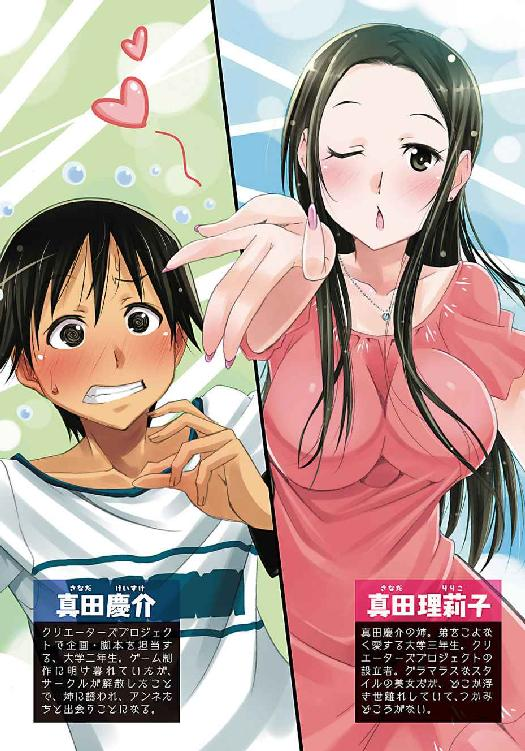
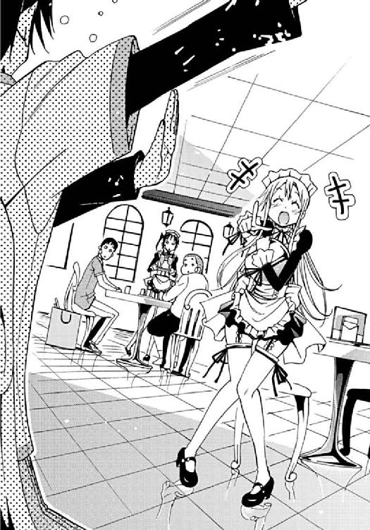
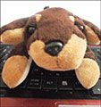

| アニメアライブ (電撃文庫) | |
| 秋傘 水稀 | |
| (2014) | |

本書（電子版）に掲載されているコンテンツ（ソフトウェア／プログラム／データ／情報を含む）の著作権およびその他の権利は、すべて株式会社ＫＡＤＯＫＡＷＡおよび正当な権利を有する第三者に帰属しています。
法律の定めがある場合または権利者の明示的な承諾がある場合を除き、これらのコンテンツを複製・転載、改変・編集、翻案・翻訳、放送・出版、公衆送信（送信可能化を含む）・再配信、販売・頒布、貸与等に使用することはできません。
Prologue
秋葉原にある雑居ビルの一室で、世界は作られていた。
作画担当は鉛筆を走らせ、真っ白な用紙にキャラクターの輪郭を描く。
音響担当はヘッドホンを装着してメロディを打ちこむ。
声優担当は台本を読んでキャラクターに命を吹き込む。
制作メンバーたちは手と手を重ねて、アニメを制作していた。
そのメンバーの中で俺もアニメを──世界を作ることになった。
四月十二日
「もう慶介の世界を作るの、やめるよ」
愕然とした。
たぶんいまの俺は横っ面を引っぱたかれたような顔をしている。
「ぼく、サークル辞める。絵を描くのはもう終わり」
遊佐の言葉に血が凍った。
「......サークルに不満があるわけじゃないんだ。慶介のシナリオが嫌いなわけでもない。ぼく自身の問題なんだ。絵を描いて生きていくことに、正直、限界を感じた」
焦った。遊佐がいなくなることは、俺の四肢が引きちぎられるのと同義だ。
俺がシナリオライターで、遊佐がグラフィッカー。その役割で俺たちはずっとゲームを制作してきたのに......。
「慶介。ぼくは現実を見るよ。もうすぐ大学も二年。これから短期留学とか考えてるんだ。勉強だけじゃなくて就職のこともある。このご時世、二年生から就職活動を意識したって遅くない」
そう言って、遊佐はサークルを辞めた。
遊佐の脱退はほかのサークルメンバーにとっても衝撃的な一撃で、音楽担当も、プログラマーも、サークルから離れていった。
俺が立ち上げたゲーム制作サークルはがらがらと音を立てて崩壊した。まるで積木が崩れたかのように。
俺はひとりぼっちになってしまった。
「──ん」
目が覚める。
ここはどこだっけと目を擦る。ぼやけた視界が明瞭になり、賑やかな食堂の風景が映った。
ああ、そうだ。テーブルに突っ伏してうたた寝してしまったんだ。ガラス窓から射す春の陽光があまりに心地良かったから......。
けど、目覚めの気分は悪い。思い出したくない過去の記憶が、夢となって再現されたことは勘弁してほしかった。
何気なく外の景色を眺める。青い空の下、キャンパスに植えられた桜が桃色の花弁を立派に咲かせている。はらはらと舞い散る桜の花びらに混じって、外は学生たちで溢れ返っていた。彼らの活気に満ちた声が食堂まで響いてくる。
「そこの君！ 特撮ヒーロー研究会に入ればコスプレし放題だぞ！ いっちょ世界を驚かせようぜ！」
「どうだい、ぜひアイドル研究会に入ってみないか！」
春の恒例行事、新入生向けのサークル勧誘。まだ大学キャンパスを歩き慣れない新入生を見つけてチラシを渡したり、呼び止めてサークル室まで連れていったりするのだ。
新入生は勧誘の勢いに戸惑いながらも、誘われて満更じゃないって顔つきをしている。
きっと、彼ら彼女らはこれから自分の居場所と仲間を見つけるんだろう。
「......春は、眩しいな」
つと、外の景色から目を逸らす。
買ってきた紙パックのプリンジュースの口を開けて、持ち運び用砂糖をどばどば入れる。ストローを挿して飲んでみるが、甘さが口の中に広がらない。墨を飲んでいるかのような気分だ。
プリンジュースを飲みながら、テーブルの上に広がった書類を手にする。
その書類とは、プロットだ。
プロットとは小説や映画など、物語の構想を簡単にまとめたものだ。俺が手にしているプロットはゲーム用で、ストーリーの流れ、キャラクターや世界観の設定が書きこまれている。
頰杖をつきながらプロットを見つめていると──すっとプロットが視界から消失した。
「慶介みーつけた」
視界の正面、見知った人物が俺のプロットを奪っていた。
桜色の唇に健康的な肌の色。整った顔立ちは可愛いというより美人で、ピンクのワンピースを着ている姿は桜の精を連想させた。
「姉ちゃん」
真田理莉子。学年がひとつ上の先輩でもあり、俺の姉でもある人物が目の前にいた。
「またそのプリンジュース飲んでるの？ どうせ砂糖入れたんでしょう」
「糖分は俺の血液みたいなもんだよ」
「糖尿病になっちゃうわよ」
「ほっといてくれ」
自然と口調がささくれ立つ。
「あら、今日はやけに機嫌が悪いじゃない。......あ、わかった。お姉ちゃんにしばらく会えなかったから寂しかったんでしょう。そうでしょう。もう慶介ったら、連絡くれたらいつでも会いに行ってあげたのにー」
「頼むからもっと想像力を使ってくれ」
「あ、お姉ちゃんに頭なでなでしてほしかったのね。もう、照れ屋なんだから」
「それは間違った想像力の使い方だ！」
「それじゃあ添い寝してほしかったのね！」
「もう想像力使わなくていいから黙れよ！」
「うふふ。黙らないわよ。せっかく可愛い弟に会えたんだもの。お姉ちゃん嬉しい」
「......そっちはやけにご機嫌じゃないかよ」
「ええ。ようやく準備してきたことが形になりそうなの」
肌をなぞられるかのような姉ちゃんの艶っぽい声色。黒絹のようなさらさらとした髪をかき上げながら、俺のプロットを一瞥してにこっと微笑んだ。
「慶介、これプロットでしょう」
「......返してくれよ。姉ちゃんには必要ないものだろ」
「なら慶介にとっては必要なものなのね。もしかして、サークル活動再開するとか？」
「......そのつもりはないよ」
「だったら私に貸しといてよ」
返せよと、食い下がれなかった。
──遊佐に渡すはずだった次回作のプロットなんて、確かにいまの俺には必要ないものだ。
「......姉ちゃん、なにしに来たんだよ。わざわざ俺のプロットを奪いに来たのか？」
「まさか。直接会って伝えたかったことがあるの。うふふ、言っちゃうわよ。お姉ちゃん宣言しちゃうわよ」
対面のイスに姉ちゃんは座り、優雅に足を組む。ワンピースの裾が少しめくれて果実みたいな太ももが露わになった。
姉ちゃんは見た目の華やかさに加えてスタイルもいい。締まるところは締まっていて、出ているところはしっかり出ている。豊満なその胸とむっちりとした太ももに、俺の周囲でくつろいでいる男子学生たちがちらちらと視線を向けている。ルックスだけなら姉ちゃんはグラビアアイドルにスカウトされたって不思議じゃない。
「慶介、お姉ちゃんと一緒に世界を変えましょう！」
残念なのは、どこか浮世離れしている点だ。
「......具体的にどう世界を変えるんだよ」
馬鹿馬鹿しいと思うが、一応聞いてみる。さて、子どもの頃と違ってどう世界を変えるつもりか......。
「アニメを作りましょう」
は？ いま、アニメと言ったのか？
「『クリエーターズプロジェクト』。それが、私が計画したアニメ制作プロジェクトよ」
初耳だ。
前々から水面下でなにか動いていることは薄々感づいていたが、よりにもよってアニメ制作かよ。ＤＶＤ買い揃えるぐらいアニメが好きなのは知ってるけど......。
「このプロジェクトはね、将来プロを目指すクリエーターに、私がアニメ制作に必要な場所と設備を無償で貸し与えるの。そこでプロジェクト参加者たちにアニメを制作してもらう」
「話だけ聞くとサークル活動の延長線みたいだな」
「いまはそれでいいと思ってる。規模が小さいし。でも将来的にこのプロジェクトを通して、アニメ制作会社を立ち上げる気なの」
会社という響きに、どきっとして思わず両肩がびくつく。
「いや、ちょっと待てって！ 起業するなんてはじめて聞いたぞ！」
「だっていまはじめて言ったもの」
あっけらかんと言ってくれる。
姉ちゃんがアニメに思い入れがあることは前々から承知だが、起業まで考えていたとは気づかなかったな......。
「あのな、姉ちゃん。起業なんて軽々しく口にしたけど、大変なことだろ。第一、金はどうするんだよ。運転資金は？ 設備資金は？ 事業内容にもよるけど、会社設立に必要な資金は３００万から５００万って言われているんだぞ。いや、それでも最低だ。余裕をもって１０００万は持っておきたい。そんな金、姉ちゃん持ってないだろ」
「あら、具体的な数字まで出すなんてやけに詳しいじゃない」
「話をそらすなよ。俺はいま姉ちゃんの資金について聞いているんだ」
「一応、設備は整えたわ。運転資金は......まあ、明日会社を設立するわけじゃないし、なるべく融資に頼らないで働いてお金を貯めていくわ。ファイト、私」
「......なにがファイトだよ。仮に資金面の問題をクリアできても、無理だ。アニメ制作会社なんて父さんが認めるわけないだろ」
「ええ。案の定お父さんに反対されたわ。でも私も食ってかかっちゃった。てへ」
「てへ、じゃねえよ。なに父さんと喧嘩してんだよ」
「結構やりあったかなー。でもお父さんとの口論は平行線でね、そこで決着をつけるためにお父さんが条件を出したの。将来的にアニメ制作会社を立ち上げるなら、インディーズアニメフェスティバルで最優秀賞を受賞しろって」
「インディーズアニメフェスティバル？ 聞いたことないけど、なんだよそれ？」
「関東アニメーション連合会主催のコンテストよ。毎年八月、プロアマ問わずアニメ作品を募集して、大きなホールを借りて上映会をやるの。アニメ監督や音響監督など現場で働いている人を審査員に招いて、会場で優秀作を発表するのよ。アニメの甲子園って言えばわかりやすいかな。私も数年前からボランティアスタッフとして参加しているわ」
「関東アニメーション連合会ってのは？」
「関東を中心としたアニメーションを制作する大学サークルや社会人サークルの集まりよ。自主制作アニメの普及と発展のために、インディーズアニメフェスティバル、通称アニフェスを開催しているの。ちなみに、過去の受賞作はアニフェスで有名になってＤＶＤ販売、小説化、漫画化もされたのよ。すごいでしょ。そこで、クリエーターズプロジェクトはアニフェスにエントリーするわ。そして受賞して、起業という私の夢をお父さんに認めてもらう」
「......もし受賞できなかったらどうするんだよ？ 父さんのことだ、なにか注文つけてるんだろ」
「私は二度とアニメ制作に関わらない。クリエーターズプロジェクトも解散。そういう約束でお父さんと張り合うことに決めたの。でもね......ひとつ困ったことがあるの」
「困ったこと？」
「いまクリエーターズプロジェクトは企画・脚本をやれるメンバーがいないのよ。そこで私の可愛い弟、慶介にアニメの企画・脚本をやってもらいたいの」
「......俺、アニメの脚本なんて書いたことないぞ」
「大丈夫よ。ゲームのシナリオ書けるんだから、アニメの脚本だって要領さえ摑めばやれるわ。最近ではゲームのシナリオライターがアニメの脚本をやったりもしてるのよ。だから慶介、やってくれない？」
「............」
返答するのに間ができた。
「悪いけど、断る」
一拍置いて、ようやく拒否を声にする。
「起業なんてやめとけよ姉ちゃん。どうせうまくいくわけがない」
「やめない。だって私はアニメ制作会社を立ち上げたいもの」
「そうかい。じゃあ勝手にすればいい。クリエーターズプロジェクトなんて俺の知ったことじゃないよ。姉ちゃんの遊びに付き合うつもりはない」
「遊びじゃなくて本気よ、私。だから脚本やってよ」
「別の人間に頼めばいいだろ」
「過去、シナリオコンクールで優秀賞を受賞した弟の力を借りたいの」
「持ち上げたってダメだ。起業なんて言うけど、俺には姉ちゃんがお花畑を浮かべているようにしか見えない」
「本気だもんっ。ぷんぷん」
「可愛く言ってもダメだ！」
「んー、慶介は気難しい子ね。本気の証明か......。そうね......」
姉ちゃんが人差し指をあごにあてて思案すること一分。「そうだ！」と妙案でも思いついたのかパンと手を叩く。
そっと、姉ちゃんは両手を俺の顔へと伸ばす。マシュマロみたいに柔らかな手のひら。俺の両頰をすくい上げるように持ち、顔を固定させる。
え？ と一瞬困惑したのが最大の失態だった。
──俺の唇に、柔らかな唇が重なった。
瞬間、頭の中が真っ白になった。
あまりに一瞬の出来事に、最初はなにが起きたのか理解が追いつかなかった。
身を乗り出す姉ちゃんと、俺の唇に伝わる甘い感触と、水を打ったかのように静まり返る食堂と......。ゆっくり、パズルのピースが頭のなかではまっていく。
「──これぐらい本気。てへ」
姉ちゃんが唇を離し、ちょっと照れくさそうにはにかんだそのときすべてを理解した。
顔が真っ赤になって頭が沸騰した。
「なっ、なんつーことをやらかしてんだ馬鹿姉貴ッ！」
「だって私の本気感じてくれないじゃない」
「だからっていきなりこんなことをっ！」
「慶介が脚本やってくれないんだもんっ。ぷんぷん」
「可愛く言ってごまかすな！ むかしから姉ちゃんはおかしなことを──」
刹那、ぞっと背筋が凍るような殺気を感じた。
俺の周囲、男子学生たちが千年の恋から冷めたような顔つきをしている。彼らは射殺すような視線で俺を睨み、死ね、死ね、と背後に怨嗟を渦巻かせている。
くそっ、俺はなにも悪くないだろ。そんなに睨むなよ。
「私の本気は見せたわ。これでやってくれるでしょ、脚本」
「......それでも、無理だ」
目線を下げて、俺は首を振る。
「姉ちゃんがたとえ本気でも、俺はやっぱり断るよ」
「どうして？」
「シナリオとか、脚本とか......物を書くことはやめようと思っていたんだ。だからサークル活動も再開しない」
去って行った遊佐の小さな背中がフラッシュバックした。
「......サークル解散してさ、遊佐は夢から卒業した。ほかのメンバーも俺の周りからいなくなって......。ははっ、笑えるだろ。あんなに賑わっていたサークルもいまじゃ俺ひとりだ。ゲーム制作もできなくなってちょうどよかったし、今回で創作はすぱっとやめることにしたんだ。これからもう......物は書かない」
青春すべてぶち込んでも、最後はひとりだ。窓ガラスの向こう、お祭りみたいな新勧ムードに盛り上がれる人間に俺はなれない。
「それ噓」
だがはっきりと、姉ちゃんは言い切った。
「だって、本当にやる気のない人間はこんなところでプロットを読んでいないでしょう」
虚を衝かれた。
「............」
空中分解した俺のサークル。腹の底にもやもやとした蟠りが溜まっていて、俺は停滞するように食堂でプロットを眺めていた。
物を書く気がないと口で言っておきながら、紙切れ同然となったプロットを読んでいたのはなぜだ。
すぱっと割り切れない感情を抱いているのはどうしてだ。
「アニメ作りましょう、慶介」
「............」
「ほら、返事」
「............」
「よし！ お姉ちゃんがもう一回キスしてあげるわ！」
「やめろ！ ああもうわかったよ！ やるよ！ アニメの脚本をやらせてもらう！」
「あは！ お姉ちゃん嬉しい！」
「でも手伝うのは今回だけだ！ 八月のアニフェスまでだ！ 脚本を書いたら俺は創作を引退する！」
姉ちゃんの手に渡ったプロットを見つめる。もし、俺の書いたシナリオが映像となるのなら......。そうだ。このままもやもやした気持ちを引きずったままより、今回でしっかりけじめをつけて創作から身を引いたほうがいい。
「やっぱりお姉ちゃんのキスが決めてかしら」
「違えよ！」
「それじゃあ純粋に物を作りたいという気持ちなのね」
「──っ！」
口元まで出かかった感情を、プリンジュースを飲んで腹の底まで押しやる。さっきまで味を感じなかったのに、いまでは口の中いっぱいに甘さが広がった。
「それじゃあ早速出発しましょうか。クリエーターズプロジェクト制作室へ」
大学を出てバスに乗ること十分。俺は姉ちゃんに引き連れられて秋葉原駅まで移動した。どうやらクリエーターズプロジェクトの制作室は秋葉原にあるみたいだ。
秋葉原にはそこそこ遊びに来る。駅前でビラを配っているメイドさん、ビルの壁面にでかでかと掲げられた新作アニメの広告、街全体が不思議な活気に満ちていて飽きない。
「慶介。こっちよ」
駅前の雑多な人波のなか、俺は姉ちゃんのさらさらした黒髪に惹かれるようについていく。どれほどの人がいても、姉ちゃんは群を抜くほど美人で目立った。
「なんで制作室を秋葉原に構えたんだ？」
「交通の便がいいし、アニメ制作に必要なものも揃えやすい。それでもって決めては家賃ね。ゼミの教授の奥さんが不動産屋をやってて、家賃を安くしてもらえたの」
「安いって言っても姉ちゃんが負担してるんだろ。光熱費とかだってそうじゃないのか。負担が大きすぎないか？」
「面白いアニメを制作してもらえれば安いものよ。あ、制作で思い出したわ。慶介、注意しておいてほしいことがあるの。『せいさく』って言葉だけど、アニメ産業では『制作』と『製作』は使い分けてるの」
「具体的には？」
「製品の製を使う『製作』は、アニメの出資や流通を行う意味があるの。制御の制を使う『制作』は、実際にアニメを作ることね。だから慶介がこれからやるのは『制作』のほう」
「そういえば、アニメのスタッフロールで『○○製作委員会』とか見かけるけど、あっちは製作なんだな」
「ええ、そうね。例えば『とらドラ！』ってアニメ知ってる？ 原作がライトノベルなんだけど。あれはね、『とらドラ！製作委員会』が製作になってるわ。これは俗に製作委員会方式って言われているアニメ製作のやり方なの」
「製作委員会方式？」
「せっかくだから教えておくわ。製作委員会方式は、複数の企業が共同出資した制作資金で、制作会社にアニメを作ってもらうの。企業が出資した割合に応じて利益が配分される。出資する企業はテレビ局、広告代理店、玩具メーカー、ゲーム会社とかいろいろあるのよ。んーそうね、もう少し簡単に説明すると、みんなでお金出して、集まったお金を制作会社さんに渡してアニメ作ってもらいましょーって感じね。ちなみに、テレビシリーズのアニメ一話の制作費はだいたい１０００万から１３００万ほどって言われているわ」
「たった三十分のアニメで約１０００万!? ワンクールだったら１億３０００万じゃねえか!?」
「ああでも、制作費がもっと削減されているアニメもあるんでしょうけど」
知らなかった。俺はアニメ産業の事情について無知だし、制作についても一部のことしか知らない。
「いまのアニメは製作委員会方式がほとんどね。メリットとしては出資金におけるリスク負担が減ること。もしアニメがヒットせずこけても、複数の企業が出資しているからリスクが分散されるの。一社が大きな赤字を背負い込む必要がないってわけ」
「......クリエーターズプロジェクトとは逆だな」
「逆？」
「製作委員会方式は複数企業による出資。でも、クリエーターズプロジェクトは姉ちゃん単体の出資だ。クリエーターに制作環境を無償で提供するという意味で姉ちゃんは出資してるって言っていいよな」
「お金を出すのは当然よ。いずれ会社を立ち上げる予定だし。でもそうね、メンバーの才能を担保に出資してると言ってもいいかもしれないわ」
裏を返せば、メンバーの才能を見誤り、優れたアニメを作れなければこのプロジェクトは失敗。姉ちゃんひとりが損するってわけだ。
......まったく、リスクが高いことを。いつか起業したいなんて、血の繫がりってのは怖いな。
秋葉原駅周辺は人で雑然としていたが、岩本町駅のほうまで歩くと歩道に行き交う人は少なくなっていた。岩本町駅からさらに南、細い路地を歩いていると低いビルが立ち並び、さっきまでの賑やかさがすっかり静かになった。
クリエーターズプロジェクトの制作室はもうすぐなのだろうか。どんな人がプロジェクトに参加しているんだろう。やっぱりアニメ制作が好きな人たちなんだろうな。もし年上がいたら失礼のないようにしないと。
参加人数はどれくらいだろうか。アニメ制作ってやっぱり大人数だよな。二十人ほどか？ いや、小規模だと言っていたから十人ぐらいかな？
「姉ちゃん。アニメ制作のメンバーって──」
「着いたわ。慶介」
三階建ての雑居ビル前、そこで姉ちゃんはぴたりと立ち止まる。ビルの白壁は都会の排気ガスに汚されたのかくすんでいる部分があり、少し時代を感じる。
「このビルに、クリエーターズプロジェクトの制作室があるわ」
「俺の視界にはメイド喫茶しか映ってないけど」
ビルの一階、ガラス窓から店内を覗くとメイドさんがウエイトレスをやっている。
「一階はメイド喫茶なの。制作室は二階よ。ちなみに三階は空室みたいだわ。ほら、行きましょ。慶介」
ビルの脇、階段を上る姉ちゃんの後ろをついていく。
二階に上がると目の前にドアがあり、『クリエーターズプロジェクト！』とマジックペンで書かれた張り紙が貼ってある。
「さ、入りましょうか」
あ、待った。クリエーターズプロジェクトに参加している人の話を聞かせてほしい──なんて思ったときには遅かった。
姉ちゃんがドアを開けた。
「......あ」
制作室の光景が広がって思わず声を漏らしたのは、俺だ。
部屋は雑居ビルの一室とあって、広い。高校の教室ぐらいはあるだろうか。
仕切りはないが部屋を大まかに分けると、リビングと作業室といったところか。
リビングの部分には脚の低い食卓テーブルが置かれ、くつろぐのに十分なスペースがある。備え付けられたキッチンや洗面所。壁際には大きな棚が置かれ、ＤＶＤのトールケースがぎっしりとしまわれている。ぱっと見た感じアニメのＤＶＤだ。さらに棚には本もあって、表題に『背景集』や『デッサン技術』などと記載されたものがある。資料だな。
部屋の奥にはシンセサイザー、そして机が三台ある。こちらが作業室だ。三台の机のうち二台はデスクトップ型のパソコンが置かれている。残った一台だが、机の上には白紙の紙束、鉛筆削り、トレース台、消しゴム、鉛筆、背景資料の書籍、スキャナー......それらアイテムが雑に置かれている。
ああ、あの机の光景は知っている。原画作業などするときの動画机だ。脳裏に懐かしい記憶が蘇り、しゅっ、しゅっ、と鉛筆で線を引く音がいまだ耳に残っている。
その過去の音が、いまも静寂なこの部屋に広がっていた。
幻聴じゃない。
デスクチェアに座っている小柄な少女が、机に向かってしゅっ、しゅっ、と鉛筆を走らせていた。
俺の足は、磁石のようにその音へと引き込まれていった。
近くで聞きたかった。その音を聞くと、欠けた部分が埋まるかのように落ち着いたから。
だが、線が引かれる音はピタリと鳴り止んだ。俺の登場に、少女が手を止めてこちらに視線を向けたからだ。
少女の容姿は目立った。体つきは華奢で、背丈も小さい。一見中学生に見えるが、赤茶色のブレザーを着ているところから高校生だろう。肌は乳白色で、瞳は吸い込まれそうなほど綺麗な青。ガラス窓から射す春の光を浴びて、黄金色のストレートヘアーがよりいっそう輝いている。
俺の目の前にいた彼女は......そう、外国人だ。
「だれだ？」
小さな外国人さんは首を傾げ、きょとんと俺を見つめていた。
日本語、しゃべれるんだ。
「紹介するわ、アンネ。この子が、クリエーターズプロジェクト四人目のメンバー、真田慶介。アニメの企画・脚本担当よ。あと、私の可愛い弟」
呆けていた俺の代わりに質問に答えたのは姉ちゃんだった。
──瞬間、喜びが弾けた。
「脚本家！ まてた！ ずっとずっーとあたしまてたぞっ！」
瞳をダイヤみたいに煌めかせる外国人さん。デスクチェアから飛び降りて風のように俺のそばへと駆け寄る。
「これでアニメ作れる！ やっと作れる！ しくしく！ しくしくな！」
はい？ しくしく？ えっと、なに言ってるんだ......。
「アンネ、ほかのメンバーは？」
姉ちゃんが外国人さんに聞く。広い制作室には外国人さんしかいなかった。
「朱と奈菜、きょうこれない言てた」
「んー、今日はメンバー全員集合できないか......ま、仕方ないわね」
「ちょっと待て。姉ちゃん、制作メンバーって何人なんだ？」
「制作メンバーは私を除いて四人よ。声優の朱と音響担当の奈菜、そしてそこにいる作画担当のアンネと、脚本家のあなたで四人」
啞然とした。
え、噓だろ？
たった四人で、アニメなんて作れるのか......。
「しくしく、けーすけ！」
......あ、もしかしてこの子、『よろしく』って言ってるのか？
どんな運命の巡り合わせか、日本語がちょっとカタコトな彼女と、俺はアニメを作ることになった。
リビングにある食卓テーブルを挟んで向かい合う俺と外国人さん。お互いに自己紹介することになったのだ。
「あたしはアンネリーゼ・バルシュミーデ！ アンネってよんでいいぞ。いまの春、ドイツから日本にひこうきでびゅーんだ。アニメ制作では作画担当。動画とか原画とか、編集やる。朱と奈菜のやれないこと全部やる。あとはだな......高校二年生。ドイツの学校からへんにゃーした。いまは家族さよならで、ひとり。学校のりょうに住んでる。日本語勉強ちゅだけど、そのうちかんぺきだ。きのうはバイトのてんちょに日本語ほめられた。えへん」
砂金みたいに色鮮やかな髪が印象的な女の子、ドイツ人のアンネ。留学生とのことで日本語が一部おかしいけど、外国人にしては上手な部類に入るんじゃないだろうか。
アンネに創作歴を聞くと、小さい頃から日本のアニメが好きで、ドイツにいた頃から絵を描いていたとのこと。過去にひとりでアニメを制作した経験もあるみたいだ。
「えっと、次は俺の番だな。さっき姉ちゃんが説明したと思うけど、改めて。俺の名前は真田慶介。大学二年生だ。以前はゲームのシナリオライターをやっていたんだけど、今回ここでアニメの企画・脚本をやらせてもらう」
「ゲーム作ってたんだ！ すごい！ どんなゲーム作っていたんだ？」
「メインはアドベンチャーゲームとか、ビジュアルノベル系のゲーム......って説明してわかるかな。絵と音楽を楽しみながら小説読む感じのゲームなんだ。えっと、最近の代表的なものだとシュタゲとかが有名なんだけど」
「シュタゲ知ってる！ アニメもみた！ ゲームのシナリオライターなんてけーすけはすごい！」
「いや、すごいといってもアマチュアだから。それに正直、アニメの脚本なんてやったことないんだ。だから迷惑をかけるかもしれないけど、よろしく頼む」
「うん！ コンテストでさいゆーしゅーしょー、超がんばろ！ さいゆーしゅーしょでうまくいけば小説にマンガ、そしてＤＶＤのはみちん！」
「ハミチン!?」
「くすっ。慶介。アンネは日本語が未熟だから、おかしな日本語を使っちゃうことがあるのよ。さっきのはアンネ語といったところかしら」
さっきの『しくしく』もアンネ語か。日本語に変換してみるか。
ＤＶＤハミチン、はみちん......。ああ、変なイメージが先行してしまう言葉だが、置き換えると、はんざい、はんたい......って、それじゃあ意味がわからない。......文脈から考えてみると............もしかして、ＤＶＤ販売、か？ おい、そうだとしたら『は』の一文字しか合ってないじゃねえか。どこをどう間違えたんだよ。......いやでも、俺だって異国にいたらおかしな言葉遣いをするかもしれないから仕方ないか。
「アンネ。えっとな、おそらくだけど、さっきのやつは販売だ。ＤＶＤ販売。えっと、紙と鉛筆は......あった。販売の漢字はこう書くんだ」
「おおっ、そーか！ メモしとく」
アンネは学生服の内ポケットから小型のメモ帳を取って、『はんばい／販売』と覚えた言葉を書き込んでいく。他にもメモには『いげん／威厳』、『こうふく／幸福』、『アブラニンニクヤサイマシマシ／二郎』など書きこまれていた。ていうか『アブラニンニクヤサイマシマシ』はなぜメモをした。
「ありがと、けーすけ。日本語覚えられてうれし。はっぴー」
楽しそうに日本語をメモ書きしたアンネ。思わず心臓がドクンと脈を打つほど愛らしい笑顔だった。
「これでまたひとつかしこくなった。あたしのちしきが臨界点」
「難しい言葉を覚えているのはすごいけど、使い方間違ってるからな」
賢いと褒めてあげたいけど、あと一歩足りないな......。
「あー、早くアニメ制作したいな。けーすけ、けーすけ、こないだな、日本の自主制作アニメみたんだけど、絵をガシガシ動かしててすごかった。あのアニメ、けーすけにみせてあげたい。制作過程がブログに書いてあったけど、イメージボードからおもしろくて、プリプロダクションの段階でしかりしてる。コマは三コマ打ちが基本だけど、バトルのシーンは作画ケチらず一コマ打ち。三分のアニメで作画枚数が千枚以上なんだ。作画は液タブ使ってさいしょからデジタルでペーパーレス、それで──」
やっぱ賢いのか!? 作画関係の単語はしっかり覚えているのか!?
いかん、話についていけない。アンネ、君は賢いのか賢くないのかどっちだ。
「ずいぶん興奮してるな」
「アニメ作れるんだ！ こーふんするに決まってる！ すごくうれし！」
にかっとアンネが白い八重歯を見せて微笑む。
ああ、物作りを楽しんでいる人間の顔つきだ。
かつて自分が持っていたものだ。
「慶介」
ぽんと、俺の肩に姉ちゃんが優しく手を乗せた。
「これ、制作室の合鍵。メンバーみんなに渡してあるから慶介にも。制作室は自由に出入りしていいわよ。資料も好きに借りていっていいから」
一瞬、鍵を受け取るかどうか迷ってしまったものの、結局俺は鍵を手にした。
「アニメの制作工程だけど、大雑把に説明するわね。まず企画があって、脚本が作られる。脚本に沿って絵コンテが切られて、絵コンテをもとに作画作業に入る。それから編集、音響、アフレコをして完了。テレビで放送されているアニメも基本的にこの流れよ」
規模こそ違うものの、テレビ放送されているアニメ制作と同じ工程をたどるわけか。
「慶介はこれからアニメの企画、プロットを作るんだけど、プロット作りはまかせるわ。一応テンプレートはアンネに渡してあるから、もし必要なら参考にして」
そう言うと、姉ちゃんはカバンを手にして玄関へと向かった。
「もう帰るのかよ？ 姉ちゃんはスポンサーだろ。作品の方向性とか、姉ちゃんがこうしろって決めるものじゃないのか？ いいのか、俺が自由に企画を決めて」
「私が直接制作に関わったら、いろいろ壊しちゃいそうだから。私ができるのはサポートだけ。それじゃあ帰るわね。これから家庭教師のバイトもあることだし。結構バイトに時間取られちゃうからあんまり制作室に顔出せないと思うわ。ごめんなさいね」
家庭教師のバイトなんて前はやっていなかった。バイト増やしたのか......。
改めて制作室を見回す。二台のパソコン。液晶テレビモニター。シンセサイザー。プリンターにスキャナー。トレース台。アニメ制作に必要であろう設備がこの部屋には揃っている。
どれほどの金と時間を費やしたのかわからないが、これらすべての準備をするのは生半可な覚悟じゃできないはずだ。
......そうだよな。覚悟がないと、起業なんてしようとしたらダメなんだ。
「理莉子、ありがと。アニメ制作がんばる！」
アンネがぺこりと頭を下げる。彼女の姿勢と言葉の端々に姉ちゃんへの感謝が詰まっていた。
斜陽が窓ガラスから射し込み、部屋を茜色に染めている。
姉ちゃんが去って、制作室には俺とアンネだけとなった。
「けーすけ。理莉子も言ていたけど、アニメを作るにはまず企画だ。けーすけにはこれから企画を考えてもらう。それからその企画をメンバーみんなで話し合うんだ。その話し合いを『本読み』言うから覚えておいてくれ」
本読みと聞くと国語の教科書朗読を思い出すが、アニメ制作においては打ち合わせ的な意味合いに近いんだろう。
「俺が企画を立ててみんなの前で発表、そして意見交換か......。俺の企画にみんなが賛同しないと、制作には移れないってわけだな」
「さんどう？」
「ああえっと、俺の企画を受け入れてもらえるってこと」
「うん。本読みはだいじ。作品のほーこーせー決める。だから本読みだけはメンバーみんなで話し合う」
「そのメンバーだけど、あと二人はどんな人なんだ？」
「二人とも女、高校生。あたしと同じ二年」
え、ほかのメンバーも女子高生!? 高校生はアンネだけじゃないのか!? おいおい、姉ちゃんは会社設立の命運を子どもたちに握らせたのかよ。それはちょっと博打すぎないか......。
しかも俺以外のメンバーみんな女の子か......。異性だからって下手に意識しないで、彼女たちとうまくやらないとな......。
「それで企画だけど、けーすけはどんなアニメを作りたいんだ？ どんな話を書きたいんだ？」
「まだ具体的に書きたい話は考えてないな。脚本家としてプロジェクト参加を決めたのは今日だし」
「好きなアニメあるか？ さいきんアニメはみてるか？」
「最近のアニメはあんまり観てないな。ガキの頃はたくさん観ていたんだけど」
とはいえ、むかしのアニメの話なんてしてもアンネにはわからないだろうな。ましてや男と女の子が好きなアニメは違うだろうし。
「アンネは好きなアニメとかあるのか？」
「『逆シャア』」
即答に、思わずむせ返った。
え、噓だろ。この子、『逆シャア』とか知ってるのか。
「あたし、『逆シャア』好き！ いいアニメだった！ ＭＳも生まれて十年いじょう、メカデザインも落ち着くとこに落ち着いたよなぁ！」
目の色を輝かせて語るアンネ。思わず微笑んだ。むかしのアニメがふっと出てきて、胸がくすぐったくなった。
「アンネはすごいな。いまの女子高生で『逆シャア』知ってる子はなかなかいないぞ。アンネはむかしのアニメとか知ってんだな。ほかに好きなアニメはあるか？」
「『メダロッド』！ ドイツの有料チャンネルで日本のアニメやってるんだ。そこでみた！」
「あ、観てた観てた。俺はリアルタイムで観てたよ。うわー、懐かしいな。熱いロボットアニメなんだよな。ビデオ録画失敗して泣きかけたぐらい毎週楽しみにしてたんだよ」
「さいきんアニメだと、『デュラララ!!』がおもしろかた！ 池袋ってホントにあるんだな！ 朱に連れてってもらた！ 背景、すごいリアル！ でも自販機投げる人とか、すし屋で働いてるロシア人とか、まだみてないからまた行きたい」
「あははっ、そういう人はリアルにいないからな」
「む。モデルの人いないのか。それはちょと残念」
「アンネは主に作画担当なんだよな。どんな絵を描くんだ？」
「人を描くのが好きだし、メカとかロボは得意。機械描くのは楽しい。こーふんする。そだな、いま描いてみる」
アンネが部屋の奥にある動画机に向かい、デスクチェアに腰を下ろす。手に持った鉛筆をＡ４サイズの白紙に走らせる。
俺は静かに、絵を描くアンネの姿を横で見つめていた。
──思わず、息をのんだ。
だって、線を引くスピードがあまりに早い。鉛筆がダンスのように軽やかに舞っている。瞬きしている間に、真っ白だった用紙にどんどんキャラクターの線が引かれていく。
釘づけになって無言でいると、もうキャラクターが紙の世界に息づいていた。
描かれたキャラクターは女性の全身図。容姿や顔立ちから歳の頃は高校生くらい。目立った特徴は、左腕にガトリング砲がついていたこと。アンネオリジナルの武装したアンドロイドってわけか。
上手いな、抜群に。絵を描く速さだけでなく、デッサンも狂っていない。
この子が俺の脚本の絵を描いてくれるのか。
「アンネ。絵、上手いな」
「ほ、ほんとか！ えへ、えへへっ。うれし」
褒められて頰を赤くするアンネ。照れた表情を浮かべながら、消しゴムのかすをゴミ箱に捨てる。
そこで俺は気づいた──ごみ箱を埋め尽くすほどの、大量の鉛筆削りのくずに。
たくさん絵を描いて、鉛筆を削って......。ああ、好きなんだ。絵を描くことがどうしようもなく。
博打、じゃないかもしれない。姉ちゃんがこの子に自分の夢を託した意味が少しわかった。
「あたし、日本のアニメが好き」
アンネは次の絵を描きながら嬉しそうに呟く。
「日本のアニメみて、日本語の勉強はじめた。ドイツじゃテレビうつらない日本のアニメは、ほとんど字幕、吹き替えなし。だからドイツにいるときからいっぱい日本語勉強した」
「アンネみたいに日本のアニメが好きで、日本語の勉強する子は多いのか？」
「多いぞ！ いっぱいいる！ あたしは日本語だけじゃなくて絵も描きはじめたけどな。友達誘ってアニメも作った。でも、アニメ制作大変。友達やめちゃった......。あたしひとりでアニメ完成させたけど、映像だけ。音がないからちょとさみしい、つまんない」
しゅ、しゅ、と鉛筆の走る音が西日に染まる制作室に響く。
「でも、ここなら、みんなどっか行かない。みんなでアニメ作れる。それって幸せ」
「アンネが日本に来たのは、アニメ制作がしたかったからなのか？」
「うん！ あたし、将来アニメーターになりたいんだ」
色めく花のような鮮やかなアンネの笑顔。
対して、俺は険しい顔つきを浮かべていたと思う。
頭痛を抑えるように額に手を当てて、溢れ出る暗い感情を潰しながら、なるべく冷静にアンネに説明した。
「......えっと、アンネ。そのな、悪いことは言わない。アニメーターだけはやめておいたほうがいい」
「なんでだ!?」
夢を否定されたことに腹を立てたのか、アンネは絵を描いていた手を止めて息巻く。
「けーすけはおかしい！ 日本のりっぱな文化なのに、どうして文化作てる人たちを否定するんだ！ へんだ、へんだ！ へんたいだ！」
「そういうのは変態と言わない！ ......あのな、アニメーターを馬鹿にしてるわけじゃないんだ。アニメーターになってまともに生きていけない人が多いから言っているんだよ。ドイツにいた君は知らないだろうけど、アニメーターの低賃金労働なんて日本じゃ有名だ。いいのか、働いても貧乏のまま。病院に通うお金もなくて、病気をこじらせて死んでしまっても」
「死ぬのはヤだ」
「だろ」
「でも、もしあたしが死んでも、あたしが描いた絵は死なない」
アンネはひょいと動画机から離れ、アニメＤＶＤのケースがずらりと並んだ棚の前に立つ。そこでどこぞの国の大統領が演説するみたいに両手を大きく広げた。
「日本はこーんなにもたくさんアニメ作ってる。それすごいこと。けーすけの言い方は優しくない。だって、がんばってアニメ作って生きてる人まで、無理だってひてーしてるみたいだ。けーすけ、日本のアニメはすごいんだぞ。ホントにすごいんだからな」
棚からＤＶＤケースをひとつ手に取って、ばっと俺に見えるよう掲げる。
「たとえばこのアニメ、『ウォーターワールド』。これは日本国内のみで作ったアニメだ。さいきんは動画部分を海外に委託してるけど、このアニメは国内だけで制作してる。美術にすごい手がこんでて、日本の作画レベルの高さがはっきりわかる！ それと、『天使からの百通の手紙』。これは雰囲気がよくてだな──」
興奮気味な口調のアンネ。ドイツ人の彼女が、日本人の俺に対して日本の文化を熱く語るこの光景。なんだかこれは日本人として情けないような......。
「そしてだな、あたしのおすすめはこれだ。『忍者バスターズ』！」
アンネが胸の前で大切そうに握ったアニメのケース。パッケージにはデフォルメされた五人の忍者が描かれ、忍者バスターズというロゴがでかでかと挿入されている。
「それ......」
俺は、別に差し出されたわけでもないのに、まるで重力に引かれるように手を伸ばし、アンネの持っていた『忍者バスターズ』を手にした。
「............」
無言で、ただじっと、能面のように目を細め、俺は忍者バスターズのパッケージを見つめていた。
「どったんだけーすけ？ なんか、ちょっと怖いぞ」
「あ......いや、すまん。ちょっとぼうっとしていた。このアニメ......なんつーか、ガキの頃に俺も観てたなと思って」
「けーすけもみてたのか！ おもしろいアニメだよな！」
『忍者バスターズ』。個性豊かな五人の忍者が悪者忍者と戦う子ども向け短編アニメだ。一話だいたい七分ぐらいで、俺が小学生の頃に教育番組で放送していた。
姉ちゃん、参考資料として用意していたんだな......。
「いま一緒にＤＶＤみるか？ あたしはみたい！」
「......いや、遠慮しとく」
俺は首を振って、アンネに『忍者バスターズ』を返した。
「アンネ、プロットのテンプレートを貸してくれ。姉ちゃんからもらっているだろ」
「あ、えっと、プロットは......これだ。さんこうれいは理莉子が書いた」
アンネが机の引き出しからＡ４サイズのプロットのテンプレートを取り出し、俺は中身も確認せず受け取ってすぐカバンにしまった。
「帰っちゃうのか、けーすけ」
「......家で考えるとアイデア出るんだ。企画、練ってくる」
「あ、まてくれ。帰る前にアニフェスのことで教えることある。アニフェスにエントリーできるのは十五分以内のアニメ。今回は制作期間四ヶ月。みんな制作はじめてだから、上映時間十分ぐらいのアニメでいく思う」
「上映時間があまり長くなるような脚本にしなければいいんだな。とはいえ、十分ぐらいって感覚がいまの俺にはわからない。ひとまず企画を持ってくるからチェックしてくれ」
「うん。企画、楽しみ。あたし見せるプロットはできるだけむずかしい言葉や漢字を使わないでくれるとうれし」
わかったと了解して、俺は靴を履いて制作室を出た。
外に出ると、春の空気が口の中に入ってくる。視界に広がる秋葉原の街並み。夕焼け色の空を仰ぎ、ため息を吐いていた。
これじゃあまるで逃げているみたいじゃないか......。
プリンジュースを飲んでざらついた気持ちを落ちつかそうとしたが、パックの中身はもう空になっていた。
自分の住んでいるアパートに戻ったときには、もう夜の帳が下りていた。
大学近くにひとり暮らしをしていて部屋の間取りは１Ｋ、広さは八畳ほど。本棚にしまいきれない小説が床に何冊も積まれているが、いまは整理するつもりはない。
俺はコンビニで買ってきたプリンジュース片手にデスクチェアに腰をかけて、プロットのテンプレートを取り出した。テンプレートには、【作品のテーマ】、【ストーリー展開】など、いくつかの項目があって、それぞれの項目に姉ちゃんが参考例を書いていた。いたのだが......。
【作品のテーマ】
・がんばる人を描く
【ストーリー展開】
・一生懸命がんばる
【キャラクター】
・主人公はがんばる男の子と、ヒロインはキュートな女の子
【見せ場】
・がんばる
【世界観・設定】
・なんかがんばる。ファイト、私！
「参考になってねえ！ 姉ちゃんの創作能力が皆無なのは知ってるけどこれはひどすぎだろ！ 最後とか頭がごちゃごちゃになって考えるのぶん投げたタイプだこれ！」
目眩がする。
でもまあ、姉ちゃんの参考例がなくても、押さえてほしい項目さえ載っていれば問題ない。
ゲームのシナリオを書いていたときからプロットは作っていた。見たところ、アニメのプロットもゲームのほうと通じる項目があって大した違いはない。
──問題は、どんな話を書くかだよな。
「あ」
書きたい話はある。遊佐に届くことなく、作品として形にならなくなったプロット。いまは姉ちゃんが持っているが、パソコンにプロットのファイルデータは残っている。
書きたい。あの物語の脚本を書きたい。映像化してもらいたい。このまま無残に放置しておくなんてことはしたくない。
けど、あのプロットはゲーム用だ。はっきり言って十分のアニメじゃ話がまとまらない。
既存のプロットからテーマだけ残して、設定も、キャラも、ストーリーも原型がないほど大幅な変更が必要だな。新しく書き上げるといっても過言じゃない。でも、物語の芯、伝えたいメッセージ性を残せれば俺の書きたかったものに変わりはない。短編アニメでまとめられるストーリー構成にすれば、アニメのプロットとして通用するんじゃないだろうか。
やってみるか。
パソコンの電源を入れる。ワープロソフトを立ち上げて、ふと思った。
ああ、プロット作りなんて久しぶりだな。
なんだか心に熱が帯びていく。
そうだな、ゲームのプロットからいろいろ変更になるけど、キャラの名前は変えないでおこう。
『椎名由紀奈』。アニメでもその名を。
キャラが死なないように。
「あと、ほかにもプロットも作って──」
──ぼくは現実を見るよ。
キーボードに触れた瞬間、冷たい言葉に指が凍りついた。
暗がりに落ちていた冷たい記憶が蓋を開く。夢から覚めた俺の相方。ずっと俺の絵を描いてくれた遊佐はもういない。熱を注ぎ込んで作ったあのプロットはただの紙切れになった。
熱を入れて作れば作るほど最後に傷ついた。
心の熱が、冷水をかけられたみたいに冷めていく。
「......最後はひとり」
俺の考えた物語を映像化してもらいたい情熱と、躍起になってもどうせ最後はひとりという諦観。矛盾した二つの感情が俺という個体に同居している。相反した感情にどっちつかずで、道の真ん中で右往左往している迷子みたいだ。
......とりあえず、提出するプロットは映像化してもらいたい一本、これを丁寧に作ろう。
四月十五日
秋葉原の駅から歩いておよそ十分。行き慣れてないせいか細い路地に入って少し迷ったが、三日ぶりにクリエーターズプロジェクト制作室前までやってきた。
今回訪れた目的は、完成したプロットをメンバーに見せに来たのだ。
雑居ビルの二階。制作室のドアを開けて中に入る。
──すると、柔らかな音が中耳に響いた。
制作室に舞うピアノの音色。春の小川にたゆたう桜の花びらのような、緩やかで、暖かい旋律。
視線の先、見知らぬ少女がシンセサイザーの鍵盤を弾いている。
セーラー服姿から女子高生だと思うけど、プロジェクトメンバーの子だろうか。
「あっ！」
少女が俺に気づいた。目が合って、演奏が中断される。
「あの、クリエーターズプロジェクトの参加者だよね？」
「えっと、は、はひっ。そ、そうですっ！」
初対面で緊張しているのか、少女は声を上擦らせる。
俺が挨拶をしようと思ったら──バタンッと背後のドアが音を立てて開いた。
「はぁ、はぁ......のど、渇いて、死ぬ......はぁっ、は......」
振り向くと、体操着姿の少女がいた。下がジャージのズボンで、上が半袖のシャツ。彼女は両手をひざの上に乗せて、ぜえぜえと呼吸を荒げている。
顔中汗まみれで、白いシャツはぐっしょり汗を吸って肌に密着している。水分を含んだせいか、シャツからほんのり下着が透けて見えている。凝視するのはまずい。
一体、この子はだれだろうか？
「でも、やった......今日は、四キロ、走ってやったわ......。あとは、夜にボイトレして──あ」
少女が顔を上げて、俺を見つめた。時が止まったように俺も彼女も停止するが、それも一瞬。
「まさか脚本家!?」
鈴の音みたいに綺麗な声だった。
「そうだけど、君もクリエーターズプロジェクトのメンバーかな？」
「ちょ、ちょっと近寄らないでよ！」
「え？ 近寄るなって？」
「あ、汗の臭いが......ああもうっ！ なんでこのタイミングでいるのよ！ 出て行け馬鹿！」
いきなり馬鹿呼ばわりされた挙句、俺は汗だく少女に強引に背中を押され、制作室から追い出された。バタンとドアが閉まって、ひとり外で手持無沙汰となった。
「なんで今日来るって教えてくれなかったのよアンネ！」
「ん？ なんで朱はプンプンなんだ？ 朱はプンプン魔人なのか？」
部屋の中から騒がしい声が外まで漏れている。
「けーすけ、朱がシャワーばしゃばしゃする。ちょっと外でまててくれ」
ドア越しにアンネの声を聞いて、俺は大きくため息を吐いた。
外に追い出されて十五分後。ドアが開いて、俺はようやく制作室に入れてもらえた。
俺たち四人はリビングにあるテーブルを取り囲むようにして輪になる。先ほどの演奏少女と汗だく少女はやはりプロジェクトのメンバーで、それぞれ自己紹介することになった。
「それじゃあ、まず俺から──」
大学生であること、ゲームのシナリオをやっていたこと、そして砂糖をふんだんに入れたプリンジュースが好きであること。それら簡単に自己紹介する。
少女二人は俺の話をうんうんと確認するように頷く。プリンジュースの件はちょっと顔を引きつらせていたが、声を上げて驚きはしなかった。たぶん姉ちゃん辺りから俺のことについてだいたい聞いてたんだろうな。
「あ、それとこないだアンネにも言い忘れていたけど、俺は短期のメンバーだ。企画と脚本、役目を終えたらいなくなるから。まあ姉ちゃんに聞いていると思うけど」
え？ と少女たちは目を丸めて驚いている。
あれ、どうしてこの子たちは驚いているんだろう。もしかして姉ちゃん、俺が短期のメンバーであること教えてなかったのか。なんで一番大事なことを話しておかないんだよ。
「けーすけ、アニメできたらいなくなっちゃうのか？」
「そのつもりだけど、そもそも八月のアニフェスでクリエーターズプロジェクトは終わりだろ」
「そう理莉子も言てた。だからあたしたちそういうじょっけんで参加した。でも、コンテストでさいゆーしゅーしょーもらえれば延びるとも言てたぞ。いつか会社も立ち上げるって」
アンネたちに父さんと喧嘩してることは......姉ちゃんはそこまで話してないか。
というか、俺がアニフェス後にいなくなることを気にしてるってことは、クリエーターズプロジェクトを続かせるつもりか。
最優秀賞受賞はどうやら本気らしい。
俺の自己紹介が終わって、次に少女二人の自己紹介がはじまった。
「あ、あのっ。わたしは倉持奈菜です。朱ちゃんとアンネちゃんと高校は違いますが、学年は同じ二年生なんです。それで、えっと、アニメ制作では音響関係はわたしがやります。将来は......プロのサウンドクリエーターになりたいな、と。まだ初心者ですので、実力はないですが、やる気はありますっ。よ、よろしくお願いします。あ、あの、その......奈菜と、気軽に呼んでいただければっ。あ、ぜんぜん嫌ならいいですので！ ほんと、気が向いたらでいいので！ その、口下手でうまく話せませんが、気にしないでください。ほんと、小さい頃からずっとこんな調子なので」
この子が、出会ったときに演奏していた少女だ。
奈菜は俺を前に緊張しているのか、ちょっと舌足らずだ。仕草のひとつひとつがロボットのようにぎこちない。
セーラー服を着ていて、髪型はショートカット。ごつごつした大きめのヘッドホンを首に引っかけているのが特徴的。背はあまり高くないほうだが、こういう見方をしたら失礼かもしれないけど、グラマラスだ。
「えっと、初心者って言ってるけど、さっき演奏してたよね。結構上手かったと思うけど」
「さ、作曲は初心者なんです。演奏もそこまで大したものじゃありません。へ、下手の横好きレベルですので」
さらに創作の話を聞くと、どうやらつい最近パソコンでの作曲、ＤＴＭをはじめたみたいだ。本人も言っていたが作曲は素人というわけだ。
「......私の汗の臭い、嗅いでないでしょうね」
じっと目を細めて俺を睨むのは、さっき汗まみれだった少女だ。
「嗅いでないって」
「......そ。ならいいわ」
ごほんと咳払いして、彼女は間を仕切り直す。
「私は観前朱。クリエーターズプロジェクトにはアニメの声優をやらせてもらえるってことで参加したの。将来声優を目指してるわ。いまも高校行きながら養成所に通っているの」
出会ったときは汗まみれで体操着姿だったが、いまはベージュ色のブレザー、学生服に着替えている。
髪の両端をりぼんでくくっているのがポイントで、背は少女三人の中で一番高い。すらっとしたモデルのような体型で、睫毛が長く、顔のパーツも整っている。一言で説明するなら美人だ。
落ち着いて声を聴いてみると、これが耳に残るソプラノのいい声だ。清流のような透明感、そして椿のような凛とした気高さがある。
「こないだね、期待の声優の卵として雑誌に紹介されたのよ。ふふん。どう、すごいでしょ。優秀なのよ、私。いまならサインしてあげないこともないわよ」
「紹介文たった三行だったけどな」
「う、うるさいわねアンネ。三行のことは言うな！」
勝気な態度を取る声優の観前。
口下手な音響担当の奈菜。
カタコトの日本語を話す作画担当のアンネ。
以上三名が、俺が出会ったクリエーターズプロジェクトのメンバーだ。
......この子たちと、うまくやらないとな。
「みんな。えっとな、実は今日プロットを持ってきたんだ。本読みやれるかなと思って」
言った瞬間、少女三人がご馳走を前にした子どもみたいにぱっと顔つきを明るくした。
「けーすけ、みたい！ さっそくいまから本読みやろっ」
「それじゃあプロット渡すな」
俺はＡ４用紙にプリントアウトしたプロットをメンバーに配る。アンネには小学校低学年レベルの漢字しか使っていない専用プロットを用意した。
「ちょっと、これ」
さっきまで明るい表情だった観前が、プロットを受け取って目を細める。声に険がある。
「......まあいいわ。中身まだ見てないし」
......なんだ？ なにかおかしいところがあっただろうか。
手渡したプロットは一本。全部で三ページ。必要な項目はすべて埋めてある。内容に不備はないぞ。
「みんなに渡ったな。それじゃあ読み終わったら意見をくれ」
メンバーがプロットに目を通しはじめると、制作室が無音に包まれる。
ぱらぱらと紙がこすれる音しかしないほどの静寂。のどが鳴る音さえよく聞こえる。
......意外だな。
この子たちはもっと騒ぎながら賑やかに打ち合わせをするものだと思っていた。
けれど、だれもが真剣な面持ちで俺のプロットを読んでいる。目を大きく見開いて一言一句文字を逃さないように。
今回提出したプロットのタイトルは『学生結婚』。
大学に通う主人公が高校生のヒロインと結婚した物語だ。結婚するまでの話を書くのではなく、結婚したところからはじまるのがポイント。両親がいないヒロインのことを好きになった主人公は、家族がいないヒロインに対して、自分が家族になることを決意する。しかしともに学生で経済力がない。貧乏生活。それでもお金を貯めて、ヒロインの夢である結婚式を目指すストーリーとなっている。オチとしては、ヒロインの学校で挙式することになっている。友達たちが協力して高校を結婚式場に見立てるのだ。
ゲームのプロットとはかなり物語が変わったが、家族というテーマそのものは残してある。
俺が形にしたかった話。遊佐に渡せなくて、情熱をくすぶらせたままだった。
アニメ用に短くまとめたし、ストーリーに矛盾はない。これを映像に──
「微妙ね」
え？
いま、なんて言われた？ 微妙って言われたのか......？
「この企画、微妙よ」
再度、はっきりと告げたのは観前だ。
「なんていうか地味なのよね、この話。もっと観てくれる人をぐっと引き込むようなインパクトがほしいのよ。なのに学生結婚って......なんか惹かれない」
冷水がたんまり入ったバケツを頭上から浴びせられたかのような気分だった。
俺にとってその意見は不意打ちだった。
「いや、ちょっと待ってくれ。確かに学生結婚ってインパクトはないが、斬新さはあるだろ」
「アニメなんだから絵的なインパクトがあったほうがいいでしょ。例えばほら、少し前のアニメだけど、日本に数十発のミサイルが撃ち込まれるとかあったじゃない。最近だとアキバのラジ館に衛星らしきものが落下してきたとか。そういう絵でわかるインパクトが薄すぎない、これ」
「インパクト重視じゃなくても、主人公とヒロインが家族になっていく心の触れ合いを丁寧に綴った作品だってアリだろ」
「はぁ？ 十分程度のアニメで血のつながってない人間同士が家族として生きていく姿に感動なんて、天才的な脚本家だって難題よそれ。このプロットで感動できる気がしないわ。キャラに感情移入するのも無理よ、無理。私の言った通りに変えないと、役やってあげない」
なっ......。まだ脚本を読んだわけじゃないのに、なんでそこまで拒絶されなくちゃいけないんだよ......。
くそ、高校生になめられっぱなしじゃないか、俺は！
初回の本読みでべた褒めされるとは俺だって思っていない。ゲームの制作会議のときだって、最初はみんなと話し合いが紛糾した。だけどここまで言われるとは......。
しっかりしろ！ 目を見開いて、ちゃんと企画の魅力を伝えろ！
「確かに学生結婚は派手ではないけど、そこから家族ものって万人受けするテーマにつなげている。キャラだって尖ってはいないが、応援したくなるように設定した。自信はある。俺はこのプロットでやりたいんだよ。この物語を形にしたいんだ」
「私は反対。話も微妙だし、キャラの役だってやりたくない」
「あ、朱ちゃん。それはちょっとわがままというか、自分勝手な気が......」
「ふんっ」
髪を弾いて鼻を鳴らす観前。
......まずい。このままじゃ企画が通らない。
また俺は物語を形にしてやれないのか。
捨てられた物語はやっぱり捨てられたままで、日を当ててやれないのか。
落ち着け。観前のペースに乱されるな。冷静になって、プロットのどこが悪くて、どこを直せばいいのか、どう直すべきなのか意見を聞いて修正するんだ。
「けーすけ。これ、話、悪くないと思う。でも、アニメ向きとは思えない。だって、静か」
アンネも俺の企画に難色を示す。
「この話は動き少ない」
「動き......」
「動かないアニメでいいアニメもある。でも、これはあたしの考えだけど、上映時間の短いアニメは動きがあったほうがおもしろい。ぶちゃけ、動くだけでも目をひく。うんと、イメージはバトル系アニメのオープニング。短くて内容を知らなくても、ぐいぐい動けばそれだけですごいってなる」
......この作品はどちらかといえば静かだ。キャラの心情を重視しているから静的になる。
「あたしは作画いっぱい描ける。動きのある絵を描ける。でもこのプロットだと、あたしの作画は活きない......。それは、なんか辛い」
批判よりも、アンネの沈んだ声を聞くほうが俺にとっては堪えた。
まるで、仲間の活力を殺しているようで胸が詰まった。
物語を書きたいという情熱から、なんだか仲間の気持ちを踏みにじっているような痛みへと変わっていった。
「......奈菜は、どう思う？」
「えと、あと、その、わ、わたしは......読んでみたいですし、こういう話は好きです。でも、アニメとして見た場合、どうなんでしょうか......。うまく、言えなくて......」
......嫌いではないと言ってくれるが、迷わせている時点でダメだ。
「真田、あんたほかにプロットを持ってきてないの？」
「......悪いが、用意していない」
「......むかつく。ふざけんな」
「あ、朱ちゃん。い、言いすぎだよ。慶介さんだって、アニメの脚本とか、はじめたばかりで、勝手とか要領とかわからないんだから......」
「腹立ってなにが悪いのよ！ ゲームのシナリオやってるぐらいなんだから、もっと熱意ある人だと思ってた！ 私の声を作る人よ！ なに、どうせいなくなるからそこまで本気じゃなかったってわけ！ ふざけんな！ プロットたった一本なんて......！ そんなの、なんか裏切られたみたいじゃない......。せめてもう一本ぐらいあれば比較できたのに......」
悔しそうに下唇を嚙みしめる観前。その表情を見て、はっきりわかった。
俺は求められていたんだ。俺が遊佐に求めていたみたいに、彼女たちも俺を求めてくれていたんだ。
馬鹿だ、俺。目の前にちゃんとプロットを見てくれる子たちがいるじゃないか。
「けーすけ」
頭に石が乗ったかのようにうな垂れる俺に、アンネが問いかけた。
「──お話作るの、好きか？」
ぞくりと、背筋が凍りついた。道の途中で立ち止まって彷徨っていることを、アンネの澄んだ瞳に見透かされているようだった。
嫌われたと、直感的に感じた。
だが、アンネの眼差しに落胆や失意は感じられなかった。
濁りのない、俺だけを見つめる冴えた瞳。プロットを胸に大事に抱え、小さな体なのにずしりと岩石のように構えた力強い様は、ずっとここにいると告げているようだった。
「あたし、けーすけが作る世界、もっとみてみたい」
かつて身を引きちぎられた言葉とまったく真逆の言葉が、心の真ん中に飛び込んできた。
──胸の奥で引っかかっていたなにかが、取れた。
「アンネ、前にひとりでアニメ作ったんだよな。それ、よかったから貸してくれないか」
「えっと、一番上の棚の右側。白いケースに入てるＤＶＤに動画データがある」
「ありがとう。助かるよ！」
カバンにアンネが制作したアニメのＤＶＤを入れて、俺は早足で玄関へと向かった。
「ちょ、ちょっと真田。あんた帰るの？」
「悪い！ 俺に少し時間をくれ！ 企画立ててくるから！」
雑に靴を履いて急いで制作室を出る。体を突き動かす衝動に、俺は駆け足となっていた。
アパートに戻ったときには、檸檬色の月が夜空に浮かんでいた。
俺は真っ先に本屋で買ってきたアニメの作り方なる参考書を広げる。制作室にも参考書があったかもしれないが、自前で持っておきたかった。
シナリオを作る基礎こそあるが、自惚れてはだめだ。魅力的な企画の立て方、人を惹きつける脚本の書き方、それら吸収できるものはしっかり吸収する。
参考書は数冊買った。アニメ制作を幅広く網羅したもの、企画・脚本だけに特化したものなど、財布に入った有り金すべてはたいて買い漁った。机の上にはちょっとした本の山ができている。
プリンジュースを飲みながら参考書の文字を貪るように読み、知識を頭に叩き込んだ。
キリのいいところで一区切りして、今度はパソコンの電源を入れる。開いたウェブサイトは有名な動画サイト。過去のアニフェス受賞作が、すべてではないがアップロードされている。
「うおっ、すごいなおい。なんだよこれ。めちゃくちゃ動くじゃないか！ いや、正確には動かし方がうまいのか。どちらにしても面白いな！」
視聴している自主制作アニメはアニフェス優秀賞、『帰宅部エース』。家に帰るだけの部、帰宅部に所属している主人公が、だれが家に早く帰れるかという大会、帰宅部トーナメントに参加する話だ。
ただ家に帰るだけの話かと思ったら、違う。バズーカ、ハンマー、アサルトライフル、戦車、戦闘機......。それら武器・兵器を帰宅しながらも駆使して相手を帰宅させまいと、キャラクターたちが動く動く。魅力は作画だけでなく、声優の熱演も光ってる。そこにムードを形成する音楽も映像と嚙みあっている。
ほかにもいくつかの受賞作を観て、胸中に思い浮かんだことがある。
どの受賞作も、脚本、作画、音楽、声、演出が輝いていて、それらがパズルのようにかみ合い、全体の世界を作り、心に響くような作品に仕上がっている。
モニターに映る確かな情熱。自主制作アニメを通して、制作チームがアニメを楽しんで作っている光景がまぶたの裏に浮かんだ。
「このアニメを作ってるチームは、これなら負けないって分野で勝負してるんだろうな......」
......あ。そうか。
いまさらだけど、チームって、俺がゲーム制作していたときもそうだっただろ。ひとりでできないアニメ制作はゲーム制作と同じチーム戦......。
「チーム戦なら俺の得意分野だっただろうが。なにやってんだよ、ほんと......」
チーム戦には、いろんなやり方がある。
ひとりの強力なメンバーを立たせるために、みんなが駒になるか。それとも、各メンバーの持ち前をフルに活かした作品を作り上げるか。
いやそもそも、チーム戦以前に俺はメンバーの能力を把握していない。アンネとは少し話しただけで、観前や奈菜とはまともに交流をしていない。彼女たちの得手不得手をわかっていないんだ。
「......ひとまず、アンネが制作したアニメを観てみるか」
プレイヤーにアンネから借りたＤＶＤを読みこませる。ＢＧＭも音声も流れない。仲間がいなくなってひとりで制作した映像だけのアニメ。
──だが、アンネの実力を知るには十分だった。
「あいつ、これひとりで作ったのかよ......」
映像の鮮烈さに、しばらく呆然としてしまった。
二人の武装した機械人間のＳＦバトルアクション。三分程度のサイレントアニメーション。
とにかく動く。キャラクターが縦横無尽に動き回る。
二人のキャラが荒廃した土地で走り、飛び、駆け抜ける。飛び交う銃弾に、肉薄してからの近接戦闘。互いが敵を破壊しようと死に物狂いで戦闘している。
三分間、その短い上映時間でも、俺はすっかりひとりの視聴者にさせられていた。
「あーーーッ、くっそ！ 俺はアホか！ アホ、アホ、アホ！ こんな優秀なアニメーターがいるのになに腑抜けてたんだよ！ 遊佐がいなくなったからって腐ってんじゃねえぞ俺のアホ！」
今日持ち込んだ企画じゃアンネの才能を殺しちまうじゃないか。もしあの企画が曲がり間違って通っていたりしていたら俺は一生後悔していたぞ。
「けど、このアニメは......」
映像は凄い。だが、惜しいとも思う。
ＢＧＭも音声もない。二人のキャラが戦っているだけでストーリー性もない。見せ方だってもうちょっと魅力的にやれるはずだ。
なんだかアニメとして物寂しい。
だけど作画はすごいんだ。宝石みたいにきらきら輝いている。
俺がもし、アンネの魅力に光を当てる脚本が書けるなら......。
「俺が考える企画は、書くべき脚本は──」
思索の果てに思いついた、企画の立て方。それは、アニメにおいて絶対的に正しい企画作成方法だと断言できない。人によってはアニメ制作とゲーム制作は違う、ズレている、脚本家の個性を潰すだけで間違っている。そう批判されるかもしれない。
でも、絶対的に正しいやり方なんて創作には存在しない。創作は数学とは違う。１＋１＝２と決まった公式があるわけじゃない。だから俺は過去に自分が培ってきた方法で勝負してみよう。
気づけば、カーテンの隙間から朝日が射し込んでいた。
四月十六日
大学の授業が終わって、俺はクリエーターズプロジェクトの制作室へと向かった。
メンバーのだれかと話したい。そう思って、制作室のドアをゆっくり開けた瞬間──声が耳に飛びこんできた。
「はぁっ、はぁっ......！」
静寂な部屋の空気を震わせる荒い呼吸。まるで走っているような熱い吐息。
制作室にいた人物はひとり、ジャージ姿の観前だった。
「待ってて、いま手紙を持っていくから......！」
観前はピンと背を伸ばし、手に持った冊子を読みながら呼吸を荒げている。あれは......台本を読んでいるのか。
観前の横顔はまさに真剣そのもの。集中しているのか、俺が部屋に入っても気づいた素振りひとつ見せない。
俺は無意識のうちに物音ひとつ立ててはいけないと息を殺し、その場で固まった。
「ハッ、はぁっ、はぁ、ハッ、はっ！」
観前は直立しながらも、本当に息が切れたように肩を上下し、どんどん呼吸を荒くしていく。
俺は静かにまぶたを閉じ、観前の声に意識を集中させる。
まぶたの裏に、白い息を吐きながら走る少女の映像が浮かぶ。路面を強く蹴り上げ、前に前にと必死に足を動かす。疾走なんて爽快な走りじゃない。息切れがひどく、ハッハッと犬のように舌を出して喘いでいる。
──ああ、すごいな。声だけなのに情景が鮮明に浮かび上がる。
観前の発するセリフと息づかいがリアルで、キャラクターの必死な感情が肌にびしびし伝わってくる。
この子が俺の考えたキャラに声を吹き込んでくれるんだ。そう思うと、みぞおち辺りがじわりと熱くなる。
「......ふぅ、こんな感じかな」
観前が演技をやめて、俺は静かに目を開けた。
観前は机の上に置いてあった手のひらサイズの機械を操作していた。機械は小型の音楽再生プレイヤーかと思ったが、違う。ボイスレコーダーだ。スピーカー部分から先ほど観前が演じていたセリフが録音再生される。観前はボイスレコーダーを耳に当て、自分の演技を確認している。
「......主役なら得意だったんだけどな。こっちは難しいな......」
観前は目を細めて台本を見つめている。ずっとこちらに背を向けていて、俺の存在にまだ気づいていない。
声をかけようと思ったけど、やめた。練習の邪魔になるし、なによりこのまま観前の演技を聴いていたい。
さて、次はどんな世界を聴かせてくれるのか。
「おにーたんっ。あたちのからだごしごししてぇ」
「げほっ！」
思わずむせ返った。え、なに、観前に一体なにが起きたの？ リアルな調子から一転、幼女を思わせる可愛らしい観前の声はインパクトありすぎだ。
「え、ええっ!?」
観前が危機を感じた小動物の如く咄嗟にこちらに振り向く。ぎょっと目を丸め、その表情は高価な壺を割った姿を見られたみたいに青ざめていた。
「ど、どちて、おにーたんがここに!? じゃなくて！ なんで真田が！ いつからそこに！」
「......ちょっと前からだな」
そう言うと観前の顔は真っ赤になる。いまにも湯気が出そうだ。
「聴かれたぁ......」
涙目になる観前。恥部を晒してしまったかのように、照れてうつむいてしまう。
さっきのロリボイスを俺に聴かれたのがよっぽど恥ずかしかったのだろう。無理もない。勝気な性格の観前が、可憐な幼女セリフを声にしているんだ。セリフの内容も声にするとむず痒くなるような感じだったし。
──なんて思ったけど、観前の心の内は違った。
「わ、笑うな！」
観前が顔を上げ、怒号をぶつけてきた。
「こ、これは私がはじめてもらった仕事なの！ ボイスドラマの依頼なの！」
観前は台本をぎゅっと胸元で抱きしめる。まるで母親が大切な赤子を守るかのように。
「最近のアニメとか、萌えとか、すぐ馬鹿にするやつがいるけど、そういうやつはドブに落ちて死んじゃえ！ 私はこの役をもらえてすごく嬉しいの！ こ、このセリフとか、役とか、恥なんて思ってない！ 私が恥ずかしいって思ったら、この台本を作ってくれた人を冒瀆することになる！ だから恥ずかしいなんて思わないし、他人に笑わせもしない！」
火を噴くように主張する観前。俺に言い聞かせているというより、自分自身に声をかけているようにも聞こえた。
さっきのセリフを聞かれてまったく恥ずかしくないなんて言ったら、きっと噓だろう。現にまだ観前は涙目で頰は朱に染まり、両肩もふるふると少し震えている。
でも、それでも、声を張り上げていた。
「別にあんたの前だからって、恥ずかしいことなんてないもの！ ロリボイスだって平気で言えるわ。ほ、本当よ！ 私はこの役をもらえたことに誇りを持ってるもの！ この女の子は台本の時点ですっごく可愛いのよ。だから私がもっとキャラを立たせて、聴いてくれる人を楽しませるの。世間は萌えとか気持ち悪いって変な目で見る人いるけど、笑ったら本当に怒るから！ からしのどに大量に詰め込んでぶち殺すから！」
「アホか。観前、さっきからお前はひとりで騒ぎすぎ」
「え」
ぱちぱちと、観前は睫毛を上下させる。
「笑わないって。一生懸命がんばってる人間を笑うやつは、なにも一生懸命やったことがないやつだ。さっきのはなんつーか、リアルな調子からロリボイスになったギャップでむせ返っただけだ。悪かったな、練習中に」
「それは別に、いいけど......」
「アンネと奈菜は？」
「アンネはたぶん......バイト。奈菜はまだ学校だと、思う」
「そっか」
俺は靴を脱いでひとり佇む観前に近づく。観前は台本を強く抱きしめて身を硬くした。
「観前、そのボイスドラマってどんな内容なんだ？」
「これは......高校生の主人公が、妹三人と過ごす日常系の話。私は小学一年生のマナって役。端的に言うとロリキャラ。脇役だけどセリフはそれなりにある。ネットでボイスドラマを配信してる会社があって、声優募集していたから応募したの」
「採用されたのか。すごいじゃないか」
「ま、まあね。優秀ですもの」
「観前、もしよかったらその台本見せてくれよ」
「えっと......」
「俺が読んだらまずいのか？」
「か、構わないけど、馬鹿にしたら呪い殺すわよ」
観前から台本を受け取って、ざっとページを開いて中身を眺めてみる。
商業のシナリオだ。アニメの脚本とは違うが、少しは参考になるかもしれない。吸収できるものは吸収する。
ぱらぱらと俺が台本を読んでる横で、観前は『大根生姜のど飴』の袋から一粒取り出して口の中に放り込む。のどに気を遣っているんだろうか。
「俺も体に気を遣ってプリンジュースを飲むか。......なんだその目は、やらんぞ」
「ほしくないわよ。あんた絶対糖尿病で死ぬわ」
「ほっといてくれ」
ちゅーとストローでジュースを吸いながら、台本をじっくりと読む。
「......キャラ、確かに可愛いな」
台本を読み終えて、俺は呟いた。
「ボイスドラマの脚本術とか詳しく知ってるわけじゃないけど......この話ってさ、キャラの魅力を表現するための話だな。物語に深いテーマやメッセージ性があるわけじゃない。人によっては軽いとか、中身がないとか、批判されるかもしれないけど、俺はこういう気軽に楽しめる話もいいと思うよ」
「意外」
「ん？ なにが」
「真田って純文学とか好きで、ライト寄りだと思ってなかったから。前のプロットもテーマ性とかきっちり書こうとしていたし......」
「お前が思っているほど俺は固くないよ。正直言うとな、小さい頃小説って苦手だったし」
「小説が苦手？ ゲームのシナリオライターやっていたのに？」
「小説ってどうしても堅苦しいイメージがあって、実際読んでみてもなんか難しくて敬遠していたんだよ。でもまあ、なんつーかな......」
言って、ちょっと気恥ずかしくなって言葉を飲んだ。小説を読みはじめたきっかけが、人が聞いたら笑うかもしれないからだ。
けれど観前は次の言葉を黙って待っている。......まあいいか。
「笑うなよ」
「笑わないわよ」
「......ある小説の表紙に、その、なんだ、可愛い女の子のイラストが載ってたんだよ。それ見てつい手に取ったのが読書のきっかけ」
「ぷすっ」
「あ、笑いやがったな！ 俺は観前のことで笑わなかったのに！」
「あは、あははは。いやだって、真田ってもっと固いイメージがあったからつい。でもジャケ買いって見事に釣られたわね」
「いいんだよ。その小説が面白かったんだから。文体とか砕けてて、キャラとかぶっ飛んでて、ヒロイン可愛くて......。これが小説なのかって固定概念をぶっ壊された感じ。全然堅苦しくなかった。気軽に楽しめる内容でさ、素直に小説面白いなって。それでもっといろんな小説読みたくなって、古典とか海外のＳＦとか手当たり次第読み漁って、あれ、意外と面白いじゃないか──って感じでいまに至る。だから気軽に楽しめる作品があって俺はよかったよ」
俺は読み終わった台本を観前に返す。
「練習、がんばってくれ」
今日は退出したほうがいいな。
「真田、帰るの？」
「俺がいたら練習の邪魔になるだろ。出直すよ。ストーリーの構想もまだ固まってないしな」
観前に背を向けて帰ろうとした直後──後ろに引っ張られた。
「ま、待ってよ」
観前が俺の服の袖を摑んでいる。袖を引っ張る力は決して強くはない。振りほどこうと思えば容易にできる。でも、弱すぎるというわけでもない。引き止めておきながらも、どこか曖昧で、迷いを感じる。
「このボイスドラマ男性向けなのよ。だから、その、真田が私の声で......可愛いと思えるか、聴いて教えてよ。偏見とかなしで聴いてくれる男......ぶっちゃけあんたしかいないし」
「もしかして観前、学校で友達とかいないタイプか？」
「うっ、うるさい！」
「まあ、俺でよければ別にいいけど、俺がそばにいて集中できるのか？」
「は、恥ずかしくなんかないもの。ここで真田に可愛いって思わせれば、きっとほかの男性にも喜んでもらえる」
「わかった。付き合うよ」
俺の企画のためになるしな。
「話がわかる男は嫌いじゃないわ。まあ見てなさい。雑誌にも紹介された私の実力なら真田なんてイチコロだから。可愛いって思わせてやるわ。ふふん」
「......観前。さっきセリフを聴いて思ったんだけど、率直に言っていいか」
「なによ」
「正直、お前にロリキャラって向いてない気がする」
指摘して、観前は目を大きく見開いて黙った。
でも、それも一瞬。キッと音が鳴りそうなほど目尻を吊り上げて、ぎりっと奥歯を嚙みあわせる。
「なによ！ この私をなめないでよ！ 姉、天然、クール、ロリ、どんな声だってやってみせるもの。絶対に私の声で可愛いって言わせてやる......！」
観前はばっと台本を開く。ごほんと咳払いひとつして場を仕切り直し、演技がはじまった。
「おにーたん。マナね、おにーたんといっしょにおふろはいれてうれしいなぁ。おからだごしごししあいっこしよ。えへへ」
「あ、おにーたん、シャワー目に入っちゃったよぉ」
「マナはおにーたんのおよめさんになるもん。よやくしとくからね」
俺は観前のロリボイスを聴きながら、腕を組んで考えていた。
演技そのものに致命的な欠陥はないと思うけど、持って生まれた声の特徴だろうか。なんだか無理してがんばってるような感じがして自然さがない。
「ど、どうよ真田。もう私のロリボイスなしじゃ生きるのが辛くなったでしょ。あんたもおにーたんって言われたくなったでしょう。いいわ、感動してくれたならもう一回ぐらいあなたに向かって呼んであげるわ。おにーたんって。だから可愛いって褒めなさいよ。ほら、早く言いなさいよ。どうしたのよ、ほら、さっさと言うべきなのよっ！ むしろそう言えー！」
「下手ってわけじゃないけど、うーん......」
「くぅ～～。可愛いって言いなさいよ真田ぁ」
観前は下唇が千切れそうなほど嚙んで悔しがる。それでも諦めないと、半ばムキになって幼女の声を出し続ける。額に大玉の汗を浮かべ、ぜえぜえと息切れするまで彼女は演技を一向にやめなかった。
「はぁ、はぁ、どうよ、おにーたん！ じゃなくて、真田！」
鬼気迫る表情でおにーたんとかやめろ。怖いだけだ。
「まあ、悪くはないと思うぞ。俺は声の演技に詳しくないけど、仕事先には認めてもらえるんじゃないか」
「なっ、なによ悪くないって！ そんな八十点しか取れてない言い方じゃ満足できないわ」
「八十点でもいいじゃないか。観前はほかで満点取れるリアルな演技を上手くできるんだから。あの走っている演技、あれは──」
自分で言ってハッとした。
いまだ耳に残っている。走る演技をしている観前の声が。熱い吐息が。声だけでキャラクターの輪郭が縁取られ、必死に走る情景が映像となって浮かび上がった。
ああ、そっか。あの演技に心を打たれた。本物を聴いたからいまやっている演技が違うと感じてしまう。リアリティに溢れた声を知っているからほかが霞んで聴こえてしまうんだ。
「観前。俺が入ってきたとき、走る演技をやっていたよな。あれはマナの役じゃないよな」
「あれは主役のミカよ。主役に選ばれなかったけど、気晴らしにやってみようかなって」
「あの演技はすごかった。うん。本当によかった」
「本当！」
ぱっと観前は笑顔の花を咲かせる。網膜に焼きつきそうなほど可愛らしい笑顔。だが、俺の前だと気づいてすぐさま平静な表情を装う。
「あ、あれぐらい当然よ。いまからだって主役をやれる実力あるわ」
強気な口ぶりでも、喜びがインクのように滲み出ていた。
「次は真田、あんたの番ね」
「俺の番？」
「企画で惚れさせてよ」
観前の真剣な眼差しに、緩んでいた気がすっと引き締まる。
そうだ。この子に俺の企画を認めさせて、キャラを演じてもらわなくちゃいけないんだ。
四月十七日
ピンポーンと甲高い音が頭に響き、目が覚める。
家の呼び鈴が鳴って、深く落ちていた意識が浮上する。
「んんっ......」
目を擦る。カメラのピントズレみたいにぼやけた視界が徐々にクリアになっていく。
顔を上げると、電源の落ちたノートパソコンが目の前にあった。なんでパソコン？ なんて思ったけど、そっか、俺はプロットを作成しながら寝落ちしたのか......。
きのう観前と話して、思い浮かんだアイデアをまとめておいた。しかしまだストーリーは組み立てられず、点だけで線を繫げていない状態だ。
時計を見ると、もう昼の十二時か......。ずいぶんと寝てしまった。
ピンポーン、と呼び鈴がまた鳴る。
まだ意識がどこかぼやけている。二度寝したい。このまま居留守を決め込んで来客を無視しようかと思ったけど、呼び鈴は鳴り止まない。
頭は冴えないままだが、仕方なく玄関ドアを開けた。
「こ、こんにちはっ、慶介さん」
どこか緊張した声に眠気が吹き飛んだ。
「な、奈菜!?」
大きなヘッドホンを首にかけているちょっと弱気な女の子。クリエーターズプロジェクトの音響担当、倉持奈菜が目の前いる。
「と、突然お邪魔してごめんなさいっ。もしかしてまだ就寝中でしたか......」
俺のはねた髪を見て、奈菜は申し訳なさそうに言った。
「まあ、いま呼び鈴で起きたけど......」
「ご、ごめんなさいっ。なにやってるのわたし。さっそく慶介さんに迷惑かけちゃったよ。もうもうバカバカ。貴重な慶介さんの睡眠が、わたしのせいで......」
「あ、いや、起きるつもりだからそれは気にしなくていい。でも、どうして俺の住んでるアパートがわかった？」
「理莉子さんが教えてくれたんです」
姉ちゃんのやつ、勝手にしゃべりやがったな。
「か、勝手に押しかけてきてごめんなさい。ほんと、お邪魔なようでしたらすぐ帰るので。女子高生が男性の家に訪れるなんて、ビッチとか思われちゃいますよね。で、でも、ビッチではありません。あ、いや、いまはそれよりも、だから、えっと」
「落ち着け、奈菜」
俺が声をかけると、奈菜は胸に手を当てて鼓動を落ち着かせた。
「ご、ごめんなさい。人を前にするとちょっとテンパって、ですから、その、気にしないでいただけると助かります」
奈菜は私服だった。薄紅色のブラウスに、ふわふわの純白フレアスカート。肩には花柄模様をあしらった可愛らしいポーチをかけている。今日は土曜で学校は休みか。
「奈菜、俺の家まで来てなにか用か？」
「あ、あのですね、アニメに使えそうな曲が完成したんです。それで、企画の慶介さんに聴いてもらいたくて」
「わざわざ曲を聴かせに俺の家まで来たのか。制作室で会ったときでもよかったのに」
「あ、あわ、そ、そうですよね。やっぱりそう思いますよね。わ、わたしの自分勝手なお願いなんて、慶介さんに迷惑かかっちゃいますもんね......」
「お願い？」
「それは......」
奈菜は視線をつと逸らし、スカートのところで指をもじもじさせる。おずおずと遠慮がちに本心を呟いた。
「一生懸命曲を作ったので、すぐ感想を聞きたかったんです」
ああ、なるほどな。自分の作り上げた作品はだれかに見せたい。感想を聞きたい。クリエーターならだれもが思うことだ。
「わかったよ。それじゃあ家にあがってくれ」
女子高生を家に入れるのは少し抵抗があるけど、せっかく来たのに帰すのも悪い。
「あ、でもちょっと待っててくれ。いま部屋片付けるから」
部屋の中に脱ぎ捨てられた服、乱雑に置かれた小説や雑誌、それらを簡単に片付ける。そして顔を洗い、服を着替えて奈菜を招き入れた。
「狭いけど入っていいぞ」
「お、お邪魔させていただきます！」
奈菜は靴を脱いで丁寧に揃えると、ロボットのようなぎこちない動作で俺の部屋へと入った。声は硬く、緊張しているのが目に見えてわかる。
「奈菜。さっそく持ってきてくれた曲を聴かせてくれないか」
「あ、はいっ」
奈菜は肩にかけたポーチのチャックを開けて、ＵＳＢメモリを取り出す。その中に、音楽データが入っているのだろう。
「それじゃあＵＳＢメモリを貸してくれ」
「えっと......」
奈菜はＵＳＢメモリを両手に持ったまま渡そうかどうしようか、躊躇している。
「どうした。なにか不都合でもあるのか？」
「いえ、そういうわけじゃないんですけど、えっと、えっとですね、人に聴かせるの、慣れてなくて......」
スカートの裾をくしゃりと摑んで、内股の足をくねくねさせる。健康的な赤い唇を震わせながらも、意を決してＵＳＢメモリを差し出した。
「し、素人ですけど、精一杯がんばったので、よ、よろしくお願いしますっ！」
決意とは裏腹にふるふると震えた彼女の手。
......そうだ。奈菜は創作の道に立ったばかりだもんな。人に創作物を見せるってのは、作品を知ってもらいたいという願望と同時に、自分の心をさらけ出しているようで、ちょっと恥ずかしくて、どんな評価をされるかドキドキするよな。
「奈菜。聴かせてもらうな」
差し出されたＵＳＢメモリをしっかり受け取ってパソコンに接続する。パソコンの電源を入れ、ＵＳＢフラッシュメモリ内のデータを調べると、音楽ファイルデータが三つあった。
「け、慶介さん。その三つのデータが作ってきたやつです。曲名の『ビーポップ』がテクノ系。『ＲＵＮ』はロック。『冬の光』のピアノを使った切ない曲調なので」
「わかった。じゃあ聴いてみるな」
「は、はい。......すごく、ドキドキします」
奈菜が胸に手を当てて大きく息を吸っている横で、俺はしっかりと聴き取れるようイヤホンを耳にはめる。
デスクトップメニューにある音楽再生ソフトを立ち上げ、一つ目の曲、『ビーポップ』を聴く。
「............」
目を瞑り、意識を耳に集中させる。音を嚙みしめるように曲に聴き入る。一度だけでなくリピート再生をして、何度も何度も曲を聴く。ヘッドホンから流れる曲をしっかりと耳に入れる。
どれほど時間が経ったのか、自分でもわからないほど曲に聴き入っていた。
「全部、聴き終えた」
目を開け、イヤホンを外す。
奈菜は平静を装おうとしているが、表情は硬くなにか堪えるようにブラウスをくしゃりと摑んでいる。
頭の中でどう感想を述べようか考える。俺は作曲の知識はないから奈菜に技術的なアドバイスはできない。感覚的な感想になる。
奈菜は創作初心者だ。手探りで、わからないことだらけで、かけるべき言葉を間違えただけで道に迷ってしまう可能性がある。
だから、いまから口にする感想は大切だ。褒めるところは褒める。でも思ったことは正直に言う。
「奈菜、テクノ系の曲とロック系の曲だけど、まだ慣れてないのかメロディにこれだ！ って強く突き動かされるものをあまり感じなかった。どちらかといえば、あまり制作したことない曲調に挑戦したのかなって感じがする」
「そうですか......。実はあまりロックとかテクノは作ったことないので。実力不足、バレちゃいましたね......」
苦笑するも、しゅんと肩が落ちているのが目に見えてわかる。
「──でも、ピアノメインの曲、『冬の光』はよかった」
背中を押すように声をかけると、奈菜の翳っていた瞳に光が射した。
「本当、ですか？」
「本当。このピアノの曲。切ないシーンに流すとぴったりだな。ピアノは悲しいシーンや感動的な場面に合うんだよ。ゲーム作っていたときの経験から間違いない。この曲、聴いててすごい耳に残った」
「嬉しいです！」
ぱっと、奈菜は電球のように明るい笑顔を浮かべる。
「その曲、切ない雰囲気のなかに前に進む感じも出したくて一分二十二秒のところから和音がアルペジオになっているんですよ。えっと、ここ。慶介さん、よければ聴いてみてください」
奈菜は俺のそばまで近づいてマウスを取り、もう一度再生ボタンをクリック。曲を流しながら、ここは夜中まで悩んだ、ここのメロディを工夫したなど、作曲の苦労を解説してくれる。
「わたし、小学校の頃ピアノ教室に通っていたんです。そのおかげかピアノをメインに使った曲はなんだか作りやすくて。いまもピアノは弾いてて、その曲、ピアノでも弾けますよっ。もしピアノか音楽制作ソフトがあれば、慶介さんの指示に沿って改良しますけど......やっぱりないですよね？」
「音楽制作ソフトはパソコンにインストしてないけど、実は電子ピアノならあるんだ。持ち運び用で性能がいいわけじゃないけど」
「十分ですっ。やらせてください！」
押入れの奥から電子ピアノを取り出す。シナリオライターの家になぜこんなものがあるかというと、サークルの音楽担当が俺の目の前で曲を弾きたいとわざわざ置いていったのだ。
「で、では、弾かせてもらいますっ。『冬の光』の作曲中、サビの部分はこっちのほうがいいかなと思ったのですが、よければ意見をください」
それから、奈菜は軽やかに鍵盤を弾いた。最初は緊張して弾き間違えこそしたものの、ピアノはいつも弾いているのか時間とともに綺麗な旋律が部屋に舞った。
俺と奈菜は、こういう曲ならシリアスに合いそう、これはコメディに向いている。そんなやりとりをしていた。
奈菜はピアノを弾くのは上手で、俺が褒めてあげると頰を赤く染めながらはにかんだ。
「慶介さんに褒められて嬉しいです」
小さく手を握ってガッツポーズ。その仕草に子どものような可愛らしさがあった。
ふと、奈菜の表情を間近で見ると、目の下に薄い影ができているのに気づいた。徹夜で作曲していたのだろうか。でもいまは喜びが勝って疲労なんて微塵も感じない素振りを見せている。
──俺も物を書きはじめたとき、奈菜みたいに夢中になったっけ。
奈菜の幸せそうな横顔に、忘れていた感情が喉元までせり上がってきていた。
ピアノを弾く奈菜と曲の話をしていたら日が沈もうとしていた。
奈菜は帰る頃合いだと判断して腰を上げた。
奈菜の家はうちのアパートの最寄り駅から二駅みたいだ。わざわざこうして曲を聴かせに来てくれたのにひとりで帰すのも悪いので、駅まで送ることにした。
外に出ると、春の心地よい風がそっと頰を撫でた。燃えるような真っ赤な太陽の光を受けて茜色に染まる住宅街。俺と奈菜の影も西日のせいで長く伸びている。
「作曲はやっぱりまだまだですが、それでも慶介さんに褒められてちょっと自信つきました。人に褒められたり、認められるのって、高校生になっても嬉しいです」
奈菜の足取りは軽やかでまるでリズムを刻むかのようだ。弾んだ明るい声から制作の楽しさが滲み出ている。出会ったときは声が硬かったけど、いまは少し緊張が和らいでいるな。
「アンネちゃんや朱ちゃんの足を引っ張らないようにがんばらないと」
意気込む奈菜を見て、今日いきなり奈菜がやってきた理由を改めて考えた。
曲をすぐに聴いてもらいたい。そんな衝動があったのは確かだと思うけど、その裏には不安でいてもたってもいられなかったんじゃないだろうか。
アンネも観前も同い年の創作経験者。でも奈菜だけは創作をはじめたばかりの初心者だ。チームの足を引っ張るのが嫌で、アンネと観前に曲を聴かせるよりも先に、俺に聴かせてその曲が本当にいいものかどうか知りたかった──なんて勝手に想像してみた。
「初心者か......」
ふと、奈菜のことを考えていたら、ひとつ疑問に浮かんだことがある。
それは、どうして姉ちゃんが初心者の奈菜をプロジェクトメンバーに参加させたかだ。
クオリティの高いアニメを作り、最優秀賞を目指しているなら創作歴のある経験者を集めればいい。だけど、奈菜のような初心者が参加している。
人材不足だからか？ でもその考えはちょっと安直すぎる気が......。どこかに初心者を入れた意図があるはずだ。姉ちゃんはなに考えているかわからない部分があるけど、なにも考えていないということはない。
「奈菜はどうやってクリエーターズプロジェクトに参加したんだ？」
「わたしが参加した方法は、人材募集サイトでクリエーターズプロジェクトの存在を知って参加希望のメールを出したんです。それで理莉子さんと面談して、参加させてもらえることになったんですよ」
わざわざ面談しているということは、やっぱり姉ちゃんはだれでもいいから参加させているわけじゃない。だとしたら、これは憶測、いや願望だけど──
「奈菜はクリエーターズプロジェクトにおいて、とても重要なメンバーだな」
「え、どうしてですか？ わ、わたし初心者ですよ。だれでも替えがききます」
「違う。そうじゃない。姉ちゃんは君みたいな創作をはじめたばかりの子にも活躍してもらいたいんだ。どんどん成長して、アニメ制作を楽しんでもらいたいんだ」
「あ......。そんなこと、全然考えていませんでした。さすが、姉弟ですね。理莉子さんの考えていることがわかるんですね」
「いや、わからん！ 姉弟でも姉ちゃんの考えてることはサッパリわからん！」
「ええっ！ でもいま......」
「家族といっても人の気持ちなんてなかなかわからないよ。俺の姉ちゃんなんて特に謎だ」
人前で弟に堂々とキスしてくるなんてなに考えているのかよくわからない。
「だからさ、さっきのは姉ちゃんの気持ちを代弁しているというより、俺のそうあってほしい願望だな。初心者、大いに結構じゃないか。初心者ほど可能性に満ちているものはないからな」
奈菜の背中を押してやる声をかけて──はたと、我に返った。
奈菜の曲を聴き、自信をつけさせ、創作の道を歩ませようとしている自分がいる。
その一方で、表現の世界で生きていくことは過酷だと思っている自分もいる。
俺は矛盾している。
「慶介さん。今日はありがとうございましたっ！」
奈菜は緩やかな勾配を軽やかに駆け上がっていく。俺よりも先に進むと、くるんとスカートをはためかせこちらに振り向いた。
「わたし、いっぱい曲聴いて、たくさん曲作って、すっごくがんばります。だから慶介さんもプロットがんばってくださいね」
俺よりも少し高い位置で、奈菜は背後に太陽を背負う。本物の太陽の光に負けないぐらい奈菜の笑顔は眩しく輝いていた。
夢を目指して過酷な道を歩みはじめた彼女と、道の半ばで停止してしまった俺と。
──お話作るの、好きか？
アンネの言葉が頭のなかでぐるぐる回っていた。
駆け足で家に戻った。おかげで呼吸が荒い。息が上がっている。
床の上に積み重なった雑誌に足を引っ掛けて、雑誌の山を崩してしまったが整理する時間すら惜しかった。一秒でも早くパソコンのキーボードに触れたい。
乱れた呼吸を整える暇もなく、俺はパソコンを立ち上げ、ワープロソフトを起動させる。
真っ白なページ。そこに、頭の中に浮かんでいたアイデアを出力するため、キーボードを叩いていく。
テーマは鮮烈に。
世界観は綿密に。
キャラクターは人間を書いて。
ストーリーは見せ場を意識して。
出し惜しみはしない。頭だけじゃなくて体中から振り絞るように、ありったけの熱をプロットに注ぎ込む。
「............ちっ」
ある程度書きこんだプロットを読み返して舌打ちする。
違え。違えだろ真田慶介！
これが創作の道を突き進んできた人間の作るプロットか。もっとやれるだろうが。
俺の中で凍り付いて止まっていた時計の針を動かせ。忘れていた感覚を取り戻すんだ。
また一からプロットを練り直す。白い原稿に、文章を書いて、書いて、書きまくる。手を休める暇もなくひたすら打鍵を続ける。
──ぼくは現実を見るよ。
ふと、記憶の底に染みついている遊佐の言葉が蘇る。
思わず、キーボードを打つ手が止まった。
キーボードに熱を打ち込めば打ち込むほど、無残にも不要になったゲームのプロットが鮮明に浮かびあがってくる。
仲間がいなくなり、無残さだけを味わったあの日。心の中で、身震いするほど冷たい雨が降っていた。
だが──
苦い記憶の一方で、まぶたの裏にはちかちかと少女三人の光景がフラッシュバックしている。
奈菜が曲を褒められて喜ぶ表情、観前が必死に台本を読む姿、アンネが夢中に線を引く光景。
制作に熱くなれる彼女たちに、脚本をアニメにしてもらいたいという気持ちがふつふつと湧いていた。
余分な思考を一切カットしてキーボードを打ち続ける。焦がれた胸はプロット作りを渇望する。
ああ、楽しいなちくしょう。キーボードから手が離せない。どんどん話が膨らんでいく。タイピングが止まらないじゃないか。この企画がメンバーによって作品になったときのことを想像すると、楽しくて楽しくて夢の中にいるようで最高に心地いい。
食事も疲労も睡眠すらも忘れて、俺はプロット作りに埋没する。
次の本読みで必ずこのプロットを。
捨てたはずのやり方をもう一度新しいチームで──
四月二十五日
緊張でやけにのどが渇く。
プリンジュースに砂糖をこれでもかと入れて飲んでみたが、いつもの甘さが舌に残らない。
眼前。奈菜、観前、アンネの三人がテーブルに沿って輪になっている。
メンバーによる企画会議。第二回目の本読みがはじまろうとしている。
再び、俺が作り上げたプロットがメンバーたちによって評価を下される。
通す。企画を通してアニメにしてもらう。
クオリティの高いアニメを作るために、俺が作り上げたプロットは至極シンプル。
──クリエーターズプロジェクトメンバー四人、俺も含めた全員が最大限能力を発揮できる企画を作った。
かつてゲームのプロットを作っていたときも、俺はそうやって戦ってきた。遊佐やほかの仲間たちが自分たちの長所を十二分に発揮できるようなプロットを作ったのだ。結果としてゲームのクオリティは上がり、ユーザーに評価された。
その経験から同じチーム制作であるアニメ制作も、メンバーみんなの得意分野を知って、それぞれが自己の能力をしっかり活かせる企画を立てる方法を取った。
それが俺の選んだチーム戦術。
三回目は必要ない。今回で決着をつけてやる。
「それじゃあ、本読みをはじめようか」
プレゼンのためひとり立ちあがる。俺を見つめる少女三人の瞳が真剣な色合いに変わる。
「そうだ。本読みをはじめる前に確認しておくことがある」
「なによ真田」
「──今日は長くなるぞ」
どん、と重い本を置くような音が響く。プロットの束をテーブルに置いたときの音だ。
プロットの束の厚さは辞書並み。それを見てメンバーの目が点になる。
徹底的に打ちのめされた初回の本読みから十日。俺はとり憑かれたようにプロットを書き上げていた。
作ったプロットの数は二十二本。さらにそこから厳選して本読みに用意した数は十六本。
この手持ち十六本のプロットでメンバー全員を惚れさせてみせる。
「いまはまだ昼だが、今回の本読みは長くなると思う。だからこうして休日に集まってもらったけど、みんな遅くまで付き合えるか？」
「馬鹿にしてんの、真田」
即答したのは、観前だ。
「本読みのときに予定なんて入れるわけないでしょ。あんたがもう嫌って悲鳴あげるまで付き合ってやるわ。いまのうちもっとプリンジュース用意しておいたら。足りなくなるわよ」
「ハッ、心配するな。一リットルパックを七本用意してある」
「安定の気持ち悪さね」
「俺の血液を馬鹿にするな」
不敵に微笑む観前に、俺はふてぶてしく笑い返してやった。
「あたしも時間は問題なし。てんちょにバイトの休みもらった」
「わ、わたしもがっつりいけます」
メンバー全員のやる気に満ち溢れた表情を見て、俺は各メンバーにプロットを配った。
本読み開始の準備は整った。
──さあ、はじめるぞ。
「まず一番目のプロット、『ロケットガールズ』。これは女子高生二人が、宇宙に向かって自作の小型ロケットを打ち上げる話だ。それで見どころは──」
プレゼンテーションの発表者のように、プロット片手にみんなの前に立ちながらストーリーを説明する。
前回はメンバーに容赦なく否定された。彼女たちは制作チームの仲間でもあるが、同時に俺の企画を精査する門番でもある。
ひとつふたつ程度のプロットの本数なら、また突っぱねられる可能性がある。
だったらと、こちらは数で圧倒する。
企画を通すプロットの質同様に数も必要。そう思って今回、俺は十六本ものありとあらゆるジャンルのプロットを用意した。
この企画の数は俺の想像力の結集。想像力は俺の武器。イメージは弾丸。手持ち十六発の弾数を、一発ずつ銃に装塡してメンバーの心を打つ。
数打ちゃ当たるではないが、弾丸を打ち続ければどれかが相手の心に届くはずだ。
全身からありったけの想像力を振り絞って弾数を揃えた。どの弾丸も火力は抜群。手は抜いていない。
「『ロケットガール』は厳しいんじゃない」
プロットを読み終え、最初に否定の声を上げたのは前と同じく観前だった。
「女子高生二人の役は問題ないわ。声でちゃんと差別化できる。引っかかったのはストーリー。ロケット打ち上げに至るまでの話が長すぎでしょ。メインのロケットの打ち上げがほんの一瞬じゃない」
「だったら二番目、『バトルチャイルド』。これは起承転結のバランスに注意した。そしてアンネの作画能力を活かした企画だ」
こっちがダメならほかのプロットがまだある。俺の想像力が尽きるまで、可能性を提示し続ける。
手持ちの企画を出し惜しみしない。弾丸として銃で放つ。撃って、撃って、ひたすらに撃ちまくる。まさに散弾銃。想像力という弾丸を込めて数で圧倒する。
「けーすけ！ これいい！」
プロットを読んで明るい声を出したのはアンネだ。
「『海中ロボダイバー』。海にもぐってロボットが人命救助する話！ これ、やってみたいと思った！」
「本当か！」
「うん。海でごーかきゃくせんの大事故、それを必死にロボットが人を助けるところとかいい。絵にしてみたい。あたし、メカとかロボ描けるし。水の表現もおもしろく描けそう！」
よし！ よしよしよし！ 否定され続けた企画だが、やっとアンネの賛同を得た！
「わ、わたしも嫌いじゃないです。いいと思います」
奈菜も頷いてくれる。いける。このまま残りのメンバーも──
「私は反対」
首を横に振ったのは、観前だ。
「作業用ロボって無機質で感情がないでしょ。声にしても面白味ないわよ」
「その分、観前にはヒロイン役の演技に徹底してもらいたい」
「問題は声だけじゃないわ。豪華客船の大事故って話が暗すぎるでしょ。極端に悲しい事故を見て嫌な記憶を呼び起こす人もいるんじゃないの。私やりたくない」
「やりたくないってのは観前の気分だろ」
「けど、事故で苦しむ人の声なんて観てくれる人に聞かせたくない！」
「この事故の悲惨さがストーリーには必要だ！ 最後にはちゃんと救いがある！」
「アニメなんだからもっと夢があるほうがいいんじゃないの！」
くそ。だめだ......。アンネと奈菜が納得しても、観前が反対したならその企画は一考したほうがいい。
「なら五番目、『夏祭り』の説明に入るぞ」
会議は続く。意見と意見が積み重なっていく。企画を燃料として議論が白熱する。
──だが、どの企画も通らない。
休む間もなくひたすら弾丸を撃ち込むが、結果として堅牢な壁の前に弾き返される。
六発、七発、八発、九発、十発、十一発、十二発──撃っても撃っても、まだ一発も通らない。
くそっ、お前らどんだけ頑ななんだよこんちくしょう......！ こちとらありったけだぞ！ ゲーム作っていたときもメンバーとここまで激論を繰り広げなかったってのに！
十六発あった弾数が減っていき、次第に余裕がなくなってくる。
気づけば、残弾は一になっていた。
「これが最後か......」
いつのまにか、窓から西日が射していた。議論に夢中になっていたせいで気づかなかったが、空の天辺にいたはずの太陽は西の彼方に沈もうとしている。プリンジュースはすでに六パックも空にしてしまった。
メンバーみんなの疲労の色は隠せないが、それでも彼女たちの双眸はしっかりとプロットを見定めていた。
ここまでのプロットの評価だが、十五本発表したうち十二本は却下、三本は保留となった。保留というのはメンバー間で意見が割れてもう一度書き直して提出するプロットだ。
つまり、まだ一本もプロットは通っていない。
正直、最後のプロットまでに二本ぐらいは通っていると思っていたが......甘くねえな。こいつら、本気で作ったものでもさらに上の本気を求めてくる。
いいさ、徹底抗戦、大いに結構。
──最後のプロットは、俺が十六本ある企画のうち一番やってみたい企画だ。
無論どの企画の脚本も書いてみたいが、用意した企画のなかでどれが一番書きたいかと聞かれたら、この十六番目のプロットを選ぶ。
銃に弾丸を装塡する。ガチリと撃鉄を落とす。これでラスト。絶対に通して見せる。
「十六番目、最後のプロットは『疾走機械少女』」
「しっそう、きかいしょうじょ？」
はてと首を傾げるアンネに俺はストーリーを説明する。
「季節は冬。時代背景のイメージは産業革命期のイギリス。工場から吐き出された煙が町全体に漂っているイメージだ。そこで、物書きを目指して首都に移住した青年、主人公のアグロは極貧生活を送っているなか、廃棄寸前だった機械少女、ユーリを拾う」
「真田。機械少女ってのはアンドロイドみたいな存在で、それが普通にいる世界の話なのよね」
「ただこの世界では、機械少女は奴隷みたいな扱いで人間的扱いはされない。けれど主人公はユーリを大切に扱うんだ。襤褸切れ同然の服しか着ていないユーリになけなしの金で服を買ってあげたりな。二人は親子みたいな関係だった。だが、主人公は物書きとして成功できず、まともな食事も摂れず病気になって死にかける。死期を悟った主人公はユーリに頼む。物書きを目指したときに別れてしまった恋人に、自分の書いた小説を渡してほしいと。そしてユーリは山を越えた先にある隣町までひたすら走る。雪が舞う中、疾走する。結果としてユーリは壊れてしまうわけだが、なんとか恋人の家までたどり着いて小説を届けるわけだ」
「......シリアス、感動系か」
目を細め、プロットを読んでいた観前が顔を上げ、険しい表情を浮かべる。
「でもこれ、いい話だけどアニメとしては地味すぎるでしょ」
──だろうな、観前。
地味だという反応は想定済み。初回の本読みのときも、観前に地味さが課題だと批判された。
だから今回はその課題をクリアしてみせる。
「観前。ヒロインのユーリが走るシーンを想像してくれ」
「......走る？」
「ああ、このアニメの上映時間の半分を──ヒロインが疾走するシーンに割り当てる」
「半分も!?」
観前が驚嘆の声を上げる。同様に奈菜もアンネも目を瞬かせていた。
「十分程度のアニメを制作する予定だったが、『疾走機械少女』のプロットなら七分程度でまとめられる。つまり、約三分間走るシーンに割こうと考えている」
課題に上がった地味さ。これを〝走る〟というアニメならではの動的表現で目立たせる。
「これでもかってぐらいキャラを走らせる。いろんな見せ方でな。アンネが教えてくれたよな。動的なシーンがあったほうがいいって。そうなんだよ。アニメにおいて走るシーンってのは、アクション性が高くて魅力的なんだ。そしてこの走るというシーンだが、作画的な面だけを魅せるために考えたわけじゃない」
「ならほかにどういう理由があるのよ」
「お前だよ、観前」
「私？」
「お前の声に惚れた」
意表を突かれたように観前の瞳孔が大きく開いた。
「前に観前が走る女の子を演じていたよな。あのときの声、リアルで素直によかった。観前を声で演じさせるなら、走るシーンを入れてみたいと考えたんだ」
「......私のこと考えて、私のためにシーンを作ってくれたの？」
「いや、お前のためだけじゃない。そこは勘違いするな」
「なっ、なによ！ ちょっといま喜びそうになったの返せ！」
「だが、観前だからこそ入れたいと思ったシーンだ。観前の演技力を活かす。苦手な分野ではなく、得意分野で勝負してもらう」
言って、さっきまできつく締まっていた観前の口元が少し緩む。プロットを手に持ち、キャラクターの設定を読み直している。
「......まあ、そうね。ヒロインもただのロボットじゃなくて、そこそこ感情表現がある。主人公は男役だけど、貧弱な細い青年って感じの声は出せる。悪くはないわ。やってあげてもいいかも」
俺は観前の素質を殺させやしない。ボイスドラマとは違って、観前には自己の最大限能力を発揮できる役をやってもらう。
さらに観前だけではなく──
「今回はシリアス・感動系だ。ピアノをメインに使ったＢＧＭがシーンにシンクロすると考えた。そこで、奈菜にはピアノメインでＢＧＭを揃えてもらう」
「あ、はい。ピアノは一番やりやすいです。プロットから、場面に合う曲も思い浮かびます」
今作の雰囲気にピアノ系のＢＧＭはぴったりだ。初心者の奈菜でも、ピアノ系のＢＧＭは俺の心を打った。『疾走機械少女』なら彼女の長所を活かしてやれる。
「奈菜、観前、みんなの力が重要だが、とりわけ走るシーンではアンネの作画能力が作品の成否を左右するといっても過言じゃない」
「問題は作画枚数よね......」
観前が難しい顔をしてぽつりと呟く。
「走るって動くからこそ作画がめちゃくちゃ大変なのよね......。わたしは作画担当じゃないから、どれくらい絵を描かなくちゃいけないかわからないけど......。違和感なく走らせるには絵をたくさん描かなくちゃいけないことぐらいわかる。同じ走るシーンを繰り返し使うって手法だと枚数を節約できるけど、見せ場でそれは味気ない。アンネ、作画枚数ってどれくらいになりそうかわかる？」
「んー、絵コンテ切らないとわかんないけど......千枚ぐらいあれば問題なしじゃないか」
「せっ、千枚だと......！」
やべ、作画枚数がそこまで必要だとまでは考えていなかった。いやそこまで考えられるほど作画工程を理解しているわけじゃない。
千枚も絵を描くって、アンネの負担めちゃくちゃ大きいじゃないか......。
作画担当はアンネひとり。原画、動画、背景、仕上げ、編集、アンネひとりにかかる負担がただでさえ大きいのに、上映時間のほぼ半分が走るシーンだ。多大な労力と制作時間を強いることになってしまう可能性がある。
本来十分予定だった上映時間を七分でまとめ、浮いた差分の労力を走るシーンに割いても、アンネの負担はまだ大きい。
大きいはずなのに──
「千枚ぐらいならだいじょぶ。描くの楽しいから数があればあるだけ楽しい！」
アンネの青い瞳はガラス細工のように綺麗で輝いていた。
「この子、ドＭだわ」
観前の場の空気をぶち壊すような発言に、くすっと奈菜がおかしくて笑ったが、当のアンネは意味がわからないのか首を傾げている。
「アンネ、本当にできそうなのか」
「できる。ていうかやる！ キャラクターが走るって描いてておもしろいんだ！ おっきいアクションだから、キャラにこせいがいっぱい出る。腕の振りとか、姿勢とか、あたしがアレンジできる。アニメーターにとって、キャラの動きで注目されるのはすっごくうれし。だからあたし、これ描きたい。けーすけ、ありがと」
「ありがと？」
「うん。けーすけが、あたしの描く絵をちゃんと考えてくれて。だから、ありがと」
ひまわりのような眩い笑顔を浮かべるアンネ。
感謝が胸に沁みた。
「この企画でアニメを作ろっ。あたしは作りたい。朱も奈菜も問題なしか？」
「うん。わたしは、『疾走機械少女』でいいと思う」
「そうね。私も役に問題ないし、賛成してもいいかな」
「なら決まりだ。この企画をみんなでアニメにしよう」
......通った。俺の企画がようやくみんなに受け入れてもらえた。
俺の物語が映像になる。絵が動いて、ＢＧＭが流れて、声があって、本当に、本当にアニメになる。
「やっ、た......やったぞ......」
あれ、おかしいな。叫ぶぐらい喜びたいのに、声が震えてしまっている。
「......ぁ」
視界が滲む。これは、まずい。油断すると目から余計なものが溢れ出てきそうだ......。
「どーした、けーすけ？」
「......いや、なんでもない」
ただ、ハッキリと嚙みしめた感情がある。
自分の世界を他人に受け入れてもらえるって、こんなに嬉しいことだったんだ。この感覚をずっと忘れていた......。
──第二回本読み、これにて終了。十六番目の企画。『疾走機械少女』採用。
五月十一日
昼下がりの食堂。
俺はテーブル席に腰を下ろして、アンネとの約束の時間まで暇を潰すことにした。
携帯音楽プレイヤーの電源を入れてイヤホンを耳にはめる。夜空から雪がひらひらと舞い落ちるような綺麗な曲が中耳に響き、がやがやと賑やかな食堂の雑音が消える。奈菜が俺の家までやってきて聴かせてくれた曲、『冬の光』だ。
曲を聴きながら、プリンジュース片手にファイルケースからいくつか書類を取り出す。
確認のためまず手にしたのは、俺が書き上げた脚本だ。
二週間ほど前、本読みで企画が通っていよいよ本格的にアニメ制作がはじまった。
ここ数日、俺はプロットに沿って脚本の執筆をしていた。
最初は要領が摑めなくて執筆には苦労した。アニメの脚本は小説やビジュアルノベルのシナリオとは異なり、心理描写を書くのではなく、絵で伝わる感情表現を書かなければいけない。
例えば、『ユーリはアグロが病気になって悲しんだ』という文章は小説としては問題ないが、アニメの脚本としてはダメだ。悲しむ、という感情が絵にできない。だから『ユーリはアグロが病気になってひざから崩れ落ちた』としなければいけない。
とにかく慣れるまで脚本を書いて、書いて、書きまくってようやく形に仕上げた。
完成した脚本をメンバーに見せて、細かな修正を加え、決定稿を出した。
その決定稿をもう一度読んでみる。
●シーン10 アグロの家。古いアパートの室内（夜）
アグロの病状悪化。ベッドの上で仰向けになっている。やつれた顔。
ユーリは眉を八の字にして泣きそうな顔をしている。
アグロ「ユーリ、最後の頼みだ」
ユーリ「最後なんてやめてください、マスター。ゆっくり静養してください」
アグロ「引き出しにある原稿を、隣町のアイリスに届けてくれ。地図も同じ場所にしまってある」
ユーリが引き出しから原稿を手にする。
アグロ「恋人なんだ。彼女のために書いた物語なんだ。頼むぞ、ユーリ」
●シーン14 街（夜）
白い息を吐きながら、必死に手を振り走るユーリ。
ユーリ「絶対......、絶対にこの原稿を......ッ！」
走りながら、過去を回想する。
アグロが拾ってくれたこと。大切なお金で憧れのメイド服を買ってくれたこと。
ガッ！とコンクリートの路面を強く蹴り上げ、前に進む。
何度も書き直して仕上げた脚本だ。自分のベストを尽くした。楽しんでもらえる自信はある。
「この脚本、哀愁が漂っていますけど、がんばっている人を応援してるみたいで素敵です」
そう奈菜が太鼓判を押してくれて、アンネもこの話が好きだと気に入ってくれた。
観前に限っては「がんばったんじゃないの」の一言だけだったが、脚本を真剣に読んでくれた。
プリンジュースを口の中に含みながら、次に別の書類を手に取る。
それはキャラクター設定書と美術設定だ。
キャラクター設定書には、キャラクターデザインが描かれている。例えば、機械少女のユーリの全身図がデザインされている。機械少女といっても見た目は高校生ぐらいの女の子と変わらない。清楚なメイド服を着ている姿が、正面、側面、背後、三つの全身図で描かれている。さらに表情も載っている。笑顔、怒り顔、悲しそうな顔、目が点のコメディ調の顔、様々な表情があった。
美術設定は主人公の家や街並みのデザイン、作中の背景となる絵だ。これも鳥肌が立つほど見事な仕上がりだった。精巧で、まるで美術展に飾られている絵画のようだ。
アンネからキャラデザと美術設定を渡されたとき、みぞおちの辺りがふわふわした。プレゼントをもらったみたいで嬉しかった。
──と、俺が書類を確認していると、見知った人物が姿を現した。仕方なくイヤホンを外す。
「楽しそうね、慶介」
飴のようなねっとりした甘い声色。姉ちゃんが艶のある長い黒髪をなびかせ、優雅な微笑みをたたえていた。
「......来たな姉ちゃん。いいか、それ以上俺に近づくな」
「あら、どうして？」
「また変なことされたらたまらないからだ」
「変なこと？」
距離を取る俺に、姉ちゃんは疑問符を浮かべていた。どうやら食堂で弟の唇を奪ったことが変なことだと思っていないらしい。どうかしてる。
「なにしに来たんだよ」
「バイトまでちょっと時間があるからふらりと食堂に寄ったの。そしたら慶介がいたから」
姉ちゃんは俺の対面のイスに座って、頰杖をついて俺を見つめる。
「どう、アニメ制作は？」
「......どうって言われても」
「少しぐらいなにか思ったことあるでしょ。ほら、クリエーターズプロジェクトに参加してどうだったか、お姉ちゃん聞きたいな」
「思ったこと......」
腕を組んで少し考えて、アンネとのやり取りを思い出す。
「こないだアンネに聞いたんだけどさ、テレビアニメ一話の作画枚数ってだいたい三千枚から四千枚なんだって。でさ、動画マンひとりが一日に描ける作画枚数の平均って二十枚から三十枚らしいんだ。それ知ってちょっと考えた」
「なにを？」
「アニメって一秒に作画枚数が二十枚とか、四十枚とか、カットによってはもっと多く必要な場合があって、そうなるとアニメーターは一秒の世界にすごく労力を費やすことになるんだよな。それはなんというか、すげえなって。たった一秒でも、アニメーターはその一秒に魂を込めてるんだなって」
「慶介、アニメーションってどういう言葉から生まれたか知ってる？」
「知らないけど、なんだよいきなり」
「そういうことよ。うふふ」
姉ちゃんは桜色の唇を持ち上げる。どういうことだと聞こうと思ったが、目が眩むほど姉ちゃんの微笑みは映えていて、つい口が動かなかった。
「みんなとうまくやれてるかしら？ あの子たち、可愛いでしょう」
「その可愛い子たちに俺の企画は十字砲火食らってハチの巣にされたけどな。特に観前。あれは美人という皮を被った野獣だ」
「本読み、結構大変だったみたいね」
「めちゃくちゃ苦労したって。企画を出しても出してもまったく通してくれねえの、あいつら。六時間ぶっ通しで話し合いだぜ。どいつもこいつも高校生のくせに根性あるよ。本読みが終わったあと眠気と吐き気でこっちはふらふらだったからな」
「あの子たち、みんなプロ目指してるから必死なのよね」
「知ってる。観前は声優。奈菜はサウンドクリエーター。アンネは......アニメーターだ」
「このプロジェクトが、あの子たちにとって最良のものになればいいわ」
「......本気で応援してるのか。姉ちゃん」
「あら、私は本気よ」
「表現の世界で生きていくなんて、あの子たちは現実を知らなすぎるだろ。夢を見るなとまでは言わないが、厳しい世界だぞ。特に......アンネだ。アニメーターとしてまともに飯を食っていくことがどれほど大変か知らないんだ」
「だからこそ応援したくなるじゃない。私はなんとしても今回のプロジェクトを成功させたいの。慶介もそう思うでしょ？」
「............」
俺はプロという茨道を往く彼女たちと、同じ速度で、同じ歩幅で、歩いていない。クリエーターズプロジェクトが続こうが終わろうが、どのみち俺は今回の制作が終わったら去るんだ。
「どんなアニメができるか楽しみだわ。うふふっ。早く観てみたい」
「......どうしてだよ」
「ん、どうしてって？」
「どうして姉ちゃんはそこまで躍起になってんだよ。俺、制作室の設備見て驚いたよ。パソコン、プリンター、スキャナー、その他諸々。全部で１５０万、いや２００万ぐらいか。とにかくめちゃくちゃ金かけているよな。姉ちゃんがアニメ好きなのはわかってるけど、そこまでして会社を立ち上げたいのかよ？」
「......そうね。好きでやってるから、本気でやってるのよ」
「それ、答えになってない」
「あら、そうかしら」
にこやかに微笑む姉ちゃん。なんだかはぐらかされたような気がする。
詳しく話を聞こうとして──壁掛け時計が視界に入った。アンネとの約束の時間が迫っていた。
「そろそろ時間か。制作室に行ってくる」
俺は書類をカバンにしまい、席を立った。
「今日はなにをするの？」
「アンネに絵コンテを見せてもらう予定なんだ」
「そう。制作がんばってね。アンネをよろしく頼むわ、慶介コーチ」
「コーチ？」
「アンネの日本語のコーチだからね」
引き受けた覚えはないが、姉ちゃんは嬉しそうに微笑んでいた。
食堂を出て大学校舎の廊下を歩きながら、俺は絵コンテのことを考えていた。
アンネは絵コンテをどんな感じに仕上げてくれたのだろう。序盤の主人公とヒロインのシーンはどんな見せ方でくるのかな。終盤のユーリの疾走シーンは死に物狂いな感じを出してほしいな。ああ、楽しみだな。この高揚感、ゲームを作っていたとき以来だ。一秒でも早く彼女の絵コンテを見たい。
秋葉原に向けて歩く速度は自然と早足になっていた。
「あ」
──と、廊下の端にある掲示板が視界に入って、思わず足を止めた。
大学の掲示板には、授業の教室変更、ボランティアの募集、論文の発表会など、諸処の連絡事項が載った張り紙が一枚一枚画鋲で留められている。
たくさんある張り紙のなかで、一枚だけ気になる情報が載っていてつい歩みを止めてしまった。
「インターンシップセミナー、か」
『大学二年生からはじめる就職活動！ インターンシップセミナー！』という目につくほど大きな表題の下、本文にはセミナーの詳細が書かれている。
インターンシップとは、学生が一定の期間企業で働ける制度だ。簡単に言えば職場体験。基本的に夏休みの間に行われ、職場の空気や業務を体験することができる。
三年生がメインとなる制度だが、学校側が昨今の就職難から早期の就職活動を意識させようと、うちの大学では二年生向けのインターシップも実施している。
そのセミナーが、六月に開催されるみたいだ。
「行っておいたほうがいいよな......」
アニメ制作一色だった頭の中に、じんわりと別の色が浸食していく。
ここ最近、アニメ制作に夢中になっていたが、失念したらダメだ。アニメが完成したら俺の創作活動は終わり。それからのこと、未来のこと、うやむやにしないでしっかり見据えないと......。
今年の夏が終わって、クリエーターズプロジェクトを辞めた先にある未来。そこで俺は熱心に講義を受けて、その先にある就職活動もしっかりする......。
現実を見ないとな。
なに、アニメ一本全力を出して作れば十分楽しんだと納得するだろう。遊佐のときに生まれた心残りだってすっきりするはず。
セミナー開始の日付を手帳にメモして、俺は再び秋葉原へと歩き出す。心なしか、さっきとくらべて歩幅は小さくなっていた。
秋葉原。クリエーターズプロジェクトの制作室に入ろうと思った矢先──バンッとドアが乱暴に開いた。
「おわっ」
いきなり飛び出てきた人物とぶつかりそうになったので反射的に横に避ける。
その人物とは、観前だ。ジャージ姿で、弾丸のように部屋から飛び出てきた。脇目も振らず、そのまま走り去るように階段を下りていく。
「おい、観前。なんだよいきなり」
「......っ！」
呼ぶと、観前がこちらに振り返る。ギリギリと歯嚙みして、まなじりを吊り上げていた。そして俺に背を向けて走り去っていく。
あいつどうしたんだ？ ランニングしに行くのに、どうして苛立たしい顔をしてるんだ？
戸惑いながらも、ひとまず制作室に入った。
制作室にはアンネと奈菜がいたのだが、二人の様子もいつもと違う。
奈菜は口元をあわあわさせて困惑している。
アンネは唇をアヒルみたいに尖らせながら、雑然とした動画机に向かってペンを動かしている。俺の登場にちょっと驚いたようだが、一瞥をくれただけで作業を再開している。
「さっき観前が飛び出してきたけど、なにかあったのか？」
「あ、えっと、それは......」
しどろもどろな口調の奈菜。アンネの様子をちらりとうかがって、話そうかどうかあたふたする。
一騒動あったな、これは。騒動の中心は......アンネと観前といったところか。
「......アンネ。今日は絵コンテを見せてもらう予定だったけど、出来はどうだ？」
俺がそばに寄ると、アンネは机の上に置いてあった用紙の上にばっと覆いかぶさる。まるで俺に見せないように。
「モクヒケンをこーしする」
は？ 黙秘権？ なんだそのゆるい法律用語は。一体どこで覚えた。
俺が困り果てていると、ふとあるものを発見した。
机の端、鉛筆やら資料やらで散らかったなか、雑に積み重なった用紙の束があった。かなり分厚い。
紙束から一枚手に取って見てみてわかった。これ、絵コンテじゃないか。
絵コンテは絵と文章で作られたアニメの設計図だ。画面構成、カット割り、セリフのタイミング、それらが絵と文章で書き記され、作品全体の設計図と言える。文章だけのプロットと違い、実際に流れるアニメのカットが描かれているから作品をイメージしやすくなっている。
絵コンテには専用の用紙があって、縦列が五つある。縦列の左から『シーン・カット番号』、『画面』、『内容』、『セリフ・音』、『時間』の五つの項目が記載されている。
『カット番号』は、文字通りカットとなる番号。例えば、カット13番には、『画面』の枠にヒロインのユーリがメイド服を買ってもらって喜んでいるラフが描かれている。『画面』は実際にモニターに映る画面の絵だ。『内容』の枠は〝ユーリ頭を下げる〟と表記。脚本でいうところのト書きに当たる。『セリフ・音』はそのままの意味で、〝嬉しいです。マスター〟のセリフや、〝ガシャガシャ 歯車の音〟などの効果音が記されている。『時間』はそのカットにどれほど使うかの所要秒数が書かれている。
──とまあ、俺が絵コンテについて詳しいのはアニメ制作の参考書で覚えたからだ。少し前までそれぞれの項目の意味なんてサッパリわからなかった。
ただ、絵コンテそのものは実はこれまでに何度か見たことがある。
「なんだ、絵コンテできてるじゃないか」
「そこにあるやつはボツ。絵も雑だし、バツ打ってある」
確かにバツが打ってある部分があるけど......この枚数すべてボツなのか。本一冊作れるような枚数だぞ......。
近くでアンネの表情をよく見ると、目の下にうっすらと影ができていた。頰も少しやつれたように見える。アンネは一体どれほどの時間をかけて絵コンテを作っているんだ......。
「絵コンテ、まだできてないのか？ いまアンネが隠している用紙って絵コンテだろ？ それにはバツが打たれてなかったように見えたけど」
「け、けーすけはむずかしい日本語使う。ぐちゃぐちゃやっべーわかんない」
「いや、アンネの日本語のほうがわからないから。これだけ絵コンテ切ってあるんだ、実はもう完成してるんじゃないのか？」
「日本語がわかんない。モクヒケンをこーしする」
ぶすっと仏頂面のアンネ。都合よく外国人設定を活かしているが、日本語はちゃんと伝わってるはずだ。なのになんでわざわざごまかすんだよ。
「慶介さん、あの、ちょっと......」
奈菜が服の袖をつまんで、くいくいと弱い力で引っ張る。
「お、お話があります。ここではちょっと言いづらいので、場所を変えて......」
奈菜が囁き、俺は無言で頷いた。
アンネは唇を縫ったみたいに話してくれないし、ここはひとまず、制作室から離れて奈菜の話を聞こう。
神田川に架かる秋葉原の小さな橋。行き交う人も少ない静かな橋の上で、俺と奈菜は欄干にもたれかかった。
「話ってのは観前とアンネのことだよな。制作室で一体なにがあったんだ？」
「その、口論というか、ちょっとした衝突というか......お話します」
奈菜は声を硬くしながらも、ゆっくり、できるだけ正確に、制作室で起きたことを話してくれた。
話をまとめるとこうだ。
アンネは脚本を参考に絵コンテを切りはじめたのだが、どうも悩んでいたらしい。絵コンテを切ってはやり直し、切ってはやり直し、その繰り返し。俺は今日一週間ぶりに制作室に訪れたから知らなかったが、奈菜いわく、ここ一週間のアンネはいつも難しい顔をして煮詰まっていたそうだ。あのボツの数を見れば彼女がどれほど悩んでいたか想像はできる。
悩みながらも、ひとまず絵コンテは完成させたらしい。だが、会心の出来栄えだと表情が晴れているわけではなかった。
そこに観前がやってきて、絵コンテを見せてほしいと声をかけた。アンネは俺に見せる前に絵コンテの出来をだれかに確認してもらえるいい機会だと思っていたのだろう。
だが、そこで観前は辛辣に批判した。
──これ、なにか違う。
──脚本理解できてるの？ もっと上手い見せ方があるでしょ。
──ああだからもう、うまく日本語が伝わらない！ 私が言いたいのはそうじゃないの！
観前にとってその絵コンテは自分の想像していたものと違ったのか、アンネの絵コンテを手厳しく批評した。観前は少しでもいいものを作りたいという強い思いから、指摘は辛辣だった。けど、観前は違うとは言えるが、具体的な改善策が思い浮かばなくて自分にも苛立っている様子だった。
悩んで作ったものをストレートに批判されて、アンネはむっとした。出来がいまいちなのは自分でもわかっているから、痛いところを突かれて余計悔しかったんだろう。おまけに観前はマシンガンのようにダメ出しするけど、アンネは日本語で自分の気持ちを伝えられなくてじれったかった。
それで二人はうまくコミュニケーションできず、やり場のない感情が溜まって、制作室の空気はピリピリしだした。
観前は気まずくなって飛び出して、アンネは創作の壁にぶつかったまま。奈菜は食い違った意見をまとめられず、どうしようとわたわたしていることしかできなかった。
そしてどこか気持ちがすれ違ったまま、いまに至るというわけだ。
「なるほどな。食い違いってわけか。観前は本読みでもやたら突っ込んできたから想像できるな。しかし口論か。ははっ、そっかそっか」
「わ、笑い事じゃないですよっ！ せっかく制作スタートしたのに、このままじゃ制作進まないんですよ！」
「あ、すまんすまん。アンネと観前の口論に笑ったわけじゃないんだ。つい俺がサークル活動していたときを思い出してな。そうだよなー、やっぱどこの集団もぶつかることはあるよな」
「......慶介さんは、大人ですね」
「ん、大人？」
「問題が起きても笑えるのは、大人です。わたしは、なんだか朱ちゃんとアンネちゃんのいざこざが悪いほうにいっちゃうんじゃないかと思って......。小さなことから喧嘩って大きな問題になるじゃないですか。最悪、このままクリエーターズプロジェクトがバラバラになっちゃいそうで、わたし、それは嫌で......」
「俺は現場にいたわけではないが、重く捉えすぎじゃないか」
「だったらいいんですが......」
しょげた声で奈菜がうつむく。手の震えを抑えるように首にかけたヘッドホンをぎゅっと摑む。
「クリエーターズプロジェクトは、創作は......わたしにとって落ち着く世界なんです」
「落ち着く？」
「えっと、話すと長くなるかもですが......。わたし、人と会話するときなんだか緊張しちゃうんです。それで口下手になって、小さい頃からずっとそうで......。臆病というか、結構、心が弱いんです。人がこしょこしょ話していると、嫌われてるんじゃないかとか考えちゃって。学校では友達作るの下手で、ちょっと浮いてます。......友達とか、仲のいいグループとか羨ましくて。でもそこに入れてもらう勇気も出なくなっちゃって......。学校はなんだか息苦しくて、もっといい世界はないかな。ここよりいい世界があるんじゃないか。そう思って見つけたのが、音楽制作でした」
「ほっとした、って感じか」
「あ、はい。それで、創作を通してだれかとつながりたいなって。クラスのみんなが、おすすめの美容院とか、携帯電話の機種とか、気軽に話しているように創作の話ができたらなって。みんなでなにかひとつのものを作れたらなって。だからクリエーターズプロジェクトがあって、よかったです。ここは、自分のような現実が生き辛い人間にとって、落ち着く場所です。そしてそこで友達になれたアンネちゃんと、朱ちゃんと、みんなで仲良くアニメを作りたいです」
「......だったら、奈菜はおどおどしているだけじゃダメだ」
太陽の光が射してきらきらと光る神田川の川面を見つめる奈菜に、俺は言った。
「もし本当に、奈菜がクリエーターズプロジェクトという大切な場所で、みんなが仲良くやれるように望むなら、動揺してるだけじゃダメだろ。少しずつでいいから、仲間のためにできることを考えないと」
「......はい」
奈菜はうつむきこそするものの、俺の言葉を咀嚼してこくりと頷いた。
俺は欄干にもたれかかるのをやめて、足先を制作室のほうに向ける。
「奈菜、今日のところは先に帰ってな」
「でも......」
「心配するな。あとは俺がどうにかするから」
伊達にサークルの主宰をやっていたわけじゃない。
奈菜と別れて、俺は再び制作室に戻ってきた。
部屋にはアンネがひとり椅子に座っていた。脚本をちらっと眺めては、シャーペンの先で頭をごしごし搔いて眉根を寄せている。傍から見ても煮詰まっているのがよくわかった。
「アンネ」
「......あ、けーすけ」
作業に没頭していたアンネの意識が現実に引き戻される。俺の登場にちょっと戸惑ったように瞳を彷徨わせた。
「絵コンテできてるんだよな。見せてほしい」
「に、日本語がやっべーわかんない」
「ごまかしても無駄だ。奈菜から話はいろいろ聞いた」
「うっ。やっぱそーか。でも、これは......」
ちょっぴり不機嫌そうに頰を膨らませるアンネ。彼女の目下、机の上に絵コンテがあるのがわかった。さっきと違って隠しはしないが、渡す気配はなさそうだ。
「アンネは将来プロを目指しているんだよな。もしアニメーターになったら、観前以上にダメ出しされることだってあるだろうな。その度、アンネは不機嫌になるのか？ 完成した素材を仲間に渡さないのか？」
「う............」
「文句を言われたら拗ねるのか？ プロを目指すというのは口だけか？」
俺の言葉が胸に刺さったのか、アンネは下を向いた。
少しの沈黙の間が生まれたが、アンネはぼそっと言葉を返してくれた。
「......ホントはわかていた。絵コンテ悩んで、朱にダメ言われてちょっとムキになたのはいけない。それでふきげんなって、けーすけに絵コンテ見せないのよくない。バイトでも、ふきげんしてたら怒られる。プロ目指してるのにダメ」
なんだ。わかっているじゃないか。
「それならどうして絵コンテを見せてくれないんだ？」
「だって、だって......」
頰を朱に染めながら、アンネは声にした。
「け、けーすけに好きって言ってもらいたかった！」
「......はい？ 好き？」
「だから、あたしの絵コンテ好きてほめてほしかった！ でもいまのままじゃ、やっぱ悩んでる部分うまくできなくて、好き言ってくれないかもって、それヤだなって。どうせなら、すっごい絵コンテ見せて、一発で好きって思てほしかった。だって、だって、脚本くれたの、うれしかった。それで、がんがんなきゃって」
「がんばらなきゃ、だな」
と、アンネ語は置いといて......そっか、この子、制作仲間がいなくなってひとりでアニメ作ったんだもんな。だれかと作品を作るのはじめてのようなもの。仲間に頼るということもわからないし、なにより張り切りたかったんだろうな。
「肩肘を張りすぎだ、アンネ」
「かたひじをはる？」
「ああえっと、気負う......ってこれもわかりにくいか。そうだな、ひとりで考えすぎだ。いままではひとりでアニメを作っていたかもしれないけど、今回は違うからな。迷ったり、困ったら、脚本家の俺に相談してくれ」
「そーだん、いいのか？」
「俺にできることなら力になるから。作戦会議といこうじゃないか」
「好き、言うか......？」
好き以外に感情を表現する語彙力がないのか、アンネはさっきからそればかりだ。
「ひとつだけ言える確かなことは、俺は早くアンネの絵コンテを見たい」
「うん。わかた！」
アンネが鬱積とした思いを吹き飛ばすかのような明るい笑顔を浮かべた。
俺たちはリビングに置かれたテーブルを挟んで向かい合う。
「けーすけ、これが絵コンテ。朱に見せたのと同じやつ」
さっきとは違うボツじゃない絵コンテ。それを目にして啞然とした。
──なんだよこれ。めちゃくちゃ綺麗だ。
映像となる絵はラフだから雑でいいのに、アンネのラフは絵として十分に見れる。過去に見てきた絵コンテと比べて、頭の中にイメージが自然に入ってくる。アニメの映像やセリフや効果音が頭の中に流れてくる。感覚的には漫画を読んでいるみたいだ。
「アンネ、この絵コンテわかりやすい。すげーいい」
「ホントか！ すげーか！ よかた。ほめてもらえた。ほめてもらえた。えへへ」
満面の笑顔を浮かべるアンネのそばで、俺は絵コンテを確認していく。一枚一枚、目を通していき、ふとクライマックスに差し掛かったシーンで手を止めた。
「............」
実際に映像として流れる『画面』の項目。キャラがどう動くか、頭の中で映像を想像して考える。
「アンネ、悩んでいるところってどこなんだ？」
「しゅーばん。クライマックス。ユーリが走るシーン。そこの見せ方がまちまち決まんない。朱にもダメされた。あたし、おもしろい見せ方するのへた」
なるほど。やっぱり終盤か。
そういえば前に見せてもらったＳＦアニメも、もっといい見せ方があるんじゃないかって思ったな。
アンネはキャラの線も綺麗に引けるし、背景も美麗に描ける。描くスピードもある。作画枚数も短時間でたくさん稼げるだろう。だが、見せ方があと一歩惜しいのだ。演出、カメラワークとでもいえばいいのだろうか。もっと上手い見せ方があると俺でも思ってしまう。
ほかが突出してできている分、余計この弱点が目につく。観前はそこがもどかしくて、つい辛辣に指摘したんだろう。
「うーん、むずい。いままで自分の好きな構図でしか描いてこなかったから、どれも同じようになってつまんない。......みてくれる人を意識するってだいじ。これまでそれ意識して絵を描かなかったの、よくなかった」
ひとりでアニメ作れて、きらきらした才能を持ってる彼女でも悩むことがあるんだな。
そうだよな、悩まない人間なんていないよな。
「ふむ......」
脚本を執筆しているとき、俺は頭の中でそのシーンの情景を浮かべながら文章を書いてきた。そのときのイメージに加えて、面白い見せ方、演出......。
「アンネ。ユーリの疾走シーン序盤だけど、このカメラワークがちょっと単調かなって思う。走っている人を横から映しているだけの時間が長い。これさ、横からユーリの正面にぐるんってカメラを移動できないかな？」
「うん。できる」
「あと、序盤だしスピード感がほしいな。なにかいい手段がないかな......」
「人物じゃなくて、背景を動かすのはどうだ。背景が後ろにびゅーんて流れていく感じ」
「それいいな。よし、それで頼む。それで次はクライマックスの中盤だけど......ここをもう少し派手にやってみたい。限界を超えてひたすら走るユーリの体はボロボロになっていく。走る度にパーツが壊れていく。最初の外見は人だったのに、最後には半壊状態のロボットになってしまう──そういう脚本だろ。そこでだ。ネジや導線のパーツがパンッって弾けるようなカットを入れてみたらどうだ？」
「おんせんのぱーつ？」
「違う。導線のパーツ。機械をつなぐケーブルのことだな。ほら、人間の血管みたいに機械には無数の線があるだろ」
「うん。わかる。それで」
「導線が千切れたり、ネジが飛んだり、壊れるカットを入れてみようってことだ。一度ではなく、走るカット、パーツが壊れたカット、走るカット、パーツが壊れたカット、そう交互に流してみたいな。アニメだから派手にやったほうが盛り上がると思わないか？」
「うん！ それいい！」
「あと、ビリビリって電流も走らせてみたらどうだ。壊れていく感じが表現できるだろ。あ、口で言うと伝わりづらいかな。しかし絵は描けないし......。そうだな。ジェスチャーでやってみると、こう全身ビリビリ震えて......」
アンネに身振り手振りジェスチャーを使って画面の絵を伝える。日本人同士の打ち合わせと違って、ドイツ人のアンネに指示するのは一苦労だ。いちいち日本語を教えていると話し合いも止まってしまう。
それでも、アンネは俺の指示をメモ書きして理解しようとする。
観前は作品の質だけじゃなく、こういうアンネの懸命さをちゃんと見ていたのか......。
「けーすけの意見、まとまた。絵コンテ切り直してみる」
アンネは新しい絵コンテ用紙を取り出して、クライマックス部分の修正に入る。ペンが軽やかに走って、画面の構成が躍動感あるものに変わっていく。
「けーすけは演出のセンスがある。描いてて楽しい」
「センスあるのかな？ アニメの演出なんて考えるのははじめてだけどな。あ、でも、ゲームの演出は俺が決めていたな。ビジュアルノベルにもさ、画面の絵をこうしたほうがいいとか、よく打ち合わせしてたんだ。演出考えたりするの結構好きなんだよ」
「あたしは見せ方とか考えるの苦手だから、すごく助かた」
光に導かれるようにして、アンネは次々と絵コンテを切っていく。しゅっ、しゅっ、と線を引く音。時折ストップウォッチでカットの秒数もしっかり確認する。
俺はそばでその過程を見守っていた。アンネが絵コンテを切る姿に釘付けになっていて、夜が更けていたことにすら気づかなかった。
「でけた。途中まで絵コンテ切り直したぞ。カメラワークとか、演出とか、見てほしい。ユーリをいろいろぶっ壊してみた。これだ」
「おおっ、さっきより迫力あって悲惨さがうまく表現されてる。うん、このダメージ表現がたまらないな。やっぱボロボロになってまでだれかのために奮闘するキャラってのはいいよなー。壊しまくって正解だ」
「さっきからちょっと気になったんだけど」
「ん？」
「女の子が壊れていくところで喜ぶなんて、けーすけはへんたいさんか？」
「ち、違う！ こ、これはアニメの表現技法がいいと感心して喜んでいるんだ。俺は女の子が壊れて喜んでいるわけじゃないからな。本当だぞ」
「にしし。けーすけ、必死。でもよかった。喜んでくれて」
アンネが楽しそうに微笑むと部屋に明るさが広がる。
ひとまず、絵コンテのほうはなんとかなりそうだな。アンネの悩みが俺の手助けできる範囲で助かった。これが背景の描き方とかだったら物書きの俺には助けてやれなかったな。
ちらっと視線を部屋の隅にやる。そこには、青色のスクールカバンが放置されたままだった。
あとは、観前か......。
秋葉原の夜は早い。昼は活気に溢れ賑やかだが、夜の十時ともなれば中央通りの店舗はシャッターを下ろし、町全体が寝静まる。
俺はひとり駅前にある秋葉原公園のベンチに腰をかけ、待ち人が来るまで夜空を見上げていた。
暗くなった地球の天井を眺めながらこれからのことを頭の中で考えていると、足音がした。
公園の電灯に照れされ、体の輪郭が縁取られていく。額や首回りに浮かんだ汗の玉、少しだけ荒い息遣い。
視線の先に、ジャージを着ている観前の姿があった。
「よう、観前。まだトレーニングしていたんだな」
制作室から出て、俺は自己紹介のときに番号を交換しておいた観前の携帯に電話した。話がしたいと。
観前が家に帰らずまだ秋葉原にいることは大方わかっていた。制作室にスクールカバンが置かれたままだったからだ。
「カバン持ってきてくれた？」
「あー、悪い。忘れた。代わりにプリンジュースは持ってきた。まあ、俺が飲む用だけどな」
「......っ！ この甘党脳、ハメたわね」
電話したとき、観前にスクールカバンを持ってきてと頼まれていたのだが、都合よく忘れることにした。
「......話ってなによ」
「そこじゃ話しにくいだろ。もっとそばに寄ったらどうだ」
俺と観前との空白は距離にして五メートルもある。声量を大きくしないと話しづらい。
「ここでいい」
「なんで？」
「......別にいいじゃない」
仏頂面で言って、ジャージの袖で額の汗を拭う。
「もしかして汗臭いの気にしてるのか？」
「く、口に出さないでよ！ 最低！」
「怒るなって。制作室にあったタオル持ってきたから。ほら」
「......タオル持ってきてカバン忘れるなんて、やっぱり確信犯じゃない」
観前はどうしようか迷ったものの、結局俺の近くに寄ってきてタオルを受け取った。
「観前、アンネと口論したらしいな」
不意の切り込みに、タオルで首筋を拭いていた観前の両肩がびくっと跳ね上がる。
「前にさ、観前に友達いないだろって言ったけど、悪かったな。間違えたよ。訂正する。観前は友達がいなかったんだな」
「過去形にしただけか！」
「でもいまはいる」
言って、息巻いた観前が言葉を飲む。
「そんな友達に、アンネに、本当は言い過ぎたって後悔してるだろ」
「......どうして私の気持ちがあんたにわかるのよ」
「わかるよ。すげーわかる。むかし俺も観前と同じようなことして後悔したから」
過去の自分を思い返して自嘲する。
「懐かしいな。奈菜から口論の話を聞いたときにさ、思わず笑っちまった」
「......馬鹿にすんな」
「違うって。二人が口論したことを笑ったわけじゃないんだ。俺がサークル活動していたときもそうだったなって笑ったんだよ」
──俺が思っていたイメージと違う。
まだサークル結成初期の頃、手渡された絵やＢＧＭを確認して、俺はサークルの仲間にそう言ってリテイクさせようとした。でもメンバーは反発した。こっちは睡眠時間削って必死に形にした。これをゲームで使えって。
意見の食い違い。メンバーと話し合いをしているというより、もはや言い争いになっていた。サークルに亀裂だって走った。
最初こそリテイクさせることでクオリティが上がると思っていた。だけど、仲間と口論しているうちに気づいた。俺の本心はクオリティを上げるのではなく、自分の都合のいいように仲間を従わせ、作品を仕上げたかっただけなのだと。
「観前の気持ちは、正直わからないでもない。いい物を作りたいもんな。必死だもんな。だからアンネに絵コンテのダメ出しをしたんだよな。俺は口論の現場にいたわけじゃないから、どっちが悪いとか、どっちが正しいとか、安易に言えない。けど、観前が大きな後悔をする前にアドバイスはしてやれる」
俺は観前の瞳を見据えて、強く言った。
「──間違えるなよ。このアニメは観前だけのものじゃないぞ。アンネを従わせようとなんてしたらダメだからな」
顔を拭いていた観前はぴたりと硬直した。
「指摘するなって言ってるわけじゃない。リテイクを要求するなというわけでもない。他人を思いやって話し合えってことだ。作品の質を思いやれるなら、チームの仲間だって思いやってやれよ」
「............」
「集団制作に食い違いってのは絶対あると思うが、気に食わないからって好き勝手言っていいわけじゃない。少しは他人の世界を受け入れられる余裕を持ってくれ。チーム制作は人と関わってものを作るから、そこには観前だけじゃなく、俺やアンネ、奈菜の世界だって入ってる。単独の世界だったら狭いけど、いろんな世界が鍋みたいに入ってるから、チーム制作の作品って奥行きと深さが生まれて面白いものができるんだろ。もう少し仲間を思いやってくれ。そうじゃなきゃ、これから大きな後悔をすることになるかもしれないぞ」
古傷が痛んだが、それを観前に伝えることにした。
「──チーム失くすと堪えるぞ」
言って、俺は自分のカバンにしまっていた絵コンテのコピーを観前に渡した。
「アンネが絵コンテを切り直したやつだ。見てみろよ」
「もう修正したの......」
絵コンテを受け取って、信じられないとぱちぱち瞬きしている。
「観前、これまで絵コンテって見たことあるか？」
「現物を見るのは今回のアニメ制作がはじめてだけど」
「だろうな。『画面』の項目にさ、映像になるラフが描かれているだろ。そこ、普通の絵コンテってもっと殴り描いたように雑なんだよ。でも、アンネは丁寧に描いてあるだろ。なんでだかわかるか？ あの子、少しでも俺たちに伝えやすいようしっかり描いたんだろうな。チームで制作できるのが嬉しくて張り切ったんだろうな」
「............」
観前が細い指先で一枚一枚、嚙みしめるように絵コンテを確認していく。真剣な面持ちで呼吸すらせずに。
絵コンテをすべて見終えた観前は一度ふぅと息を吐いて、目線を上げる。その視線は制作室がある方角に向いていた。
「......忘れ物、取りに行ってくるわ」
「そうか」
俺はベンチから立ち上がり、観前とともに公園を後にする。
街灯の明かりを頼りに細い路地を歩くこと五分、俺たちの本拠地である雑居ビルへとやってきた。
二階、クリエーターズプロジェクト制作室のドアの前、観前はそこで一度立ち止まり、視線を落とした。でも立ち止まったままではいけないと思ったのか、みずからドアを開いた。
「あ、慶介さん、朱ちゃん」
俺たちに気づいてどこかほっとした声を出したのは、なんと奈菜だった。彼女はキッチンでアンネ専用湯飲みに日本茶を注いでいた。
「帰ったんじゃなかったのか？」
「あの、一度帰ったんですが、やっぱり気になったので戻ってきちゃいました」
苦笑しながら、湯気の立った日本茶をアンネの前に差し出す奈菜。友達思いだな、この子は。
「えと............」
奈菜の横、絵コンテを見直していたアンネが顔を上げて観前を捉え、かけるべき言葉を探して口元をもごもごさせていた。
「............」
観前のほうも気まずいのか口を閉ざしたままだった。アンネの顔を直視できず、ツカツカと部屋を横切って、置きっぱなしだった自分のスクールカバンを手にする。カバンのチャックを開け荷物を整理し、このまま二人の会話はないのだろうかと思ったそのときだった。
「今日はちょっと言い過ぎた。ごめん」
先に謝ったのは、観前だ。
しかし、アンネに背を向けたまま顔を見て謝れないなんて......どこまで不器用なやつなんだ。
「あたしこそムキになってごめん。すげーごめん」
でも、二人とも謝る言葉に温度があって、溝が埋まっていくのがわかった。
ほっと胸を撫で下ろす。これで制作が進むな。
「あ、あのっ、提案があるんだ！」
アンネと観前の距離が近くなったここぞとばかりに、奈菜がぴっと挙手する。
「あ、明日、学校休みだし、今日はみんなでここにお泊りとかどうかな。ぱ、パジャマパーティー。三月のときやったみたいにもう一回やりたいな。こっち来る前にお菓子と飲み物を買ってきたんだ。だから、その、みんなさえよければ、パジャマパーティーやらない？」
突然の提案にアンネも観前もちょっと驚いていたけど、嫌な顔はしなかった。
「えと、あたしは別にだいじょぶ」
「まあ、私も明日予定ないから付き合えるけど」
「わぁ、ほんと！ よかったぁ。じゃあやろう、パジャマパーティー！」
胸の前で手を合わせて笑顔を咲かせる奈菜。キッチンに置いてあるお菓子の入ったビニール袋を持ってくる。
観前とアンネのいざこざがなくなってすぐ制作に移るのではなく、ひとつクッションを挟む。奈菜なりに考えていたんだろうな。
「それじゃあ俺は帰るよ。あとは楽しんでくれ」
ひとまずうまくいきそうだな。安心して部屋から出て行ける。
「け、慶介さんもですよっ」
と、帰ろうとした矢先、奈菜の呼び声に思わず足を止めた。
「......え、俺も？」
無論、観前は反対した。男と一緒の部屋で寝泊りするのは抵抗があると。
しかし奈菜が、パジャマパーティーには俺の歓迎会も兼ねていると観前を説得。そこにアンネも、男がいたほうが怖い人来たとき安心、と援護射撃。観前は言いくるめられ、ぐぬぬと唇を嚙んだ。そして俺をじっと見つめてからため息。しぶしぶといった感じで納得した。
俺としても女の子と寝泊りするのは正直生きた心地がしない。俺はパジャマがないからという理由で断ったけど、慶介さんの歓迎会でもあるのでと奈菜に言われて帰りにくくなった。結局、俺は好意に甘えてパジャマパーティー兼歓迎会に参加させてもらうことになった。
突発的に開かれたイベントだが、女の子たちはどうやら一度制作室に泊まったことがあるらしく、そのときに寝間着を置いていったみたいだ。
当然、俺は寝間着なんて持っておらず、急遽秋葉原のドンキまでスウェットを買いに行った。ついでにコンビニでプリンジュースを買って制作室に戻った。
みんなに促され、俺は先にシャワーを浴びてスウェットに着替える。次に、彼女たちが浴場に入っていった。三人一斉に。
ひとりずつ入浴すればいいのにと思ったのだが、裸の付き合いというやつだろうか。観前辺りは嫌だと拒否すると思ったが、素直に流れに従って三人一緒に浴室に向かった。だから俺は部屋にぽつんとひとりぼっちだ。
リビングまで漏れてくるシャワーの音。女の子たちのみずみずしい声。それらが耳に入ってきて心臓がバクバク鼓動した。この状態はまずい。精神衛生上問題がある。
じっとしていられなくて棚にある本を読んだり、無意味に携帯をいじったりして時間を過ごしていると、洗面所のドアが開いた。
──パジャマ姿で現れた少女三人。まさに百花繚乱。少女たちはいろとりどりのパジャマを着ている。
アンネは体操服。アンネリーゼと刺繡されたシャツに、肌にぴっちり密着している紺色のスパッツ。パジャマが体操服というのは修学旅行を思い出すな。
奈菜はワンピース型のパジャマ、ネグリジェだ。ピンク色に、優雅なフリル。穢れを知らない無垢な白い素足。そして豊満な胸がことさら強調されている。見た目はお姫様っぽい。
最後に観前は......思わず吹きかけた。可愛らしいクマさんのイラストが描かれたパジャマを着ている。フードにはクマの耳もついていて、被るとクマさんになれるというわけだ。
「真田、笑ったらここの窓から突き落として死なすから」
観前は恥ずかしそうに顔を赤くしながらも睨みつけてくる。まだ死にたくないから笑うのは堪えた。
テーブルの上にスナック菓子を広げ、奈菜が人数分のドリンクを用意して準備完了。
乾杯、とコップをカンと合わせて、パジャマパーティがはじまった。
「第一回パジャマパーティーのときってどんな話したっけ？」
ごくっとウーロン茶を飲んで疑問を投げかけたのは観前だ。
「うんと、学校の話とか好きなアニメの話。なんで奈菜は胸がでかいのかとかも。あと、恋愛の話もしたな」
「あ、思い出したわ。あのとき奈菜だけずっーと黙って話さなかったのよね。恋愛の話。そうよ。せっかくだし、いま話しなさいよ」
びくっと毛を逆立てた猫みたいな反応をする奈菜。顔を赤らめ、膝元で手をもじもじさせる。
「きょ、今日は恋愛の話とかダメだよっ。だって慶介さんがいるもんっ」
「真田がいるからって関係ないわ。前に私もアンネも話したのよ。ほら、早く話しなさいよ。このままだと奈菜だけ卑怯じゃない」
「そーだぞ。あたしなんて初恋ばくろしたんだぞ！ 奈菜も話すべきだ！」
「ううっ、でも、その......」
「このまま黙っていたら真田の前でネグリジェ脱がすわよ」
「わ、わかったよっ！ 話す、話すからやめて！」
奈菜が迫り来る観前をストップマークみたいに両手を広げて止める。ちらっと俺を一瞥して、恥ずかしそうに顔をうつむきながらもぼそぼそと口にした。
「さ、最初に言っておくけど、面白くないからね。ほんと、つまんない話だよ。初恋の話だけど......小学校三年生のとき、好きな男の子がいたんだ。でもその子が引っ越しすることになって......。それで、告白しようと思ったんだ。告白のセリフをメモして、鏡の前でいっぱいいっぱい練習したの」
「結構可愛いところあるわね」
「でも、いざ本番になると声が上擦ってうまく告白できなくて......。結局、相手にしてもらえなかったよ......」
「緊張もあると思うけど、告白の言葉もよくなかったんじゃない？」
「奈菜のネガティブがでたのかもな」
「じゃ、じゃあっ、そこまでいうなら朱ちゃんもアンネちゃんも告白うまくできるの!? 仮にいま目の前に好きな人がいて、告白するとしたらできる？」
「あたしはよゆーだ。そうだな、あたしならこう告白する」
ごほんと、アンネは咳払いして告白した。
「あたしとつきあうと、似顔絵とか描いてほしかったらいつでも描いてあげるぞ。それと、ドイツのお店でおいしい料理食べさせてあげる。楽しいこといっぱいで、幸せだぞ」
どうだと胸を反らしてしたり顔をするアンネに、俺は思わず笑ってしまった。
「ははっ。アンネ、それ、店に食べにいくだけだろ。ドイツ料理を自分で作るわけじゃないから惹かれないぞ」
「けーすけ人の告白笑った！ ひどい！」
ぶーと風船みたいに頰を膨らますアンネ。ぷいと顔を背ける。
「もういい。そんなこと言うならけーすけの脚本の絵、描かない」
「おい、それは困る。すまん。すまなかった。機嫌を直してくれよ」
「ヤだ。フツーにあやまてもきげん直さないぞ」
「じゃあどうすればいいんだ」
「そうだな......ドイツ料理じゃなくて、日本のおいしい料理食べれるとこ連れてってくれたらいい。あ、納豆はめっ、だぞ。あれはぐちゃぐちゃしててぶきみ」
「日本の料理か。天ぷらとか寿司とかがやっぱり有名だよな。気軽に食べれるのは......たこ焼きとかどうだ。秋葉原においしい店あるんだよ」
「たこ焼き！ 知てる！ でも食べたことない」
「それじゃあ今度連れて行くからそれで許してくれ」
「やった！ ちょうどアニメのＤＶＤとか、本屋さんとか、久しぶりにアキハバラ見て回りたかったんだ。けーすけ、一緒にアキハバラ行く」
あっさり機嫌が直った。食い物で釣られるなんて、アンネはわかりやすいな。
「次は朱ちゃんだよ。告白してみてよ」
「わ、私も言うの......。仕方ないわね」
観前は硬くなった声をごまかすように、さらさらとした髪をかきあげて告白した。
「わかってると思うけど、好きになっちゃったんだから私と付き合いなさいよ。絶対後悔させないわ」
「......なんで上から目線なんだよ。ないな」
「わかってると思ってるけどって、フツーわかってないよな。ない」
「わたしもそれはちょっと......ないかも」
「な、なによっ！ そこまで批判しなくたっていいでしょう」
うがーと咆哮する観前に、俺たちは声を出して笑う。
賑やかな場の雰囲気。お菓子を食べ、ドリンクを飲み、会話が弾んでいく。口にしたプリンジュースがいつにも増して甘かった。
夜の十一時。メンバーたちと話していると時間の流れはあっという間で、パーティをはじめてもう一時間が経っていた。目の前のお菓子はほとんどなくなり、飲み物もかなり消化した。あと少し話をしたらもうお開きかなという時間に差し掛かったそのとき──
「ねぇ、真田ぁ」
ねっとりと、チョコレートみたいに甘い声色を出したのは観前だ。
いつも強気な観前と違う調子に違和感を覚えた。なんだ、どうしたんだこいつ。目がとろんとして頰がほんのり紅潮している。ちょっと様子がおかしいぞ。
「今度はあんたの番。面白い話をしなさいよぉ」
「なんだよ面白い話って」
「はじめてキスした相手はどんな人だったか、とかさ」
ぐびぐびと勢いよくウーロン茶を飲んで、ぷはぁと心地よさそうな息を吐く観前。
......おかしい。観前ってこんなキャラだったか？
「おい、変だぞ観前」
「変じゃないわよ。私はふつーよ、ふつー」
普通というやつに限ってたいてい普通じゃない。居酒屋の酔っ払いみたいなことを言うな。
──って、まさか......。
胸騒ぎがしてキッチンのほうに目をやる。そこにはジュース系のペットボトルが並んでいたのだが、よく目を凝らして見ると一本異質なビンが存在していた。
焼酎、酒だ。
おい、なんで酒がこんなところにあるんだよ。いままでペットボトルの陰に隠れてて酒の存在に気づかなかったけど、まさかこれがなんらかの形で観前の口の中に......。
「おい、奈菜。奈菜！」
「はい、どーしたんですか、けいすけさん」
「みんなのドリンクを注いだのは奈菜だよな。もしかして酒を入れたのか!?」
「えーと、よく意味がわかりません......むにゃ」
うつらうつらと机の上に突っ伏して、奈菜は眠りに落ちていった。まさかこの子もアルコール入ってるのか？ おいおい、なにをどう間違ってドリンクに酒を入れたんだよ！
そういえばさっきからアンネが静かだと思ったら、床に横たわって猫の昼寝みたいに安らかな寝息を立てている。
「真田ぁ、ほらぁ、いいなさいよー」
まずい。観前の目の焦点が定まっていない。クマちゃんパジャマの上着をはだけさせ、綺麗な鎖骨がちらりとのぞく。
観前のやつ、絶対アルコールにやられている。ウーロン茶じゃなくて、ウーロンハイ飲んでいたのか。最悪だ。お前未成年だろ。
就寝二人に、悪酔いひとり。なんだこのぐでんぐでんな空気。居酒屋かここは。さっきまでの明るい空間はどこいった。
「おい、観前！ お前悪酔いしてるぞ。いいから水を飲め」
「そんなことどーでもいいからぁ、言ってよぉ。ねえ、ねぇ、いつキスしたの？」
観前が四つん這いになって、しなやかな猫みたいにくねくねと俺のほうに近づいてくる。うっとりとした目つきに甘い声。酔っ払ってキャラが崩壊してる。
「ほらぁ、早くぅ」
「黙秘権を行使する」
「だめ。そんなのだーめ」
観前の吐息が肌に感じられる距離。髪から香るシャンプーの甘い匂い。くそ、めんどくさい。絡み酒か。
「いま水持ってくるから、それ飲んで落ち着け。な」
「だめ。逃さないわ」
立ち上がろうとしたが、がしっと俺の服を物凄い力で摑む観前。なんで酔ってるのに力だけはあるんだよ。ちくしょう。立てない。
「離せ観前。離せって」
「暴露しない限り、ずっーと離さない。早く吐いちゃえ。それとも大学生なのにいまだキスもしたことないのぉ？ うわ、しょぼー」
めんどくせえ！ こいつものすごくめんどくせえ！
「あ、そうだぁ。じゃあこうしましょ。真田がぁ、はじめてキスした相手、暴露したら水飲んであげるわ。だからほら、さっさと言っちゃいなさい。早く、聞かせてよぉー」
「......ぐっ」
まずい。脳裏に思い出したくない記憶がかすめた。顔が赤くなっていくのがわかる。ああもう、なにを動揺しているんだ俺は！
「約束するからぁ。言ってくれたらちゃんと水飲むって」
「酒飲みの約束ほど信用ならないものはない！」
「大丈夫よぉ。ちゃんと飲むから。それにぃ、いまなら奈菜もアンネも寝てる。私、正直、お酒飲んだ後ってよく覚えてないの。だからなに言っても平気よ。うふふ。言わないとずっと絡み続けちゃうわよ。さあさあ教えなさいよぉ。あ、噓ついたら一生軽蔑するから、マジで答えなさいよね」
鍵をかけて封印していた恥ずかしい記憶。甘い唇の感触。思い出しただけで寒気がする。
口に出したくはない。ないが、観前はやたらしつこい。このままでは埒が明かないのも事実。
舌打ちする。このままさらに悪酔いされて余計面倒なことになったら厄介だ。
「......言ったら、手を離して絶対に水を飲むな」
「飲むわ。絶対」
「寝たらこのことは忘れるな」
「お酒飲んだら私は忘れちゃうのよ」
頭痛がした。額を手で押さえる。
言うのか。俺は本当に言うのか......。ちくしょう。酔ってないのに頭がくらくらしてきた。いや、もしかしてこのプリンジュースにもアルコール入ってんのか。ああもうよくわからん。くそっ、恨むぞアルコール！
「..................姉ちゃんだ」
「え」
「だから、姉ちゃん。俺の最初の相手は姉ちゃんだ」
泣きたくなってきた。
「あーくそっ！ ほら、言ったからな！ 約束だ！ さっさと手を離せ！ そして水を飲め！ お前が飲んでいたウーロンハイは俺が飲む！」
ウーロンハイを放置するわけにはいかん。目を離した隙にまた観前が飲むかもしれない。成人の俺が消化してやる。
「──ん」
一口飲んで、違和感が胸に落ちた。
......あれ。なんだこれ。おかしいぞ。胸が焼けるような熱さがない。
──これ、アルコール入ってないぞ。ウーロン茶じゃないか。
「ぷっ、ぷすす。そっか、真田のはじめての相手は理莉子さんだったのね。ぷっあははははは」
観前が腹を抱えて笑っていた。
「ご、ごめんなさい慶介さん。でも、おかしくて、くすす」
観前だけでなく、突っ伏して寝ていたはずの奈菜まで笑っている。
なに、これ？ いまいち状況が摑めないんだけど......。
「真田。あなたがいま飲んだドリンクだけど、それは紛れもなくウーロン茶よ」
背筋が凍る。先ほどまでと打って変わってはっきりとした観前の口調に嫌な予感しかしなかった。
「観前、まさかお前......」
「演技よ。さっきまでのは演技。酔ったふり。私の演技に騙されたわね、真田」
やられた。台本があるわけでもないのに、ここまでリアルにやってみせるとは......。
「真田をちょっと騙そうって私が発案したの。あんたがパジャマ買いに行っているときと、三人でお風呂入っているときに打ち合わせしておいたのよ。私が酔った演技で真田に恥ずかしいこと言わせる役、アンネと奈菜は演技にボロが出そうだから寝たふりをしてもらったわ」
「......ぐっ、あの焼酎もフェイクか！」
「あれは一回目のパジャマパーティーのときに理莉子さんが持ってきたの。残っていたからキッチンに置いておけば真田もお酒の存在に気づくかなって。でもまさか、ここまでうまくいくとは思わなかったけど。あははっ」
死にたくなった。
「真田のはじめての相手が理莉子さんなんて、あは、あんたってシスコンなの？ それいつの話よ。子どもの頃？」
「答える義理はない！」
「あーそれは失敗したわ。ま、いいけどね。楽しませてもらったから。真田の照れた顔、面白かったわ」
「くそ、からかいやがって......！ いいかお前ら、さっきのことは忘れろ！ いますぐ記憶から消せ！」
「あはは、嫌よ。お酒を飲んだら忘れるとは言ったけど、私飲んでもないもの」
「ぐっ......よくもハメやがったな観前、奈菜、アンネ！」
「ご、ごめんなさい慶介さん。で、でもわたしも女の子なので、慶介さんの恋愛事情とか、ちょっと気になってつい」
「奈菜がいちいち気にすることないわよ。真田、あんた今日かっこつけすぎたのよ。だからかっこ悪いところも見たかったの。ちょっとは私たちにも見せたくない部分、見せなさいよね。うふふ、ばーか」
観前が唇に愛嬌を乗せて微笑む。その表情は映画のワンシーンみたいに映えていた。
「あ。アンネちゃん演技じゃなくて、本当に寝ちゃってる」
俺たちが騒いでもアンネは横になったまま一向に起きる気配はない。すーすーと、幸せそうな寝顔を浮かべている。
「疲れたんだろ。アンネは今日ずっと絵コンテを切り直していたからな」
「......そっか。そうよね」
観前は押し入れにあったふとんを敷いて、そこにアンネを寝かしつける。風邪をひかないよう上からふとんをかけてやっていた。
「いいかお前ら、さっきのことはアンネに言うなよ。俺も寝る」
部屋の隅にふとんを敷いて、少女たちに背を向けて横たわる。さっさと寝て今日のことは忘れよう。
「ねえ、真田」
「なんだよ。もうなにも話さないぞ」
「あんた本当にここからいなくなるの？」
いきなりの質問に、少し面食らった。
観前に背中を向けているから、いま彼女がどんな顔をしているかわからない。
「......言っただろ。俺は短期のメンバーだって」
「そう」
それ以上、観前はなにも聞かなかった。
俺はまぶた閉じて寝ることにした。
最初こそ女の子たちと同じ部屋だからなかなか寝付けないと思っていたが、なぜだかすんなり意識が落ちていった。
完全に眠りに落ちる前に、ふと思った。
そういえば、大勢でこうして騒いだのは久しぶりだったな。
五月十三日
見上げた空はどこまでも青く、綿菓子みたいな雲がふわふわと浮かんでいる。時折吹く春の風は肌をそっと撫でて心地よい。
俺は制作室がある雑居ビル前で、アンネの登場を待っていた。
こないだのパジャマパーティのときにアンネと約束した秋葉原巡り。それが今日だ。たこ焼きを食べるやら、アニメショップに行くやら、いろいろ秋葉原を巡ることになっている。
絵コンテも一区切りついたし、アンネにとって気晴らしにもなるだろう。
「アンネ、遅いな」
待ち合わせの時間は午後二時なのだが、腕時計の針はすでに二時十分を差している。
遅刻の理由は......バイトかな。今日アンネは午前からバイトだったはず。二時前には終わると言っていたが、長引いているのかもしれない。
そのバイトだが、これがちょっと驚いた。なんとアンネはメイド喫茶で働いているらしい。それもクリエーターズプロジェクトの真下、俺の眼前にある雑居ビルの一階『グランメール』という店で。
ガラス窓を通して外から店内の様子をうかがうと、休日の昼時とあってか客の入りは上々だ。
外でずっと待つのも退屈だし、店の中に入ってアンネの様子でも見てみるか。
ガラスがはめこまれた木製のドアを開けると、カランコロンと鈴の音が響いた。
「お帰りなさいませ。ご主人様」
品のある笑顔で出迎えてくれるメイドさん。歳は俺と同じ大学生ぐらいだろうか。顔立ちが大人びている。黒を基調とした生地に、白いエプロンを着るメイド衣装も抜群に似合っている。
彼女を見てちょっとドキッとしたのは下半身の服装だ。フリルの付いた短めのミニスカート。ぴっちりしたオーバーニーソックスがむっちりとした太ももに食い込んでいる。
実はメイド喫茶初体験で、テレビでしか店の様子を見たことないのだが、結構大胆な衣装を着ているな......。
「あの、すいません。アンネっていま働いていますか？」
「ご主人様、アンネがお気に入りですか？ 私のご案内じゃ不服でしょうか......？」
「あ、えっと、そうじゃなくて。実は俺、アンネの友達で、それで──」
「──あ、けーすけ！」
春風のような爽やかな声が聞こえてきた。
店の奥、メイド衣装に身を包んだアンネがいた。
「ごめん。ちょっとまだバイトちゅーなんだ。席でまててくれ。......と、うわっとと」
何枚も積み重なった皿を両手から落としそうになるアンネ。光輝く黄金のストレートヘアーをゆさゆさ揺らしながら、忙しそうにカウンターキッチンへと向かっていく。
そんなアンネの後ろ姿に、つい見惚れてしまった。メイド姿のアンネは天使みたいな可愛らしさがあった。
「アンネのお知り合いさんだったんですね」
「あ、はい。今日はアンネと待ち合わせしてて」
「そうだったんですか。申し訳ありません。午後から入ってるシフトの女の子が遅刻してて、アンネに埋め合わせてもらっているんです」
「それじゃあ、アンネのバイトが終わるまで座って待ってます」
「それではこちらへどうぞ」
空いている二人掛けのテーブル席に案内される。部屋の隅にある席で、店内全体を見渡せる。
「注文はどうなさいますか？」
プリンジュース、なんてさすがにあるわけないよな。
「アイスティーでいいです。あ、ガムシロップ二十個ぐらいつけてください」
「承知いたしました」
......できるな、このメイド。ガムシロ二十個頼んでも嫌な顔ひとつしない。
メイドさんが去って、ざっと店内の様子を観察する。
時間がゆっくり流れているような穏やかな空間で、ＢＧＭのジャズがいい雰囲気を作っている。コーヒー豆を挽くいい香りもする。
メイド喫茶ってもっと派手で萌えを重視しているかと思ったが、落ち着いた店もあるんだな。
そんな雰囲気のなかで、青い瞳の金髪少女、ドイツ人のアンネは目立った。
中学生じゃないかと思うほど小さな体でせっせと働いている。どうもうまく働けているか不安だ。
「すいません、注文いいですかー」
「わかった。いま行く」
おい馬鹿、まずいだろ！ お客さんというかご主人様にタメ口じゃねえか！ お前仮にもメイドだろうが！ ていうかアンネ、ホールやってんのかよ!? あいつ客の応対できんのか!? まだ日本語が不十分なのに!? キッチンのほうがいいんじゃないか......。頼むからハミチンとか言わないでくれよ。ひやひやするな......。
「注文どうぞっ」
「山盛りポテトフライに、青りんごジュース、それと、シーザーサラダ」
「メモメモ......わかった。ちょっとまててくれ」
注文票に頼まれたメニューを書いて、とことことカウンターキッチンへ向かう。メニュー復唱して確認してないけど大丈夫なのか......。ていうか小走りするとパンツ見えるぞ。おい、そこのご主人様覗いてんじゃねえぞ！
「てんちょ。オーダー。山盛りポテトフライに、青りんごジュース。それと、シー......シーフードサラダ！」
シーザーサラダだ！ あいつやっぱり聞き間違えているじゃねえか！
「アンネ、おいアンネ......！」
できるだけ周りに気づかれないように小声で呼ぶが、アンネは別のご主人様の注文取りをして気づいてくれない。
ちくしょう。どうする......。ほかのメイドさんに間違えていることを伝えて......いや、それはダメだ。まだ手段があるならアンネのミスを多くの人に知らせないほうがいい。アンネに恥をかかせたくない。アンネがあとで叱られて、外国人はやっぱり使い物にならないと馬鹿にされたら可哀想だ。
「アキラは食生活がぐちゃぐちゃ。ヤサイ食べないと、めっ」
「ははっ、またアンネちゃんにめっ、されちゃったよー」
くそ、ご主人様と会話しててアンネがこっちに来る気配がない。大声だして呼びつけるのも空気悪くなるし......。
かくなる上は、身振り手振りでアンネに気づかせよう。だが、ジェスチャーで注文間違えを伝えられる......だろうか？ 手をクロスして×を作って見せるとか？
まあ、意図が伝わらなくても最悪アンネがこっちに気づいてくれれば、呼び寄せて間違いを教えればいい。とにかく目立てばいいんだ目立てば。
しかし人前で目立ったジェスチャーをするのか......。手で×を作るって、まるで戦隊ものの変身ポーズみたいだ。もしくはビームとか出す必殺技か。どちらにしても変人だぞ。
でも、アンネが恥かいて叱られることにくらべれば......。
「ええい、ままよ！」
俺は立ちあがって手を交差させて×印を作って思念を飛ばす。気づけアンネええぇッ......！
「あ」
ご主人様に捕まっていたアンネが俺を一瞥した。やった！
「ぷすすっ。へんてこだ。戦隊もののヘんたいポーズみたい」

あの野郎笑いやがった！ ギャグかましてると思ってやがる！ あと変態ポーズじゃなくて、変身ポーズだ！
いやしかし、アンネはこちらに振り向いてくれた。ならあとは手を上げてこっちに呼んで──
「アンネ。三番のご主人様にメニュー持っていって」
「りょーかいだ」
キッチンカウンターに料理が並ぶ。そのなかのひとつ、野菜の上にエビやイカが盛り付けられたシーフードサラダがあった。
間に合わなかったか......！
「おまたせした。料理もってきた。青りんごジュースに、山盛りポテトフライ。そして、シーフードサラダだ」
アンネが次々とテーブルに料理を並べていく。お客さんの目の前に、シーフードサラダが置かれる。
頭を抱えた。飲食店で注文ミス、お客によっては印象をかなり悪くする。
──なのに、お客さんはにこやかに微笑んでいた。
「あっははは。今日はシーフードサラダか。うん、おいしそうだ」
怒るどころか......笑ってる？ どうして？ 皮肉や嫌味、といった類の冷笑じゃない。声に温度があって、目尻にしわができる穏和な微笑みだ。
「もしかして......あたし、またやっちゃったか」
「注文したのはシーザーサラダだったんだけど、アンネちゃんはシーフードサラダと勘違いしたみたいだね」
「ご、ごめん。しげぞー」
しょげた声を出すアンネ。しゅんと縮こまって、しげぞーと呼ぶご主人様にぺこりと頭を下げる。
「あはは。気にしなくていいよ。日本語難しいもんね。応援してるからがんばってよ」
「許してくれるのか......」
「許すもなにも、怒ってないよ」
「ありがと、しげぞー！ 次は日本語聞き取りがんばって、ちゃんと注文された料理を出すっ」
「でもそれはそれで、なんだか寂しいなぁ。いまは、なにが出てくるかわからない福袋的な楽しさがあるからさ」
「む。馬鹿にされてる気がする。次こそはちゃんと頼まれたメニューもてくるからな」
唇を尖らせるアンネに、ご主人様は愉快げに笑う。周りのご主人様もアンネの振る舞いに微笑みをたたえていた。
「お待たせしました。アイスティーになります。それとガムシロップ二十個です」
メイドさんがアイスティーを俺の前に運んでくる。清楚で、振る舞いが大人びていて、アンネとは大違いだ。
「どうかなさいましたか？」
「あ、いや......皆さんアンネに優しいなと思って」
「アンネは結構人気あるんですよ。秋葉原にメイド喫茶多しといえども、ドイツ人のメイドはなかなかいませんし」
「メイドなのにメニューを間違えるのもアリですか？」
「そこがキャラとしてお客さんにウケてます。これでもアンネは注文を間違えなくなったほうなんですよ」
逆に言えば前はもっとひどかったのか......。想像するだけで頭が痛くなるな。
「アンネをよく採用しましたね」
「店長の人がいいのと、実際ウケてますしね。アンネ目当てで来るご主人様は多いんですよ。......でも、アンネはうちで働く前にたくさんアルバイトの面接を受けてすべて落とされたそうですね。日本語が未熟な外国人を雇うなら、日本人を雇ったほうがいいと考えるのは普通ですから」
......それは営利企業なら当然だ。アルバイトといってもお金を頂く仕事。日本語がカタコトの外国人が、日本人とうまくコミュニケーションできると思えない。
現にアンネは、いまだって日本語を聞き間違えている。制作のときだって日本語がわからなくなると意味を聞いて、メモをして、ペースがいちいち止まってしまう。まだ制作は仲間内だからいいけど、もしこれが仕事になったら......嫌な想像しかできない。
この先、アンネは日本語という壁にぶつかってなにか取り返しのつかないことをしそうで不安になる。
「それでは、失礼します」
メイドさんはご丁寧にもガムシロ二十個をアイスティーに入れてから、ほかのご主人様の応対をはじめた。俺はなんだか胃の上に石が乗っかっているみたいで、琥珀色のアイスティーをぼんやり見つめていた。
そのときだった。カランコロンと入店を知らせる鈴の音。出入り口に目をやる。
茶髪で耳にピアスをした男性と、派手なアクセサリーをつけたギャル系の女性が店に入ってきた。ぱっと見た感じカップルだろうか。
「おっ、マジでメイドいるじゃん！」
茶髪の男は落ち着いた雰囲気にひびを入れるように声高にはしゃぐ。
「いらしゃませ」
「うわっ、外国人だよ外国人。すげー。駅前のメイド喫茶混んでてイラついたけど、こっち来てよかったぜ」
茶髪の男は出迎えたアンネを好奇な目でじろじろと見つめる。メイド喫茶ははじめてなのだろうか。物見遊山でやってきた、って感じだな。
アンネがカップルを二人掛けの席へと案内する。俺の席の近くだ。
「なあ、あんたメイドだろ。じゃあさ、テレビでやってる萌え萌えビームみたいなやつやってよ。ほら、メイド喫茶ってそういうのやってんだろ。アキバ来たら一回見たかったんだよ」
「え、えっと、うちでは、そういうのやてなくて......」
「は？ なんだよそれ。テレビでやってたのにここはやらねーのかよ。マジつまんね。来た意味ほとんどねーじゃん。せっかくだからお前やれよ」
「それは......」
「アニメ声で面白いこと言ってくれるんだろ。くそ恥ずかしいポーズまでしてさ。オレらそれ見に来たんだって」
男は威張った態度でぐちぐちと不満を垂らし、アンネはへこへこと頭を下げる。ごめんなさいごめんなさいと、ちょっとアクセントがおかしい日本語でも精一杯謝っていた。
「アツシもういいって。さっさと注文しよーよ。あたし、のど渇いちゃった」
女のほうがなだめると、茶髪の男は舌打ちしてメニュー表を手に取った。
「あたし紅茶とシフォンケーキ」
「オレはコーラとポテトフライ、それとエビのグラタン。あ、やっぱ、やめるわ。ポテトフライとコーラじゃなくて、ジンジャエールとフライドチキンな」
「んと......」
アンネは伝票に急いでメモするが、明らかに戸惑っていた。男の注文はわざとかと思うほど早く、俺でも聞き取りにくかった。注文を言い直しているから、なおさらわかりにくい。
「あの、もう一回注文を......」
「はぁ？ 一回言ったんだからそれで理解しろっつーの。お前頭弱いの？ つか日本語わかんないのに日本にいんのかよ？ もうオレ言わねえから、さっき注文したやつ持ってこいよ」
「でも......」
「ほら、さっさと行けって。早く早く」
男は不機嫌から半笑いに変わっていた。ニタニタと困惑するアンネを見て楽しんでいやがる。女のほうもくすくすと含み笑いをして、注文したものを教える気配はない。
癇に障る。
なんだよ、その外国人を蔑んだ物言いは。お客だからって傲岸な態度が許されると思っているのか。どうして必死で働いている子に優しくしてあげられないんだ。
どうしようどうしようと、アンネの心の声が聞こえてくる。戸惑うアンネに嘲笑するカップル。助けも望めない。ほかのメイドさんはご主人様の相手をしているし、店長は厨房で料理を作っている。
だったら──
俺はアイデアを書き留めるためいつも持ち運びしているメモ帳をカバンから手にして、さっとそれを書いてページを破った。
「メイドさん」
俺は手を挙げて、アンネを呼ぶ。
アンネはカップルから離れていいものか困っていたが、カップルが二人でぺちゃくちゃおしゃべりをはじめてもはやアンネを相手にしていなかった。
とぼとぼとした足取りでアンネがこちらへやってくる。
「アンネ」
小声で言って、俺はさりげなくメモの切れ端を渡す。
「けーすけ、これは......」
「さっきのカップルの注文。そのメモに書いておいたから。安心しろ。聞き間違いはしていない。そのメニューを店長に伝えてこい。いいか。もしこれからいじわる言われたりしたら、俺のところに聞きに来い。いまから俺が客の注文全部メモしといてやる」
うつむいていたアンネは顔を上げる。メモをぎゅっと大切に手にして、元気よく頷いた。
「うんっ。ありがと、けーすけ！」
それから、アンネは俺のメモを参考にして注文通りカップルに料理を運んだ。カップルはもうアンネのことなど気にしている様子もなく、お互いに雑談をして盛り上がっていた。この手の人間は気移りが激しいというか、飽きたらもう気にしないのだろう。お互い眼の前の恋人に夢中になっている。メニューをちゃんと持ってきてぎゃふんと言わせたかったが、まあいい。なにはともあれ騒動にならなくてよかった。
俺はメモを片手に、アンネの仕事ぶりを拝見していた。小さな体いっぱい使って皿を持っていたり、店を出て行くご主人様にドアを開けて喜色満面の笑顔でお礼を言ったり、ご主人様との会話で教えられた日本語をメモ帳に書きこんだり......。
ドイツからやってきた少女は、日本で生きていくために奮闘していた。
額に汗を浮かべてまでがんばるのは、きっと将来の夢のため。
アニメーターになって、この国で生きていくため。
午後三時。遅刻していたバイトの女の子がようやく出勤してきた。遅刻の原因はどうやら乗っていた電車が人身事故で停止してしまったせいらしい。
「ごめんなさい、ごめんなさい」と遅刻して謝る女の子に、残業させられたアンネは「困ったときは、助け合い」と優しく声をかけた。アンネが助け合いという日本語を知っていることが、なぜだか妙に嬉しかった。
「けーすけ。遅れてごめん。それとさっきはありがと。ホントに助かた！」
メイド喫茶から飛び出てきたアンネはメイド服から私服へと着替えていた。トップスは白いキャミソールに水色のブラウスを着て、ボトムスはひらひら舞うプリーツスカート。花の妖精みたいに可憐だ。
「それじゃあさっそく中央通りに向かうか」
雑居ビルから離れ、細い路地を抜けていく。
ぬるま湯に浸っているような暖かな春の気温。うららかな日射しが降りそそぎ、歩いているだけで心地よかった。
秋葉原の中央通りまでたどり着くと街並みが一気に煌びやかになる。休日のせいかいつにも増して人が多く混雑している。
「わぁー！ 新作アニメの広告ある。いっぱい！ あ、あっちがラジ館！ おおっ、道路にアニメの車が走ってる！ ドイツにあんなのない！」
アンネは瞳を爛々と輝かせて、小躍りするように軽やかな足取りで歩きまわる。
「はじめて来たみたいな驚きようだな」
「ほとんど毎日アキハバラきてるけど、ぜんぜん飽きない。それにさいきん制作ばっかりだったから中央通りくるのは久しぶり。ちょっとこないと街がいろいろ変わってる。おもしろい」
「手始めにどこに行く？ 確かアニメのＤＶＤがほしかったんだよな。アニメイトにでも行くか」
「うん！」
秋葉原のアニメイトは中央通りに店舗がある。大きなビルで、書籍、アニメ関連のグッズなどサブカルアイテムを幅広く揃えている。アンネがほしいアニメＤＶＤも見つかるだろう。
人で賑わう中央通りを進む。さらさらとした金髪が特徴的なドイツ人のアンネは物珍しいのか、行き交う人々の視線を集めている。
信号で立ち止まるといっそう周囲の視線を強く感じる。当のアンネは鼻歌を歌いながら気にしていないようだが。
赤信号から、ようやく青信号に切り替わった。
「ほら、青だ。行くぞ、アンネ」
「んー、やっぱ日本語はよくわかんない」
「いきなりどうした？」
「だって、あの信号の色は緑だ。なのに日本人は緑を青って言う」
「ははっ、そういえばそうだな」
「あたし、信号で日本人は緑を青って言うと知ったんだ。でも、バイトでかき氷作るとき失敗した。ブルーハワイは青いソースをかけてって言われたから、緑のソースをかけたんだ。でもそれ、メロン味でてんちょに怒られた。いまもよく間違える。日本人は緑を青と言ったり、言わなかったり、よくわかんない」
アンネの話に俺は笑いながら中央通りをまっすぐ進んでいると、ようやくアニメイトにたどり着いた。
青空に向かってまっすぐ伸びる高いビル。出入り口にはアニメキャラクターのパネルや新作アニメのデモムービーが流れている。
入店して案内板でＤＶＤ売り場を確認して、階段で七階まで移動する。七階はアニメＤＶＤ・ＢＤが売っている階層だ。棚にはずらりと陳列されたトールケース。右を見てもアニメ、左を見てもアニメ。アンネにとってここはまさに宝庫だ。
「わぁー！」
アンネは胸元で手を組み合わせて、くねくねと嬉しそうに体を揺らす。興奮は最高潮で、棚に飛びついてさっそく物色を開始する。
「これだけあるとどれ買おうか迷うよな」
「いや、買うやつはもう決まってる。いまみてるのは、こんなにもアニメのＤＶＤがいっぱいあって日本はやっぱすごいなって」
「なに買うんだ？」
「あたしが一番大好きなアニメ。働いてお金もらったら買うって決めてた。えっと......」
アンネは目を細めて無数に並んだＤＶＤの中から目当てのアニメを探っている。
「あ、あった！ これだ、けーすけ」
アンネが手に取ったＤＶＤ。それは──『忍者バスターズ』だった。
ドクンと心臓が跳ねた。
「なんで、それを......」
「大好きだから」
シンプルな答えだった。
「はじめてみた日本のアニメが『忍者バスターズ』だったんだ。それであたし、日本語でうまく言えないけど、びりっと電気走って、これだって思ったんだ。『忍者バスターズ』みて、将来アニメーターになろうって決めたんだ。子ども向けだって言っても作画しっかりしてるし、演出だって面白い。すごいんだぞ、このアニメ。って、けーすけもみてたからわかるか」
熱っぽく語るアンネの傍ら、俺は呆然と立ち尽くしていた。
思わず呼吸することを忘れた。
心臓がバクバクと大きく脈を打っていった。
──このアニメが、ひとりの人間の人生を決めたんだ。
あ......。なんだよ、これ。のどがぐしゃぐしゃに熱くなって、視界が滲む。天井を見上げてないと余計なものが目からこぼれそうで......。
「制作室にもＤＶＤはあるけど、ファンはやっぱり自分のものを持っておかないとな」
アンネは大事そうにＤＶＤを抱きしめ、とことことレジへと持っていった。
心から幸せそうな笑みを浮かべて。
『忍者バスターズ』のＤＶＤ購入後、アンネと一緒に秋葉原を巡った。
書泉ブックタワーで日本語の参考書を買ったり、ヨドバシで電化製品を見たり、ゲームセンターのＵＦＯキャッチャーをやってみたりと、アンネの表情はころころと変わって見ているだけで面白かった。
ゲームセンターから外に出ると太陽が沈みかけ、空が赤茶けていた。
帰る間際、目当てだったたこ焼き屋に寄った。今日付き合ってくれたお礼ということでアンネが俺の分まで買ってくれた。大学生が女子高生におごられるのはなんだか申し訳ない気分になったが、頑なにお礼するの一点張りだったので、ありがたく頂くことにした。
鼻歌を歌ってるんるん気分のアンネと一緒に、駅前にある秋葉原公園のベンチに腰を下ろして、二人でたこ焼きを頰張ることにした。
「たこ焼き、たこ焼き、はじめて食べる。おいしそー。いただきます」
アンネは嬉しそうに足をばたつかせながら、湯気が出ているできたてのたこ焼きを口に運ぶ。
「あちっ」
たこ焼きの中身が思っていたより熱かったのか、ベーと舌を出して冷ます。
「おい、大丈夫か？」
「やけがしたした......」
「舌が火傷した、だ」
アンネ語能力試験があるならそこそこいい点が取れるんじゃないだろうか。って、冗談を言っている場合じゃない。
俺は急いで公園の脇に設置されていた自販機で水を買ってアンネに渡した。アンネはボトルキャップを外して口の中に水を含む。
「ふぅ......助かた。ありがと、けーすけ。たこ焼きを食べるのはくろうする」
「ドイツにたこ焼きなんてないもんな。たこ焼きの中身は熱いって教えておくべきだったな。口でふーふーして冷ましてから食べるとちょうどいいぞ」
「おーなるほど」
アンネはふーふーしてたこ焼きを冷ましてから口に放り込む。
「はふ、はふ、おいしい！ すごい！ やっぱ日本の食べ物はおいしい！」
周りの景色が霞むほどとびっきりの笑顔を弾けさせて、アンネはたこ焼きにふーと息をかけ、口にする。なんだかハムスターが餌を頰張るような可愛らしさがあった。
幸せそうなアンネの横顔が脳裏に焼き付くほど印象的で、思わずそれを聞いていた。
「アンネ。日本は楽しいか？」
「うん、とっても！ 日本人に生まれたかったなーって思うぐらい」
「ドイツに帰りたいと思わないか？」
「んー、さいしょはさびしかったぞ。高校でぜんぜん友達できなかったし。みんなあたしをめずらし思うけど、それだけ。日本語もぐちゃぐちゃだったし、うまく話せなかった。だから絵を描いた。好きなアニメの絵。けど、すごいねーってなんか心なしの言われかただった」
「棒読みか」
「たぶんそれ。絵を描いていたらあんまり人が近づかなくなった。日本人ってもっと絵とかアニメとかみんな好きだと思っていたからちょっと悲しい。ううん、すっげー悲しい。高校ではアニメを作るクラブはなしだったし......。友達なしだ」
アンネは伏し目がちになる。けど、すぐに目線を上げて微笑んだ。
「でもな、クリエーターズプロジェクトで友達できたぞ。奈菜、朱も、あたしの絵をすっごく褒めてくれたんだ。すっげー嬉しい。こないだはいろいろあったけど、やっぱ仲良し。けーすけとこうして出会えたのもうれし。あたし、クリエーターズプロジェクトがあってよかった。ここは、すごく落ち着く」
安堵の声に、奈菜を駅まで送っていった日を思い出す。
奈菜も前に言っていたな。クリエーターズプロジェクトは現実が生き辛い人にとって落ち着く場所って。アンネも同じ気持ちなんだろう。おそらく、ほとんど毎日顔を出している観前だってそうだ。
「そういえば、アンネはどうやってクリエーターズプロジェクトに参加したんだ。サイトの募集を見てか？」
「ううん。えっと、動画サイトに自分のアニメをアップロードした。それでアニメ作る人と友達になりたいってコメント書いたら理莉子からメールが来た。あたしのアニメがランキングに載ったから、理莉子があたしに気づいたと思う。それで、理莉子と会って一緒にアニメ作ろうって誘われた。プロジェクトの話きいて参加を決めたんだ」
「姉ちゃんと会って、姉ちゃんのこと変なやつだと思わなかったのか？」
「へんじゃない！ 理莉子には感謝してる。設備ばっちしの場所を貸してくれて、友達もできた。アニメーターになるまでドイツにはぜったい帰らないけど、クリエーターズプロジェクトがなかったらあたしさみしいままだった」
俺にとっては変わり者でも、アンネにとっては恩人か。
「......本当にアニメーターになるつもりなのか」
「とーぜんだ」
アンネの実力ならアニメーターにはなれると思う。問題はその先、アニメーターという職業で生きていけるかという点だ。低賃金で、しかも職場で日本語の壁にぶち当たるかもしれない。
アニメーターなんてやめておいたほうがいい──そう口にしようと言葉が喉元まででかかったが飲み込んだ。
言えなかった。
言いたくなかった。
アンネが俺の脚本をもとに描いてくれたキャラクターが網膜に焼き付いていた。
「こんどはあたしの番。けーすけのこと知りたい」
「俺のこと？」
「どうしてクリエーターズプロジェクトに参加したんだ？ さいしょはゲームのシナリオをやってたんだろ」
「............」
すぐに返事はできなかった。
口に運んだたこ焼きの味がしなくなる。ゴムを嚙んでいるみたいだ。
「別に面白い話じゃないぞ」
「でも気になったんだ。教えてほしい」
......困った。アンネのやつ、たこ焼きを食べる手を止めて俺の言葉を待っている。冗談で言い逃れできない空気だ。
「アニメ制作に参加することになったのは姉ちゃんの誘いだけど......その前にトラブルがあってな。一緒にゲーム制作をしていた絵師が辞めたんだ」
「辞めた？ どうして」
「夢から卒業したんだよ」
アンネは言葉の意味がわからないのか首を傾げている。
「サークルの......えっと、サークルってのは部活みたいなもんだな。ゲーム制作のチームのことだと思ってくれていい。俺はサークルを立ち上げて、それで......」
一瞬、描いた将来を口にしようとして空白の時間ができた。
「それで......なにかが、俺たちの作ったものが、それこそ偶然でもうまくいけば、そんなことありえないかもしれないけど、もしそんな奇跡があったら、将来、俺は......」
どこか歯切れが悪く、遠回しな口調になってしまう。思い描いていた未来を話すとむずむずして、それでも、まっすぐ俺を見据えるアンネに教えても悪くないと思った。家族じゃないから逆に言いやすかったのかもしれない。
「仲間たちとゲーム会社を立ち上げるのも悪くないって思っていた」
だから正直、姉ちゃんが会社を立ち上げるって宣言したときはドキッとした。姉弟なんだなと、血の運命すら感じた。
「会社！ 理莉子と一緒！ けーすけしゃっちょさんだ。かっくいい」
「社長になれてないから別にかっこよくはないな。それに商業でやる前に絵師は折れちまったし」
「こせつか！」
「あーすまん。日本語がわかりづらかったな。......諦めたってことだな。絵師は絵を描いて生きていくことに限界を感じたんだよ」
「絵、うまくなかったのか？」
「上手いな。身内贔屓じゃないけど、俺はあいつの絵に惚れた」
純粋に、遊佐の絵が好きだった。遊佐がプリントの裏に何気なく描いた絵ですらも、俺は大切にファイルにしまっている。
遊佐の絵に惚れて、趣味じゃなくてあいつと一緒に本気でやってみるのも悪くないと、色気が出ていた。でも、遊佐がサークルを辞めたときから俺の浮ついた心もぶれないように定まった。
「絵師はさ、辞めるとき俺が悪いとは言わなかった。でもさ、心のどこかでふと思うときがあるんだよ。もし、俺がちゃんとあいつの悩みに気づいて説得していたら、それこそ、違う未来があったのかもなって。もう少し俺がしっかりしていればよかったのかもしれないって......。すまん。終わったことをぐちぐち言っても仕方ないな。いまのは忘れてくれ」
「けーすけ、その絵師の絵が好きだったんだな......」
アンネは下を向いてなにか考えるように言葉を一度区切ったが、口を動かした。
「絵が上手いのに、やめちゃったのか？ どうして、がんばればきっと......」
「表現の世界ってのはさ、がんばっても必ず報われるわけじゃないんだ」
「なんか、ヤだな。がんばっても、ダメってのは......」
......その考えは甘いぞ、アンネ。これからアンネが入ろうとする世界は冬のように冷たいんだぞ。
「それで、さーくるはどうなったんだ」
「ゲーム作りの根幹、絵師が──」
「こんかん？」
「ああえっと、ゲーム作りで大切な人が抜けて、みんなの心もバラバラになった。サークルは空中分解、解散だ。仲間を失って暇を持て余していたら、姉ちゃんにアニメの脚本をやらないかって声をかけられたってわけ。......以上が、俺がクリエーターズプロジェクトに参加した経緯だ」
もしかしたらアンネは怒るかもしれない。ゲームのシナリオができなくなったから、埋め合わせでアニメの脚本をやっているのかと。
──しかし、アンネが声に乗せた感情は別だった。
「......ひとりだったんだな、けーすけ」
憂いに満ちたアンネの瞳。まるで帰る家を見失って迷子になった子どもを、悲しげに見つめているかのようだ。
「けーすけさえよかったら、あたしが──」
アンネがなにか言おうとして、途中で言葉を飲んだ。続きの言葉が気になってしばらく待ってみるが、結局黙ったままだ。
「アンネ、そのたこ焼きを食べたら帰ろうか」
それを聞いて、つまようじに伸びていたアンネの手が止まる。八個入りのたこ焼きはもう残り一個。さっきまで喜びながら早いペースで頰張っていたのに、急に食べなくなった。
「......けーすけは、アニメ制作が終わったらどっか行っちゃうんだよな。そしたら日本語、もう教えてもらえないな」
「俺がいなくても、奈菜や観前が教えてくれるだろ」
「教えてくれるけど......、奈菜は口下手なときあるから、アクセントがよくわかんない。朱はツンケンしてるし、かまってくれないときがある。だからやっぱり、けーすけに教えてもらえるとうれしい。日本語のことだけじゃない。今日もアルバイトちゅー、なんか落ち着いた。そばにいてくれてると安心。すっげー安心」
「............」
アンネの穏やかな声音が、逆に俺の胸をズキズキ痛ませた。
いつもそばにいて、いつでも日本語を教えてやる──そんな約束、俺はしてやれない。今日みたいにいじめられても助けてやれない。
「アンネ。いつか、だれかに頼らなくてもいいように日本語をしっかりしゃべれるようになるんだぞ」
日本語をマスターしないと、今日みたいなメイド喫茶でのミスにつながってしまう。いいようにからかわれもする。悪意に押し潰される。
「俺は時間が経てばいなくなるから......ずっとそばにはいられない」
口にして、心がちくりと痛んだ。
「ホントに、さよならか？」
アンネの声量が小さくなる。目線を下げ、綺麗な瞳に翳りが差す。
「俺の創作は、このアニメ制作で最後だ」
言葉がのどにつっかかりそうになったが、なんとか声にする。
「『機械の私でもマスターの物語が好きと思えるようになりました。最後なんて悲しいことを言わないでください』」
不意打ちに、どきっとした。
アンネがいま口にした言葉、それは『疾走機械少女』のヒロインのセリフだ。
「あたし、脚本のなかでこのセリフが一番好き」
「脚本家の前で面と向かって言われると、ちょっと気恥ずかしいな」
「恥ずかしがることなんてない。けーすけはいいものを書ける。それ、ホント。......でも、それでも、もうやめちゃうのか？ けーすけはさいごなのか？」
「............」
胃の中が焼けるような思いで、やはり俺はそれを口にする。
「最後だな。クリエーターズプロジェクトが俺の最後だ。アニメ制作が終わったら、勉強して、就職活動して、表現の世界から抜ける」
「......そーなのか。でも、絵師が辞めたから、創作をやめることになるのか？ もう一度ここでやり直せばいいだけじゃないのか？」
「表現の世界は厳しいだろ。プロの世界で生きられなかった人、目の当たりにしたから、俺も無理かなって......。そこで絵師と出会ってやっぱりがんばろうかなと思ったけど、結局絵師もいなくなったしな......」
そして俺は表現の世界から抜けると、そう決めたんだ......。
「ほら、もういい加減たこ焼き食べないと冷めておいしくなくなるぞ」
「そう、だな......食べちゃわないとな......」
しぶしぶといった感じにアンネは最後のたこ焼きを口に入れる。味わうようにゆっくり時間をかけて食べていた。
空になったたこ焼きの容器を見て、俺は重い腰を上げた。
「そろそろ帰るか。もう暗くなるしな」
そっと吹く風が冷たく、肌寒くなってきた。じきに日が沈んで夜の帳が下りる。
「今日は解散だな。駅もすぐそこだし......ここで別れるか」
言葉とは裏腹に、足は地面に根を下したみたいになかなか動かなかった。それでも仕方なく足を引っぺがす。
「ありがとな、アンネ。たこ焼きごちそうさま。おいしかった。また明日な」
アンネのそばから立ち去ろうとして──足が止まった。
「アキハバラめぐりは終わり。でも──」
アンネが、俺の手を握っていた。
「あたし、これから制作室に戻って原画作業をやる予定なんだ。だから、なんというか、もしまだ時間があるならあたしの絵、みてほしい」
どこか縋るようなアンネの瞳。ぎゅっと、俺の手を離さないように握っている。手のひらが暖炉のようにじんわりと温かかった。
断ることは、できた。
温かい彼女の手を離すことも容易だ。
でも、その温かさを手放したくなかった。
「わかった。それじゃあ制作室に行こうか」
「うん！ ありがと、けーすけ！ がちゃがちゃうれしい！」
「めちゃめちゃ、な」
赤茶けた地球の天井が藍色に変わるその下で、俺たちは制作室へと足を向ける。
「いっくぜ～にんじゃ～。あくをゆるすまじ～。しょ～りのしゅりけん、しゅ、しゅ、しゅっ」
歩きながら、アンネは俺の横で今日買った『忍者バスターズ』のＤＶＤを大切に抱え、ご機嫌に歌を歌う。何度も歌っているのか、日本語が流暢だ。
俺も子どもの頃、その歌を学校の帰り道によく口ずさんでいた。
それは『忍者バスターズ』のオープニングテーマだった。
五月十四日
絵コンテをもとに、プロジェクトメンバーはそれぞれ動きだした。
アンネは作画作業に入った。映像化の第一歩。映像画面を決めたレイアウトを参考に、机に向かって用紙にひたすらキャラクターを描き続ける。
アニメの作画は本来、大人数で分担して行われる。描かなければいけない絵が多すぎるからだ。
でも、うちの制作チームで作画担当はアンネひとり。彼女は膨大な作画量をだれの力も借りずにこなさなければならない。孤独に長い長い道のりを走り続けなければいけないのだ。けど、そんな苦しい状況でも、アンネは目を光らせながら作画をしていた。
奈菜は作品に合わせたＢＧＭを作りはじめた。制作してもらう曲は、琴線に触れるようなピアノメインの曲。どこか切なさが漂う作品全体の雰囲気を形成してもらう。
また、奈菜とは効果音についても打ち合わせをした。
雪を踏みしめる音、ヒロインのパーツが壊れる音、俺がこうしてほしいと伝えると、次の日にはすぐ用意してくれた。
観前は声をあてるキャラクターを理解しようと、役作りに精を出した。
プロットに書かれたキャラクターの設定を理解した上で、さらに踏み込んだ質問を俺にしてきた。主人公は毎日どんな食事を摂っているのか。ヒロインはどんなことをされたら怒るのか。逆に一番悲しかったことはなんだったのか。機械少女でも女性としてどこまでの意識があるのか。恋愛感情を抱くのか......。
そして、キャラの声をどんな感じにするかも打ち合わせした。観前は主人公とヒロインの一人二役。声優が同じなら、キャラの声も同じになってしまうんじゃないかと不安もあったが、そこはさすがの観前。きっちりと声を差別化している。
プロジェクトメンバーみんな、自分に与えられた役割をこなそうとしていた。
俺はといえば、脚本が終わって役目はほぼ果たしたのだけど、アンネにメンバーがちゃんと脚本に沿って制作できているか確認してほしいと頼まれた。だから俺は制作室にはほとんど毎日顔を出していた。
太陽と月は交互に入れ替わり、時間はどんどん流れていった。
アンネが作画を次々仕上げて、奈菜がＢＧＭを作って、アニメ制作の素材ができあがっていく。その素材はまるでパズルのピースのようだ。
秋葉原の雑居ビルの一室で、世界が作られていく。パズルのピースがカチカチと音を立ててはまっていく。
制作室はメンバーの明るい笑い声に満ちていて、穏やかな気持ちでいる自分がいた。
──けれど、心に余裕があったのはこのときまでだった。
六月十二日
クリエーターズプロジェクト制作室。
俺は完成した台本を観前に渡し、細かい演技の打ち合わせをしていた。
「観前。最初のユーリを拾うシーンだけど、ユーリの声は死にそうって感じより、壊れかけの感じを表現してほしい。この微妙なニュアンスの違い、わかるか？」
「人間じゃなくて、あくまで機械だからってことでしょ。わかってるわ」
リビングに置かれたテーブルを挟んで、観前と打ち合わせを進めていく。
部屋の奥では、奈菜がごつごつしたでかいヘッドホンを装着してパソコンの前に座り、音楽制作ソフトでメロディの打ち込みをしている。
その反対側でアンネが作画作業に熱中している。白く発光するトレース台の上で絵を描いて、重ねた紙をパラパラ漫画のようにめくりながら絵が動くか確認している。
「け、慶介さん。台本、もしよろしければ、わたしもちょっと見てみたいです」
作業に一区切りつけた奈菜がヘッドホンを外して、おずおずといった調子で観前の後ろで俺の台本を読む。
「やっぱり、慶介さんのお話は素敵です。このヒロインが走るところ、早くアニメーションで観たいなぁ」
「けーすけの話、あたしも好き。朱なんて学校にもてて脚本何度も読み返してるらしいぞ」
「あ、アンネ！ 余計なこと言わなくていい！ 演技のためだからよ！」
俺の脚本、観前に気に入ってもらえたのか......。
アンネと奈菜には脚本を書き上げたときに褒めてもらえたけど、観前は割と素っ気なかった。
観前にこう演じてほしい。観前ならこういうセリフをきっと上手く表現してくれる。そういう思いを込めて脚本を書き上げた。まるで彼女に手紙を送るように。
だから、観前が脚本を大切にして、いまも台本と真剣に向き合ってくれる姿勢が嬉しかった。
アニメ、楽しみだな。これから観前が俺の考えたキャラクターに命を吹き込んでくれるんだもんな。早く完成した作品を見てみたい。
──と、そのとき。コンコンとドアがノックされた。
最初は姉ちゃんかと思ったけど、違う。姉ちゃんはわざわざノックなんかせずに入ってくる。
ならだれが......？
ぎぃと、ドアが開いて──その人は制作室に足を踏み入れた。
背広を着ている中年の男性。瘦身で、肌の色は薄白い。背は長身で、自然と見下ろされる。表情は柔らかく、見る人が見たら優男と印象付けるだろう。だけど細い目の奥にある感情は、決して温かいものだとは俺は思わない。
「なんで......」
その人物を見て、俺は驚愕で一瞬呼吸を忘れた。
──真田彰。俺の父さんが、目の前に姿を現した。
「やっぱりここにいたんだ。慶くん」
小さなため息をひとつ。露骨に顔には出さないが、俺が制作室にいることに落胆を覚えているのが仕草から感じ取れた。
「仕事帰りに寄ってみたけど、なるほどね。理莉子のやつ、ここまで本格的に準備してたと思ってなかったな。まあ、将来のことを考えたらこれくらい準備するのは当然といえば当然か」
父さんはアニメ制作の設備が揃った制作室をぐるりと見回す。どこか遠い世界を見ているような眼差しだった。
「どうして、ここに......」
「慶くんがこのプロジェクトに参加してるって理莉子から聞いてね。プロジェクトの様子見も兼ねて足を運んだんだ。でもまさか、本当に慶くんが参加してるとは思ってなかったよ」
「父さん、これは......」
「僕は理莉子と親子喧嘩してるんであって、慶くんとはしてないよ。慶くんは賢いと思ってるし」
父さんは細い目を開き、言葉の針でちくりと肌を刺してくる。
「それとも、見たところ可愛い女の子がたくさんいるけど、まさか女の子目当てで制作に参加したのかな」
「別にそんなんじゃ......」
「なんだ。まだそっちのほうが良かったのに」
「なに？」
「だって女の子目当てじゃないとすれば、純粋に物を書きたいって欲求でここにいるってことだろ」
突き刺すような父さんの眼差しに、暑くもないのに冷たい汗が浮かぶ。
「真田のお父さん......？」
「え、えと、親子喧嘩というのは一体......？」
唐突な父さんの登場に驚いたのか、奈菜と観前は目をぱちぱちと瞬かせていた。
父さんは俺から女の子たちのほうに視線を向け、再びため息を吐く。
「まったく理莉子のやつは、年端もいかない子どもたちを誘い込んで......。この先、路頭に迷わせたらどうするつもりなんだ」
頭が痛いと、額に手を当てる父さん。そして少女三人のうちもっとも目立つ女の子、金髪に青い瞳のアンネに視線の焦点を定めた。
「そうか、君か。理莉子が言っていたドイツから来た女の子というのは」
「あ、えと、うん。あたしはアンネリーゼ。アニメーターになりたくて、日本やてきた」
アニメーター。その響きに父さんの瞳は灰色になり、声は氷河のように冷たくなった。
「......君さ、悪いことは言わないから、アニメーターだけはやめておいたほうがいい。あれは職業なんかじゃない。奴隷だ。奴隷って意味わかるかな？ 人間扱いされないってことだよ」
「なっ、なんでそんな言い方する！ ひどい！ 奴隷ちがう！ けーすけのお父さんにアニメーターのなにがわかるんだ！」
「わかるよ」
まずい。
頭の中で警鐘が鳴る。
しかし、父さんがこの部屋に来た時点ですべて手遅れだった。
「──僕はアニメーターだったからね」
父さんの告白に、制作室に静寂が訪れる。
目眩がした。
最悪だと、頭を抱えた。
「え、あ、え......アニメーター、だった？」
言葉にならない声を漏らすアンネ。戸惑いに視線はぶれ、唇がかすかに震えている。
「......けーすけ、ホント、なのか？ お父さんはアニメーターだったのか......？」
このアンネの反応。やはり姉ちゃんは父さんがアニメーターだったことをアンネに伝えていなかったんだろう。それはそうだ。夢見てる子に言えるはずがない。俺だって言えなかった。
アニメーターの末路なんて。
「なあ、けーすけ。ホントなのか？」
「............」
アンネの質問に対しての沈黙は、ある意味で肯定だった。
しかし、アンネはまだ信じていないのか、ぶんぶんと首を横に振る。
「けーすけのお父さん、アニメーターだたらどんなアニメ作っていたか言えるはずだ！」
「言えるよ」
父さんがＤＶＤの並んだ棚を見回して、その中からケースをひとつ手に取る。
「代表的なものでいうならこれかな──『忍者バスターズ』。このアニメの原画をやっていた」
それがとどめ。アンネが胸に槍でも刺されたかのように声を失くし、全身が固まる。そして顔の輪郭は急にぼやけ、マーブル模様みたいにぐにゃぐにゃ歪んでいるように見えた。
「うそ......。なんで......。あたしの好きなアニメ、作ってた人......。原画やてた人、やめちゃった......？ うそ、うそだ。いまもアニメ作ってがんばってる思ったのに、楽しくアニメ作ってる思ってたのに......どうして......」
「生きていけないからだよ。時給２９８円。この職業がなにかわかる？」
「それは......」
「答えはアニメーターだ。正確には、動画担当の給与を時給に概算した平均だね。少し前の調査でわかったことなんだ。時給２９８円って、いまどきのアルバイトだってそこまでひどくないよ。もはや笑えるレベルだ。君は自分の国に帰るか、日本で働くにしても別の職に就いたほうがいい」
アニメーターという道を突き進もうと夢見た少女と、その道の先で疲弊しきってしまった大人と。
アンネは闇の中で散々傷ついた父さんを見て気づかされる。アニメーターの行き着く場所は闇しか広がっていないと。
将来、父さんのようにアンネだって挫折する暗い未来があるかもしれない。
だが。
「......ヤだ」
動揺していたアンネだが、失いかけた気力を振り絞って父さんの前で言い返す。
「ヤだ。ぜったいヤだ！ あたしは日本のアニメが好きだから、いっぱいいっぱい好きだから、この国にきた！」
「......わかってくれないかな。僕の言うこと」
「わかんない！」
「だとしたら、君は夢に殺されるね」
アンネが頰をぶたれたような顔をした。
「父さん！」
アンネと父さんの間に割って入る。
もういいだろ。頼むからやめてくれ。アンネにとって父さんは憧れの存在なんだ。そんな夢見る子に、銃弾を心臓に撃ちこむような冷たい言い方しなくたっていいだろ。
「......理莉子か君たちの都合か知らないけどさ、慶くんを頼って巻き込むのはやめてほしいな。慶くんは別に表現で生きてこうとしているわけじゃないんだよ。慶くんだって迷惑だと思っているでしょ」
アンネの全身がぶるっと震えた。痛みをこらえるように、スカートの裾をぎゅっと摑んでいる。
「父さん！ 勝手に話を進めるなよ！」
「勝手、なのかな。まあいいや。ここじゃあれだし、場所を変えよう」
「......わかったよ」
台本を置いて、踵を返す父さんの背中についていく。
「真田！」
背後、呼び止めるような観前の声がやけに胸に響いた。
「......悪い。少し、用事ができた」
後ろ髪を引かれる思いであっても、振り向きはしなかった。父さんの背中だけを視界に入れた。
痛切に歪むみんなの表情を見たくなかった。
小学生の頃、父さんは俺の自慢だった。
父さんはテレビで放送されているアニメの作画を担当していた。当時小学校でも人気だった『忍者バスターズ』の制作にも携わっていて、クラスの友達たちに羨ましがられた。
アニメーターの父がいて、俺は鼻が高かった。
姉ちゃんだってきっと同じ気持ちだったはずだ。一緒に登下校するとき、姉ちゃんも友達にもてはやされて得意げな顔をしていた。
父さんは外で作画作業をすることがほとんどだったが、在宅で仕事をすることもたまにあった。
絵を描く父さんの横で邪魔にならないよう姉ちゃんもまた絵を描いていた。姉ちゃんは絵が下手だったけど、時折描き方を父さんに教えてもらって嬉しそうだった。そんな二人を俺が後ろから指をくわえて見ていると、父さんは学習ノートに『忍者バスターズ』の絵を描いてくれた。そのノートは当時の俺にとってどんなゲームやカードよりも大切な宝物だった。
しゅっ、しゅっ、と父さんが絵を描くときに響く鉛筆が走る音。線を引く音が心地良く、俺も姉ちゃんも父さんと過ごす時間が好きだった。
アニメを作る父さんが自慢で、絵を描く真剣な横顔が好きで、絵をプレゼントしてくれる何気ない優しさが嬉しかった。
──でも、父さんはアニメーターを辞めた。
子どもの俺には遠回しに言ったが、理由は簡単だった。家族を養えるほどの金が手に入らないからだ。
──僕は間違っていたんだよ。
そう、父さんはアニメーターという職業を否定した。それは同時に、俺が憧れていたものへの否定であった。
血が逆流するかと思うほど、苦しかった。父さんがアニメを作らなくなったことが悔しくて、納得いかなくて、下唇を千切れそうなほど嚙み締めた。
けど、俺は歳を重ねていくにつれてアニメーターがいかにまともな職業として機能していないかを知った。
家族みんなで生きていくには、どうしても金がかかる。まともに稼げないアニメーターじゃ生きていけない。父さんの気持ちがそれなりにわかるようになった。
ただ、姉ちゃんは納得できないんだろう。父さんがアニメーターから食品会社の営業に転職してから、頭がどうかしはじめた。創作者の国を作るなど、クリエーター補完計画など、到底叶わない理想を掲げはじめた。いまは起業なんてむかしにくらべればずいぶんとまともになったほうだけど。
アニメーターを辞めて、父さんはアニメを観なくなった。話もしなくなった。
──そしていま、夢を捨てた父さんが俺の前にいた。
秋葉原駅前の喫茶店。無論、メイドさんはいない。穏やかなクラシックが流れる店内の二人掛けテーブル席。そこで俺と父さんは向かい合っていた。
「......俺に話があるって言っていたけど、クリエーターズプロジェクトのことだろ」
「そうだよ。ちゃんと聞いておきたいことがあるんだ」
父さんはホットコーヒーを飲む。俺はなんだか気持ちがざらついてアイスティーを口に含めなかった。肩に石が乗っているみたいに体が重い。心がどんよりしている。
「慶くん、理莉子が会社を立ち上げるって話はもちろん聞いてるよね」
「アニメ制作会社を立ち上げるって話だろ。聞いてるよ。でもコンテストで最優秀賞を取らないと、父さんは認めないんだろ」
「アニメ制作で生きていくなんて理想を掲げるもんだからさ、そこまで言うなら世間が認めてくれるようなアニメ作ってからにしろって言ったの。理莉子はさ、何年、何十年かけるか知らないけど、最終的にアニメ制作を通してクリエーターたちを生かす仕組みを作ろうとしているんだよ」
「生かす仕組み？」
「アニメ制作会社がどうやって製作費を回収しているかわかる？」
話が少し飛んだ。だが、前もって伝えておくべき話なのだろう。
アニメの製作費回収の仕方なんて考えたことがない。
ただ、テレビアニメってのは無料で観れる。そこでぱっと思いついたのだがＤＶＤ販売だが、一話１０００万近くの資金をつぎ込んで、それだけで収益を上げているのか？
「答えはね、二次利用だ。アニメビジネスっていうのはビデオグラムやキャラクターグッズなどの二次利用で製作費を回収しているんだよ。二次利用において大切なのは著作権だ。権利を持っていなければグッズやＤＶＤを販売できないからね。だから版権はなんとしても手に入れたい。製作委員会に参加する企業は金を出して権利を手に入れるんだ。でもね、下請けアニメ制作会社は版権を保有できない。収益を得る手段を持っていないから、下請けアニメ制作会社で働く人間の賃金は必然的に安くなる」
「時給２９８円......。でもそんな偏ったアニメ産業の収益モデルなんて、いつか絶対に破綻する」
「そこで理莉子は考えたってわけ。独自で著作権を活用し、自立した経営をはじめようと」
「......制作現場が権利を持つってことか。そしてその現場というのが──クリエーターズプロジェクト」
「クリエーターズプロジェクトでアニメを制作し、出版権、ゲーム化権、ビデオ化権。それら権利を行使して利益を生む。例えば、クリエーターズプロジェクトのアニメをＤＶＤにしたいという企業が現れたら、ビデオ化権を渡してロイヤリティー収入を得る」
「版権ビジネスか」
「小規模な制作現場が権利を持つ。そうすることで、理莉子はアニメ産業の収益モデルを変えようとしている」
「でも、版権ビジネスなんてできるのは、アニメそのものに人気がなければいけない。クリエーターズプロジェクトで制作した自主制作アニメを、わざわざ出版化やＤＶＤ化したい企業なんてあるわけ......」
「だから実績なんだ。きっと僕が条件を出さなくても、アニフェス最優秀賞を目指すつもりだったんだろうな。そしてアニメ関連企業に目をつけてもらう。過去に、自主制作アニメがビデオグラム化、小説化、漫画化した作品がひとつだけだが存在してるみたいだよ。理莉子もそうなりたいんだろうね」
「そんなとんとん拍子にうまくいくとは......」
「その反応、やっぱ慶くんはまともだな。うん、理莉子は理想を見過ぎだね。理莉子程度の考えなんて、すでにだれかがやってるに決まってる。けど、現状のアニメ産業の収益モデルは変わっていない。つまり成功していないんだ。このままじゃ理莉子も同じように理想に犬死にする。だから親として好き勝手やらせるわけにはいかないね」
「......父さんの気持ちはわからなくない。姉ちゃんがやろうとしていることは、かなり難しいことなんだと思う」
「でしょ」
「でも──」
クリエーターズプロジェクトが存在してよかったと、顔を綻ばせる少女たちの光景がぱっと浮かんだ。
「......姉ちゃんがやっていることすべてを否定する気には、いまはなれない」
言って、父さんの目がすっと細くなる。
「慶くんはクリエーターとして生きていくことを目指しているわけじゃないよね。あくまで趣味として物を作っているんだよね？」
違う、とは言い切れない。だから進路選択のときだって、ゲーム制作を学べる専門学校に行かず大学に進学した。したんだが......。
「慶くん。夢を摑むことと幸せを摑むことは必ずしもイコールじゃないんだよ」
俺のもやもやした内面を見透かすように父さんは口にした。
「僕はアニメーターになったとき、夢を叶えて興奮したけどさ、生活は辛かった。絵を描いても描いても裕福にならない。本当だよ。しかもアニメーターが職業扱いされないこともあってさ、不動産屋の契約で職業の欄にアニメーターって書くと笑われたよ。遊んでいるのかってね。あのときは靴底で顔面を踏まれた気分だったな。懐かしいや。あはは」
「......なに笑ってんだよ。笑えねえよ。なんで父さんは能天気に笑っていられるんだよ。アニメなんてもう関係ない世界だからか。どうでもいいからか！」
「──それはいまが幸せだからだよ」
父さんは穏やかな微笑みをたたえ、ホットコーヒーを啜る。
「別に夢を捨てても、いまの職業で十分幸せになれたからね。むしろ、夢に縛られた人間のほうが苦しいものなんだよ。夢を見れば、夢に束縛される。夢を叶えれば束縛から解放されるけど、叶えられる人間はごく一部。だから夢を見続ける人間はがんじがらめに縛られて、最悪、人生を夢に食い潰されるんだ。人は夢に殺される」
悲しい考え方だった。だけど、正しい論のようにも思えた。血が滲むほど努力したって、報われないことが表現の世界にはある。父さんがまさにそうだったように......。
「いまさ、アニメーターの離職率が九割なんて言われてるんだよ。僕のときなんかも過酷でさ、保険に入るお金すらなかったから、とにかく病気にならないよう気を遣ったな。神経をすり減らすような毎日で......辛いよ、はっきり言って。ドイツから来たあの少女は、片足を暗い海に突っ込んでいるようなものだ。そのうち理想に溺死する。表現で生きていけるのは一部の人間のみ。大抵は無理なんだよ」
耳を塞ぎたかった。嫌だ。あんなにもきらきらしたアンネの瞳が、灰色に変わる瞬間なんて想像したくない。
「アニメーターだけで表現の世界の全体を語るのは危険な面があるかもしれない。現にアニメーターとして生きている人だっている。だけどその一面はあまりに小さい。だから僕は表現の世界で生きていこうとすることに賛成しかねる」
「ならどうして、姉ちゃんに会社を立ち上げるためのチャンスなんかあげたんだよ」
「まず、覚悟があった」
「覚悟......」
「けど、その覚悟を讃えて機会をあげたわけじゃない。その覚悟が折れてほしいから機会をあげたんだ」
「......どういうことだよ」
「端的に言うと、理莉子には諦めてほしいんだ。人は全力を出して失敗したとき、もう夢なんて見なくなるでしょ。だから精一杯がんばって失敗すればいい。僕がそうだったように」
ぞっと背筋が冷たくなった。
「いい機会だと思ったんだ。失敗といっても、学生のうちならいくらでもやり直せる。失敗を取り戻せるのが学生だ。僕みたいに社会人になってから失敗を取り戻そうとすると大変だから、いまのうちに理莉子に機会をあげた。そして馬鹿みたいな理想が折れたら十分だよ」
胃がキリキリと痛んだ。
「人は夢に殺されるよ」
繰り返し告げたそのセリフ。まるで俺の脳内に埋め込むかのように。
「慶くん。もうクリエーターズプロジェクトには関わっちゃだめだ。これは僕と理莉子の喧嘩なんだよね。慶くんは別にクリエーターとして生きていくわけじゃないんだろ。なのに理莉子は慶くんを巻き込んだ。お門違いだよ」
「............」
「それとも慶くんは自分の一生を表現に費やす覚悟をしたの？ 覚悟もないくせに、他人の夢に協力しようとしたの？ 覚悟があるなら話は別だけど、そうじゃないんでしょ」
「......さっきからなにぐちぐち言ってんだよ」
心の血をぽたぽた垂らしながら、なんとかそれを口にする。
「俺はもう......」
情熱を、遠くに押しやる。
だれかが自分の世界を受け入れてくれた快感を心の牢に閉ざす。
胸の奥で輝く光たちを見ないようにまぶたを閉じる。
「......企画と脚本をやったら、クリエーターズプロジェクトから去る予定だった。そういう風に、姉ちゃんと約束していたんだ」
「だったらもう、クリエーターズプロジェクトには関わらないということでいいのかな」
「ああそうだよ！ 企画と脚本はもうやった！ 俺の役目は終わった！ 父さんがぐちぐち言わなくてもな、俺は最初から辞める予定だったんだ！ そう決めてたんだ！ だからもう身を引く！」
啖呵を切って言った。はっきりと言ってしまった。
「なんだ、そういう約束だったんだ。理莉子のやつ、肝心のところはぼかして僕に話さなかったな。でも、クリエーターズプロジェクトから身を引くって聞けて安心したよ。本当に、安心した」
安堵のこもった声で、父さんは口元を緩ませた。
「それじゃあ、先に帰るよ」
テーブル隅に置いてあった伝票を手にして父さんは席を立つ。
「......父さん、ひとつ聞かせろよ」
すれ違いざま、俺は父さんを呼び止めた。
「父さんは、アニメーターであったことを間違いだったと思っているのか？」
「......そうだね。間違いだったね。でも皮肉なことに、間違ったからいまがあるんだよね」
父さんはこちらに振り向かず、俺に背中を見せたまま断言した。
──間違いだった。
わかりきっていた回答なのに、ドライバーで腹部をぐりっと捻じ曲げられたような激痛が走った。
「慶くんは、間違いない生き方をしなくちゃだめだ」
遠ざかる父さんの足音。がらんと空く席。
俺はしばらく無念に打ちひしがれて座っていることしかできなかった。
六月の夜道は梅雨の時期独特の湿った空気が肌にまとわりついて不快だった。
明滅する街灯の下、俺は家路を歩く。
一度制作室に戻ろうかと思ったが、みんなにどんな顔をして会えばいいのかわからなかった。
足取りは重く、体が鉛みたいに鈍い。地球がぐるぐる回っているんじゃないかと思うほど目眩もする。
ふらついていた意識を正したのは、ポケットに入れた携帯電話の振動だった。
着信相手は......クリエーターズプロジェクト制作室の固定電話からだ。
どうしようか。一瞬迷いこそしたものの、結局通話ボタンを押した。
『けーすけ、か』
電話の相手はアンネだ。すぐにわかった。俺の名前を伸ばして呼ぶ人物はひとりしかいない。
なぜだか、アンネの声を聞いてほっとした自分がいた。
「ああ、俺だ」
『よかった。番号、間違えなかった』
「いま、アンネひとりなのか？」
『うん。制作室にひとり。さっきまで理莉子もいたけど、みんな帰った』
姉ちゃんが制作室に来ていたのか。父さんとすれ違いか？
アンネ、父さんのこと大丈夫だったか？
そう聞こうとしたが、アンネのほうが先に口にした。
『いま、電話問題なしか？ ......お父さんとのお話、終わったか？』
声がかすかに震えている気がした。
電話だから、彼女がいまどんな表情をしているのかわからない。
「さっきちょっと話してきた。もう終わったから平気だ」
『そうか......』
アンネはぼそりと呟く。
そして沈黙が降りた。
まるで通話が途切れたように会話がない。
これからのことをどう伝えればいいのか、なんて言えばいいのか、頭の中がこんがらがった糸みたいにぐちゃぐちゃになって、どう会話を切り出せばいいのかわからなくなる。
気まずい沈黙が流れていたが、先にアンネが破った。
『けーすけ』
少しの間を置いて、それを言った。
『もう制作室にこないのか？』
切り出しにくかったことを、アンネが口にしてくれた。
「......なんで、そう思った？」
『なんとなく、そうなのかなって。けーすけ前から言てた。やくめ終わったらいなくなるって』
「............」
言わなくちゃいけないことを話そうとして、携帯を持つ手が震えた。
「俺がいなくても、大丈夫なのか？」
問いかけて、返事までに空白があった。
そして、少しの間のあと。
『うん。だいじょぶ』
やけに声色が明るかった。
あまりの物分かりのよさに逆に不安が胸の内で蠢く。
「なんだよ......今日はやけに物分かりがいいじゃないか」
『あたしは話がわかる女だからな』
「なにかっこつけてるんだよ。告白をちょっと笑われたぐらいで拗ねていたくせに」
『あ、あれからあたしは成長したんだ。あたしはすっげー成長している。えへん。だからな、けーすけがいなくても、あたしたちは平気だ』
「平気って、観前と口論してたじゃねえか」
『も、もう口論しない。朱とも奈菜とも、仲良しやる。それでぐしゃぐしゃいいアニメ作ってみせるから』
「馬鹿。めちゃめちゃいいアニメ、だ。日本語間違ってるぞ」
『あ、えと、ちょっと間違ったかもしれないけど、ホントにだいじょぶだから。あたしはだいじょぶ』
「だけど！」
──だけど、なんだというのだ？
なにいちいち心配してんだ。俺は企画と脚本をやったら去る予定だったじゃないか。残りの演出や細かなチェックなどもあるが、それは他人にまかせられるレベルの作業だ。俺じゃなくてもいい。
俺の仕事はもう終わっているんだよ。
「アンネ......」
言葉の続きを言おうとして、肺が押し潰されそうだった。
本当に言うべきなのか、躊躇いに息をのんだが、断腸の思いでそれを口にした。
「......あとのこと、まかせても平気か？」
言って、心が冷たくなった。真冬のように冷たくなった。
『うん。へーき。どんなことがあっても、ちゃんとアニメ完成させるから。そのときは、みにきてほしい。きっとすごすぎてびっくりだ』
声音が無駄に明るかった。明るいのに、電波の先にいるアンネがどんな顔をしているのか想像がつかない。
『けーすけの脚本からいいアニメを作る。さいゆーしゅーしょーもらって、クリエーターズプロジェクトは終わんない。けーすけに頼ってばっかは、ダメ。迷惑、かけない。だいじょぶだから』
──待て。
いまの言葉のニュアンスは引っかかった。
迷惑かけないって、アンネはずっと俺に迷惑をかけていると思っていたのか。
そんな、迷惑なんかじゃ......。
『けーすけ』
アンネ──と俺が呼ぶよりも先に、彼女が言った。
『......さよなら』
ブツッ、と通話が途切れる音。夜道にツーツーという機械音だけが響いた。
電話を切ったのは、アンネからだった。
「......あ」
ぽつりと、冷たい滴が頰に落ちる。
なにかと思って夜空を見上げれば、雨だ。
ざーっと音を立て、雨脚が徐々に強くなっていく。
暗闇のなか全身が冷たい雨に打たれる。頭上に明滅していた電灯も消え、俺は世界から取り残されたように孤独だった。
六月十三日
アパートの押し入れに長らくしまっていたスーツを引っ張り出す。スーツを着るのは大学の入学式以来だ。
シャツを着ると首回りが締めつけられているようで着心地が悪い。ネクタイなんか普段しないからなかなかうまく結べない。
準備に手こずりながらもなんとかスーツに着替え、慣れない格好で大学へと移動した。
大学校舎の一階、『インターンシップセミナー会場』と張り紙が張られた大教室の中に入る。
席の半分ほどが学生たちで埋まっている。服装は私服が三割、スーツ姿が七割といった感じだ。今日のセミナーは服装自由だが、スーツ着用が奨励された。学校側が二年生の時期から就職活動を強く意識させようという狙いだろう。
教室の一番後ろの席に腰を下ろすと、教壇の前にマイクを持った登壇者が現れた。登壇者のスーツはしわひとつなく、背筋はぴしっとまっすぐ伸びている。
登壇者がマイクを持ってセミナーの説明開始を告げた──そのタイミングで、俺の横の席に人が座った。
「慶介」
姉ちゃんだった。私服姿で、フリルのついた水色のワンピースを着ている。
「二年からインターンのセミナーに参加するなんてずいぶんと熱心じゃない」
「......なにしに来たんだよ。ここは二年のセミナーだぞ。姉ちゃんは三年だろ」
「慶介の後を追っていたらふらりと迷い込んじゃったわ」
「なんで俺を追いかける必要があるんだ」
「クリエーターズプロジェクトから身を引くことに決めたの？」
姉ちゃんの声は小声のくせにやけによく聞こえる。
「......制作室の合鍵、返すよ。もう俺には必要ない」
俺はキーケースから鍵を外して、姉ちゃんの前に置く。
「これでいいの？」
銀に輝く合鍵をどこか悲しそうに見つめながら、姉ちゃんは問いかけてくる。
「最初から、企画と脚本をやったら離れる約束だっただろ」
「でも、八月まではいるって言ってなかったかしら？」
「俺の仕事はもう終わった。だからあそこにいる必要は......ないだろ」
「本心で言ってる？」
「......もういいんだよ。創作活動はしない。そもそもサークルを解散したあの日から、創作から離れる予定だった」
「それで満足できる？」
「......くどいぞ」
声を抑えながらも、口調はささくれ立っていた。
「慶介が本当に満足なら、私はもうなにも言わないわ。スーツを着て就職活動して、立派な社会人として生きていこうとするなら、私は応援する。でも、いまから時間が経って過去を振り返ったとき、あのときああしていればよかったと後悔してもらいたくないの」
「......そういうのをお節介って言うんだ」
「弟が後悔しない生き方をしてくれるなら、私は何度だってお節介をするわ」
「いいんだってもう。俺ははじめからこうすると決めていたんだから......」
「いいならどうしてそんな辛そうな表情をしているの」
「じゃあどうすりゃいいんだよ！」
無意識に、腹から声が出てしまった。
しまったと思ったときにはもう遅い。学生たちの怪訝な視線が一気に集中する。登壇者が目を細めこちらを睨み、ごほんと咳払いする。
すいませんと小さく頭を下げて、襟を正す。
なにを感情的になっているんだ、俺は......。
「慶介。この前食堂で聞いたわよね。なんで私がクリエーターズプロジェクトにそこまで躍起になっているのかって」
姉ちゃんは登壇者のほうに顔を向けて、話だけ聞いている素振りで呟く。
「私が小さい頃、仕事中のお父さんの横で絵を描いていたのを知っているでしょ」
知ってる。あのときの姉ちゃんはいつだって幸せそうだった。
「実はね、いつかアニメーターになりたいなって夢見てたの。私の描く下手な絵を見たら慶介笑っちゃうかもしれないけど、本当にそう思ったのよ。......でも、絵を描いても描いても全然上手くならない。ホント、自分の絵にはがっかりしてばっか」
姉ちゃんは長い睫毛を数センチ下げて、過去の思い出に耽るように続ける。
「子どもながらにセンスないんだなって諦めが浮かんじゃったのよね。聞く人が聞いたら諦めるのが早いって怒るんでしょうけど、でも、なんというかな、自分にはこれは無理だって思っちゃったのよ」
さっき注意されたのにもかかわらず、姉ちゃんはいま伝えなければと自分の気持ちを語る。
「でも、諦めながらもすっぱり割り切れなかったのよね。どこかで引っかかっていた。創作は無理でも、なにか物を作ることに関わりたい。そこで思ったの、これだなって」
姉ちゃんは制作室の合鍵を手にして俺に見せる。
「なにか物を作る人を応援する。そうしようと思ったわ。お父さんがアニメーターを辞めて、余計にその思いが強くなったのもあるわね。がんばって物を作っている人が生きられない世界は、嫌だなって」
そして手のひらの鍵をぎゅっと握りしめる。自分が築き上げた居場所、そこに通ずる鍵を失くさないと言わんばかりに。
「私はいま幸せよ。だってクリエーターズプロジェクトを立ち上げられたんだもの。創作できない私だって、アニメに携わっているんだもの」
微笑んでいた。眩いぐらいに。
「......姉ちゃんの気持ちはわからないでもない。でも父さんの言うことだって、悔しいけどわかっちまうんだよ」
表現の世界で生きていくのは過酷。あんなに絵がうまくて、情熱があった父さんだって挫折した。そんな人を見てきて、俺も物を書くことが好きでも、それで生きていくのは無理だと諦観があった。
けどそんなときに、遊佐と出会った。あいつがいたことで、表現の世界で生きてみようと欲が出た。
だが、その遊佐だって限界を感じて俺から離れて行った。
俺だって不本意だよ。夢見ていたいと思うよ。でも、夢を見ていた仲間はその道から離れ、理想の世界で戦っていた人は最後に負けたじゃないか。
だから──
「慶介」
暗い海に溺れて息苦しさを味わっている俺に、姉ちゃんが手を差し伸べるように声をかけた。
「これをあなたに」
姉ちゃんがカバンのチャックを開けて取り出したのは、一冊のノートだった。
「アンネからもらったの。慶介には見せないでほしいって言っていたけど、やっぱりこれは慶介が持っておくべきだわ」
姉ちゃんは登壇者に視線を向けながらも、机の上に置いたノートをすっと俺の前に滑らせる。
アンネが姉ちゃんに渡したノート。けれど俺が持っておくべきだと姉ちゃんは言う。一体なにが書かれているんだ......。
当惑しながらゆっくりとノートを開いて──稲妻に撃たれたような衝撃が全身を駆け抜けた。
ノートに描かれていたのは、俺の物語のキャラクターだった。
いつか姉ちゃんに渡したプロットのキャラクター。絵師が抜けてしまって、もう物語にならないはずのキャラクターだ。見間違いじゃない。横に小さくキャラの名前も書かれているのが証拠だ。書くのに慣れていない漢字で、それでも俺の考えたキャラ名が書かれている。『椎名由紀奈』と。
ページをめくると『椎名由紀奈』の制服と私服の全身図が表れた。さらに喜怒哀楽などの様々な表情までしっかり描かれている。丁寧なタッチで、ノートにキャラクターが息づいている。
「おい、これ......」
言葉を失くす。
驚いたことに、ページをめくってもめくってもイラストが途切れることがない。ページに俺が考えたキャラの全身図、表情、ポージングが描かれ、サブキャラまでしっかり絵がついている。
ノート丸々一冊、アンネによって俺の世界が創られていた。
「アンネがね、慶介が作れなくなったゲームがどんなものだったのか気になっていたから、私がプロットを貸してあげたの。そしたらあの子、プロットの漢字が読めなくて難しい顔をしていたわ。私に意味を聞いたり、一生懸命辞書を引きながらひとつひとつ言葉を丁寧に理解して、ストーリーを把握していた」
「そんなこと、わざわざ......」
「アンネ言っていたわ。こんなにいい話なのに台無しになって、がんばった慶介がかわいそうって。アンネもドイツで制作仲間がいなくなったから慶介の気持ちがわかるんでしょうね。それから黙々と絵を描きはじめたわ。それもたくさん」
ノートを持つ手が震えた。
胸の奥が焼けるように熱かった。
「どうして、ずっと黙って......」
「不安だったのよ。慶介のサークルの絵師より下手かもしれない。喜んでくれないかもしれない。──好き、って言ってくれないかもしれない」
そんな......そんなことはない。遊佐に劣っているなんてこと、断じてない。
だってアンネが描いてくれたキャラクターを見たとき、これが俺のキャラなんだって再認識させられるほど鮮烈だった。
ページをめくるたび、腹の底から熱い感情がこみ上げてくる。
本当にどこを見ても、俺のキャラで溢れ返っている。笑ったり、泣いたり、怒ったり。ノートすべてに、俺の世界のキャラたちが息をしている。
もう死んだ物語だと思っていた。けど、アンネが救ってくれた。
この絵を、俺は好きだと言える。
「あ、ぁ......」
激情がこみ上げてきてまぶたの裏がカッと熱くなった。鼻の奥がつんとして、まなじりから透明な滴が溢れ出そうになる。歯を嚙みしめて堪えたけど、だめだった。
「こんな......こんなことを......」
姉ちゃんの前なのに、感情の波が抑えられない。
「......っ。くそっ......姉ちゃん、こっち見るな」
両肩を震わせながら、瞳からこぼれて頰を伝う涙を拭った。
「慶介、どうしたい？」
姉ちゃんはあくまで前を向いたまま、もう一度、俺に選択させる。
涙を拭い、ノートから顔を上げて正面を見据える。
登壇者は意気揚々と壇上に立ち、昨年度の就職状況などリアルな説明をしている。就職活動の早期化。大学二年生から高い意識を......語気を強めて俺たちに訴えている。
──目の前には、現実があった。
視線を落とし、ノートに目を向ける。鉛筆の柔らかなタッチで、俺のキャラクターたちが息づいている。一ページや二ページじゃない、ノート丸ごと一冊俺の世界が絵になっている。
──目の前には、夢があった。
俺は夢と現実の境界線上に立っていた。
どちらに踏み込むのか。
そのときぱっと浮かんだのが、ドイツから来た少女の笑顔だった。
単身日本にやって来て、日本語が不慣れで、俺の知らないところでたくさん苦労して、がんばり屋で、優しい子で、弱さなんて見せなかった女の子。
──俺はアンネをこのままほっておくのか。
父さんの言い分は、確かに正しいかもしれない。けど、クリエーターズプロジェクトを否定されるのも認めるのか？
目の前にあるノートに、夢の結晶に、俺は救われたんじゃないのか。
なら俺は、彼女を──
「......姉ちゃん、悪い。荷物をまかせていいか。──用事ができた」
「そう。ならこれ、持っといたほうがいいんじゃない」
返却した制作室の鍵を、姉ちゃんは俺の前に差し出す。
「ああ、まだ俺には必要なものだ」
鍵をキーケースに戻すと、姉ちゃんは柔和に微笑んだ。
「行ってくる」
学生たちが登壇者の説明を静聴しているなか、俺はひとり席を立つ。ガタッと、立ち上がった音が教室にやけに響き、登壇者の睥睨が突き刺さった。
「君、これが二度目の注意だよ。名前は？ 担当教授はだれ？ ゼミの所属はどこ？」
顔を上げ、前を向く。
瞳に魂色の決意を宿して、所属を明かした。
「クリエーターズプロジェクト所属、脚本家の真田慶介です」
教室を抜け出して、走った。
すでに背後にある教室内から困惑やざわめきが起こる。失笑も聞こえたが、もはやそれすら心地よい。
キャンパスに溢れている学生を搔き分けて大学から飛び出す。
「バス......バスは!?」
バスの停留所。秋葉原に向かうのにいつもバスに乗るのだが、バスは停まっていない。
くそっ。いちいちバスを待つ時間すら惜しい。タクシーも見つからない。大学から秋葉原まで決して距離があるわけではない。だったら走って......！
ネクタイを緩め、着慣れないスーツ姿で秋葉原の方角へ走る。
履き慣れない革靴のせいか加速が増さない。スーツは肉体を縛り付けるように堅苦しい。空には太陽が昇り、じりじりと強い日射しを浴びせてくる。
でも、それでも前へ。
地を蹴り上げ、風を裂いて、制作室を目指してがむしゃらに走る。
早く。一秒でも早くアンネのもとへ......。
前に、前に、前に。車輪の如く足を回転させる。胸の奥でなりを潜めていた激情が体を突き動かす。
そうだ。俺に必要なのはこの歩みだ。前に進む覚悟だ。
本当は、心のどこかでは、ゲーム会社を立ち上げようと希望を抱いていた。物を作って生きたい理想を思い描いていた。けど、覚悟をうやむやにして、俺は絵師ひとりが抜けたからといって意気消沈していた。父さんを見て表現の世界で生きるのは無理だと、まだその世界で生きたわけじゃないのに絶望していた。
でも、アンネは違う。いつだってアニメーターになろうと夢を捨てなかった。たったひとり異国の地に希望を抱いてやってきて奮闘していた。
歩みを止めないアンネに、停止していただけの俺はなんて説教していた？
アニメーターなんかまともな職業じゃない？
働いても貧乏のまま？
病気をこじらせて死ぬ？
俺はアホか。なに偉そうに語ってんだ。
覚悟をろくに持てなかった腑抜けが、夢を抱いてこの国にやってきた少女の心を踏みにじるようなこと言ってんじゃねえよ......！
「はぁっ、はぁっ！」
乱れる呼吸。破裂しそうなほど鼓動する心臓。額には大玉の汗が浮かぶ。
走るのに邪魔な堅苦しい上着を脱いで、一心不乱に路面を蹴って前に進む。
アンネを思いながら、体に鞭を打って走る。
終わらせるか。クリエーターズプロジェクトを潰させてなるものか。
言わなくちゃ。俺は彼女に言わなくてはいけないことがある。
「はっ、はっ......！」
走って、走って、休むことなく突き進んで──ようやく雑居ビルが視界に入った。
足を止め、両ひざに手をつく。ずっと全力疾走していたせいかぜえぜえと呼吸は荒く、心臓は体を揺らしそうなほど大きく脈を打っている。酸素が足りないのか意識が朦朧とする。
でも、まだだ。体内の力の残滓をかき集めて、二階へと階段を駆け上がっていく。そして制作室のドアを急いで開ける。
たたきに上がって乱暴に靴を脱ぎ捨て、制作室にいる少女の名を呼んだ。
「アンネ！」
アンネはひとり孤独に、うな垂れるようにしてデスクチェアに座っていた。
机の上にはトレース台、用紙、鉛筆が雑然と置かれている。絵を描くその場所で、彼女は鉛筆を動かしていた。
──すすり泣きながら。
「けーすけ......」
アンネの表情を見て、胸が締め付けられた。
鼻を赤くして、しゃくりをあげて......まなじりにはいまにもこぼれそうな大粒の涙を溜めている。
でも、俺と目が合うと制服の袖で目元をごしごしと拭って、微笑みを口元にぶら下げる。
「い、いきなりどうした。呼吸、ハアハアしてる。汗いっぱいで、なんか、へんてこ。ちょっと、びっくりした」
唇をかすかに微笑ませ、引きつったような笑顔を見せる。
「なんか、変なとこ見られた。けーすけは、タイミングが悪い。こういうの、空気が読めないって言うんだ。朱が教えてくれた」
片頰で不器用に笑っているくせに、声が震えていた。
眉は八の字に下がり、瞳が翳りを見せる。顔のパーツのひとつひとつが感情の移ろいを表し、笑顔のメッキが少しずつはがれて落ちていく。
「へーき。あたし、がんばるって決めたから......。決めたんだ......。その、はずなのに、どうしてこんなに、胸がズキズキして......」
アンネはシャツの胸元をくしゃりと摑んで、こみ上げてくる感情を抑えようとしていたが、無理だった。
つぶらな瞳から大粒の涙が頰を伝ってこぼれ落ちた。
「......ううっ、ひっぐ。泣いちゃ、ダメ。辛くても泣いちゃダメだって、ドイツを出るとき決めたのに......胸、痛い。......すごく、痛くて、涙が止まらない。ぐずっ、うう......だって、だって、ヤだ......クリエーターズプロジェクトがなくなるのヤだよぉ......！」
嗚咽を漏らしながら、アンネは内面を吐露する。
「ここあったから、友達いっぱいできた。朱、奈菜、けーすけ、仲良し。いろいろあったけど、楽しくアニメできて......。だから、だから、もっと一緒がいい。みんなと一緒にいたい。ひとりは不安......」
「アンネ......」
「だって安心......。けーすけ、優しく日本語教えてくれる。絵コンテのときも助けてくれる。そばにいるとすごく安心。でも、でもぉ、それはあたしの勝手。めい、わく......！ けーすけ、いなくなる言っていたから、無理に残ってもらうの、やっぱよくない」
両肩を震わせながらアンネはむせび泣く。くしゃくしゃになって泣く彼女の顔が、俺の臓腑をひどく痛ませる。
「日本語、へたでごめん......。いっぱい、気持ち、あふれて......でも、それ、いっぱい言葉にできなくて......。ちゃんと気持ち、言葉したいのに、うまく言えない。伝えられない。それも悔しい......あたしが、あたしが伝えたい思いは......」
途切れ途切れの言葉も一生懸命つなげて、ドイツからきた少女は落涙しながらも必死に気持ちを口にする。
「けーすけのお父さん、アニメーターとして生きていけなかった......。奴隷、言ってた......。あたし、アニメーターになったら、将来大好きだったもの、嫌いになるかもしれない。ひもじい思いして、生きられないかもしれない。そう思うと、未来が怖くて、怖くてぇ......胸が押しつぶされそうだよぉ......」
堰が壊れたように溢れ出る感情。青い瞳から涙がぽろぽろとこぼれ落ちる。
「けど、それでも、たとえそうなっても──」
アンネは涙を流しながらも、強く言い切った。
「あたしは自分の夢を間違いなんて言うもんか！」
全身を流れる血が熱くなった。
体の芯が震えた。
どんな暗くて冷たい世界でも、この子のように光輝く子がいてくれるんだ。
──心底、安心した。
「アンネ」
これまで必死に絵を描いてきたアンネの右手を、俺はぎゅっと握った。
「──君に誓う」
のどが焼けるように熱かった。
涙で濡れたアンネの瞳に、心が震えた。
「どんな過酷が襲いかかっても、俺は君を見捨てない」
この子を、父さんみたいに潰させたりしてはダメだ。
遊佐みたいに、表現の世界で絶望させてはダメだ。
もう光を失わないために、どんなことがあっても俺が彼女を見守る。
「最優秀賞、絶対取ってやろうぜ。いや、取るだけじゃまだ足りない。ビデオグラム化もして、小説化でメディアミックス。ははっ、いいな、夢がある。いずれゲーム化だって視野に入れてやろうぜ。ああ、地上波放送なんてのもいいな。俺たちの作品でいろんな人を魅了して、それでさ、父さんを見返してやるんだ。どうだ、アニメってすごいだろって」
「けーすけ......」
「アンネ、君の絵がすきだ。だからこれからも君にはこの場所にいてほしい。クリエーターズプロジェクトは潰させない」
誓いを果たすと、アンネが唇を震わせ、泣き叫んだ。
「う、ううっ、あり、がと......。あたし、がんばる。いっぱい、いっぱいがんばる......。べちゃべちゃ、がんばる......うっ、ひっぐ、う、うわあああああぁぁん」
「べちゃべちゃじゃなくて、めちゃめちゃだな」
まだ不完全な日本語に、俺は柔らかく微笑んだ。
「ひとまず落ち着いたみたいね」
安堵したように観前はほっと息を吐く。
制作室に遅れてやってきた観前と奈菜は、姉ちゃんに話を聞いたのか父さんの過去についてある程度知っていた。
そしていま、俺はきのうからの事の顚末を二人に話した。
「真田はこれからもここに残るのね」
「あれだけ辞めると言っていたのに、すまないな」
「なんでいちいち謝るのよ。別に迷惑かかってるわけじゃないし気にしないでよ。まあ、こっちとしても脚本家を探さなくて都合がいいし」
「わたしも嬉しいですっ。慶介さんが残ってくれて本当によかったぁ」
そう言ってくれると助かるよ、観前、奈菜。
「さてと、俺も覚悟を決めたんだからな」
俺はＤＶＤが並んだ棚から『忍者バスターズ』を手に取った。
パッケージは片手で持てるほど軽いのに、ずしりとした思いの重みがある。
父さんがアニメーターを辞めたあの日、あのとき、俺は自慢できる尊いものをひとつ失った。
大好きだった『忍者バスターズ』を、敬遠するようになっていた。
「......観て、みるか」
迷いを振り払うように、俺は言った。
停止していた時間を動かす。胸にぽっかり空いた隙間を埋める。
手の震えを抑えて、ＤＶＤをプレイヤーに読みこませる。
テレビ画面に映ったのはデフォルメされた可愛らしい五人の忍者。わかりやすく言えば忍者の戦隊モノ。軽快なオープニングではじまり、本編ではリーダー格の赤忍者が敵忍者を刀や手裏剣で倒している。
ああ、懐かしいな......。
毎週テレビに齧りつくように見ていた。好きだった。デフォルメされた絵も、元気が出るオープニングも、キャラクターの声も、弾けたストーリーも、全部が全部好きだった。
そんな大好きなアニメを作っていた父さんが誇りだった。
「......参ったな」
気を緩めると、うっかり瞳から余計なものが出てきそうだ。
「......超えていかないとな」
いま俺にできることを。現状に満足しちゃダメだ。すべてやり切ったと思っても、まだやれることを模索する。そのためにひとりではなくみんなで──
「みんな、相談したいことがあるんだ」
俺はみんなと同じ道を、同じ速度で歩く覚悟を決めた。
水道橋駅に着いたときには夜空に半月が浮かんでいた。
赤と黄色のランプを光らせる車がとめどなく走り、夜でもこの街は明るかった。
背広姿のサラリーマンが仕事を終えて駅へと向かっていく。俺はそんな人たちと逆行して、林立するビル群へと進んでいった。
駅から歩いて三分。父さんの仕事先の会社が目の前にあった。
俺は淡い光を放つ街灯に背を預け、ビルの出入り口から出てくる父さんを待つ。時間的にそろそろ退社してくるはずだ。
十分ほど待って会社入口の自動ドアが開く。人影がのそりと現れた。
「あれ、慶くんじゃないか？」
街灯の白い光が父さんの輪郭を縁取り、薄白い肌が照らされる。背広姿で、仕事終わりだというのに疲れている素振りはなく、微笑をたたえている。
「珍しいね。会社の前で僕を待っててくれるなんて」
「直接会って話がしたかったからここまで来たんだ」
「話？」
「単刀直入に言うよ。──俺、クリエーターズプロジェクトに残ることにしたよ」
ぴくりと父さんの片眉が吊り上る。緩んでいた口元がきゅっと引き締まる。
「......どういうつもりかな。慶くん」
「クリエーターズプロジェクトを存続させたいんだ。だから必ず最優秀賞を取ってみせる」
「あー............」
父さんは困ったようにわしわしと頭を搔く。
「慶くん。こうして大学に通えるのはだれのおかげかな。僕がもしアニメーターをやっていたら、慶くんは大学に通えなかったんだよ」
ああ、わかってる。父さんがくたくたになって働いてくれているから、いまの俺はいる。こうして服を着れて、飯を食えて、安らかに眠ることができる。
だから俺は父さんの言い分を否定しない。父さんが俺の在り方を否定しても、その逆はあり得ない。
俺がすべきことは、たったひとつ。
──父さんに自分の在り方を肯定してもらうために死力を尽くす。
「いいアニメ作るよ。だから会場まで観に来てくれ」
「参ったな、どうも」
父さんはため息を吐きながら、やれやれと肩をすくめる。
「もう少しゆっくり考えてみなよ。それからまた話を聞いてあげるから。焦るのはよくない。慶くんも僕みたいに間違っちゃうよ」
父さんは飄々と駅へ一歩踏み出す。俺が決意を固めても、まるで相手にされていなかった。
「間違いなんかじゃねえよ！」
ぴたりと、父さんが足を止めた。
「父さんがアニメーターだったのは間違いなんかじゃなかったんだよ！ 父さんが関わったアニメがきっかけで、アンネはドイツから日本にやってきた！ アニメーターになることを夢見たんだ！ 父さんはアンネの人生を決めたひとりなんだよ！ それってすげえことだろ！ ああ、そうだ、胸張って言える！ 俺の父さんはすげえんだって！ 父さんは俺の自慢だよ！」
のどが嗄れそうなほど大声で訴える。
「父さんが影響を与えた子が、必死にアニメを制作してるんだ！ 俺はその子を冷たい現実に殺させたくない！ 潰させたくない！」
溢れ出る気持ちのありったけを伝える。
「父さん。前に俺とは喧嘩してないって言っていたよな。でも、もう違う。俺はアニフェスが終わっても、創作を続ける。ずっとクリエーターズプロジェクトの一員だ。父さんに喧嘩を売るよ。だから俺にもチャンスをくれ。覚悟を、決めたぞ」
俺に背中を見せて立ち止まっていた父さんがこちらに振り返る。さすがの父さんも憤怒に顔を歪めているかと思ったが、違った。
──父さんは不敵に微笑んでいた。
「ずいぶんと言うようになったね、慶介」
静かな覇気に空気がかすかに震える。
ぞっと、肌が粟立つ。
気迫負けしそうになった。
研ぎ澄まされた剣のような父さんの真剣な顔つき。生まれてはじめて見た表情。思わず足が竦む。露骨に怒鳴られるよりずっと畏怖を覚える。
だけど。
「......は、ははっ。当たり前だろ。俺だってもう二十歳だぜ」
チリチリした空気をふてぶてしく笑い飛ばしてやる。
「俺のいるチームは強いぞ。観前も奈菜も妥協を知らない」
「本気で受賞できると思ってるの？ どうせ君たちはお花畑しか見てないんでしょ」
「観てから物言ってくれよ」
「作ってから物言いなよ」
「なら、八月二十七日。三鷹の文化芸術センターで開催されるアニフェスに来て、俺たちのアニメを観てくれよ。メンバーみんな奮起して、ドイツから来た少女も一生懸命がんばっている。アンネが描く絵はすごいぞ。心を熱くさせてくれる」
アンネのおかげで意志の支柱が俺の全身を貫き通り、いまもこうしてまっすぐ立たせてくれる。だから今度は俺が彼女を助けるんだ。夢を抱くのが辛い現実なんてまっぴらごめんだ。冷酷な世界なんて俺が捻じ曲げてやる。
「絶対に結果を残してみせる。クリエーターズプロジェクトを潰させはしない」
「......わかったよ。それじゃあ、お手並み拝見といこうか。クリエーターズプロジェクトの脚本家さん」
「上等だ。『忍者バスターズ』の原画担当さんよ」
父さんは口角を持ち上げて踵を返す。もうなにも言うことはないと背中が語り、帰宅するサラーリーマンたちの群れに消えて行った。
六月十四日
制作室。メンバー全員の顔が出揃っている。
急遽開いた制作会議。きのう、俺がみんなに相談したいことがあると集まってもらった。
──最優秀賞を取るためにアニメのクオリティをいま以上に上げたい。そのために〝仕掛け〟を用意する。
『疾走機械少女』の企画はいま俺の持てるすべて。１００％。ありとあらゆるエネルギーを総動員して作り上げたことに間違いはない。
でも、１００％じゃまだ足りない。クリエーターズプロジェクトという居場所を守るなら、１２０％を出すのだ。背水の陣で、ようやく歩幅を揃えられた仲間とともに挑む。
相談の際、俺はみんなに頭を下げた。正直、絵コンテを切ったあとで演出やカットを追加したいなんて、俺の勝手だと思われても仕方ない。もちろん、みんなに伝える仕掛けは制作の進行を大幅に狂わせるものではない。追加・修正可能の範囲でお願いする。それでもやはり負担に変わりはない。彼女たち、とくに作画途中のアンネの手間を増やしてしまう。
けれどアンネは「あたし、強い子だからだいじょぶ。えへん」と微笑んでくれた。観前も奈菜も面倒な顔をせず強く頷いてくれた。
そしていま、クオリティアップのための仕掛けをみんなに話す。
「それじゃあ、アイデアを伝えるな」
俺はファイルケースからアイデアをメモしたプリントをメンバーに配り、しばらく反応を待った。
「雪を赤くする......？」
プリントに目を通した観前がぱちぱちと瞬きする。
「観前、どう思う？」
「......クライマックスで疾走中にユーリが倒れて、雪がまるで血溜まりのように見える展開を用意する。血を流さない機械が血を流しているように見える悲壮さ、か。......正直、この演出が最善なのか、悪手なのか、判断つかない。でも、印象には残るかも。際立った演出としてはアリなのかもしれない」
ユーリは機械少女として欠陥であり、視覚機能の一部が正常に作動しない。そこで、白いものが赤く見える。そういう設定を付け加えた。カメラがユーリーの主観になった場合、雪が赤くなる。
白が赤に。このアイデアのヒントをくれたのはアンネだ。秋葉原巡りの日、アンネは緑を青という日本人がわからないと首を傾げていた。そこから視界に映る色が機械と人では違うという設定を思いついた。
日本語の齟齬。アンネの弱点から俺はアイデアを手に入れた。
「奈菜はどうだ？」
「あ、えっと、あの、悲しいですけど、目は引くと個人的には思います。わ、わたしもあまりうまく言えなくて......。映像関係はアンネちゃんの分野だから、アンネちゃんに判断を委ねるのがいいかと」
じっと、アンネは真剣な面持ちでプリントを読んでいた。俺たちが固唾を吞んでいると、アンネは青の水晶みたいな目を大きく開いて、静かに口を開いた。
「やる。けーすけ」
瞳に決意が据わっていた。
「スケージュール的にいけるか。アンネ」
「少しのカットと、彩色を変える程度だからやれる。ていうかやる。すっげーやる」
交差するアンネと俺の視線。たったそれだけで、お互いの意思が通じ合っている気がした。
頼むな、アンネ。
「次は、涙を流せないユーリの泣きのシーンだ。元々あるシーンだが、あえてこのシーンはＢＧＭを流さないという変更を加える。観客には泣きで惹きつけてもらう。難しい演技になると思うが観前、いけそうか？」
「愚問ね。私は優秀なのよ。やってあげるわ」
「観前の独壇場だ。優秀なところを見せてもらうぞ」
赤い雪、泣きのシーン、それら仕掛けで作品のクオリティを底上げする。
だが、正直まだ満足していない。これら演出が突き抜けるほど斬新かと言われれば、そうではない。なにかもっと審査員や観客をあっと驚かす方法がないだろうか。斬新な演出、アニメでだれもがやったことないこと、それをやれればいいのだが......。
ひとまず、いまできることを丁寧にやっていくしかない。
「──みんな。気合入れていこう」
七月十二日
一日が過ぎ去るたびに、制作室のカレンダーに×を打っていく。
カレンダーの少し先の月を見てみると、八月二十七日には赤で二重丸が打たれていて、メモ欄には『アニフェス当日！』と書かれている。
アニフェスはエントリー制。事前にネットでエントリーして、それが通ったらあとは作品を当日会場に持ち込んで上映という形になる。だから当日の朝ギリギリまで制作できる。学生たちに夏休みを使って制作してもらいたいという運営側の配慮と、過去にあったトラブルからそういう形式を取っているみたいだ。
制作の日々は目まぐるしく、カレンダーの×がどんどん増えていく。
制作室でアンネは毎日、膨大な作画をこなしていた。ただ黙々と、一心不乱に線を引く。時折手首を痛そうにさすりながらも、俺の脚本を絵にしてくれていた。
七月の中旬となったその日、アンネは背景を含めたすべての作画作業を見事に終えてみせた。
総作画枚数一一六六枚。
積み重なった作画は分厚い辞書に匹敵するほどの厚さがある。本来は大勢で行う膨大な作業量をアンネひとりでやってみせたのだ。
才能、なんて言葉で簡単に括ってしまっていいものじゃない。
確かに表現には天性の素質が必要なときもあるけど、作画を素早くこなせるのは才能じゃない。努力だ。この子はいつもゴミ箱が鉛筆削りのくずでいっぱいになるほど、絵を描いてきたのだ。
作画はなんとか終わったが、まだ一息つくのは早い。いまはまだマラソンコースの半分ほどの距離しか走っていないのだ。
作画が終わった次は、仕上げ作業。線画だった動画をスキャナーでデータ化して、色指定に沿ってペイントをほどこしていく。
まだまだアンネの作業量は残っている。ゴールテープはずっと先。
改めて思う。アニメというものが多大な労力を払われて作られているものだと。
セミの合唱がはじまった暑い夏。今日もまたアンネはキャラクターに色を塗っていく。
「......あれ」
違和感を覚えて声を出したのは俺だ。
じっとりと首回りに汗が浮かび上がる。空調を利かせているはずなのに、部屋全体が妙に蒸し暑い。
エアコンの下に立ってみて愕然とした。涼しい風が送られてこない。
まさか、故障か。リモコンで設定をいじっても動いてくれない。
ビルを焦がすような強い太陽の光。肌から汗が次から次へと噴出する。頭がくらくらするほど部屋全体が蒸し暑くなっていく。
業者に電話をかけてエアコンの修理を頼んだが、仕事が立て込んでいるのかどうしても明日しか修理に来てくれない。
まずいな。こんな場所にいつまでもいたら熱中症になって倒れてしまう。
「アンネ、今日の作業は──」
中止にしよう。そう言おうとして、言葉を飲んだ。
不退転。アンネは大玉の汗を額から流しながらも、色を塗っている。時間がないのに作業中止なんてありえない、そう言わんばかりにペンをひたすたら動かしている。
「だいじょぶ」
視線はモニターを見つめながら、アンネは熱い息を吐く。
「あたし、やれるから」
必死な彼女の姿勢。それを見て、懐かしい記憶を思い出した。
「アンネ。ちょっと待ってろ！」
俺はキッチンに向かい、ビニール袋の中に氷と水を入れる。その氷水をアンネの首にあてて、首と氷水が密着するようタオルで一緒に巻いてやる。
「どうだ。これでひんやりしたか？ 冷たいか？」
「うん。ちべたい」
小学生の頃、夏の季節、俺が学校から帰ってくると父さんもこうして氷水を首にあてていた。エアコンは電気代がかかるからと言って、アニメの作画をやっていた。
「アンネ。机の横にスポーツドリンク置いておくから、少しでものど渇いたら飲むんだぞ。水分補給を忘れるなよ。絶対だからな。いいか、かっこつけて倒れたら元も子もないからな！ お前は集中すると周りが見えなそうなタイプだからちゃんと言っとかないと！ ほら、復唱。無理する、ダメ、絶対」
「む、無理する、ダメ、絶対」
「よし！ じゃあちょっと行ってくる」
「どこ行くんだ？」
「扇風機買いに中央通りに行ってくる。ここは秋葉原だからな。家電ならそこかしこに売ってるだろ！」
制作室を飛び出す。
耳をつんざくようなセミの合唱が響き渡るなか、俺は走っていた。
いま俺ができることを。
俺に光をくれたアンネのために。
七月も下旬。
少女たちが夏休みに入って、制作に割ける時間が増えた。だがそれでも切羽詰まっている状況は変わらない。アニフェス当日に間に合うかどうかの瀬戸際。休息は許されない。
そしてその日、ついにアンネは仕上げを終わらせた。
「やった......やったああぁっ！」
アンネの声が歓喜に打ち震えていた。気の遠くなるような長い道のりを、アンネはついに走りきった。
でも、アンネが喜びに浸ったのはほんの少しだけ。まだ気を抜くのは早いと、次の工程に移る。
仕上げの次は撮影。撮影といってもカメラを回すわけではなく、パソコンで動画や背景、特殊効果を組み合わせてひとつのカットを作るという意味だ。そしてカットができたら編集。アニメーション編集ソフトで、カットとカットをつなげていく。
ただ、アニメ編集ソフトがインストールされたパソコンは、エアコンが壊れたとき熱がこもったせいで調子が悪くなり、時々フリーズすることがあった。
それでもなんとか動いてくれたので、一本の映像にしてアンネの作業は最後にチェックをするぐらいでほぼ終了。
アンネは作業でくたくたになりながらも、次のランナー、奈菜へとバトンを渡す。
「......『忍者バスターズ』のこの方法、すごいな。コメディシーンであえて雰囲気が違うＢＧＭを流すんだ」
奈菜はなにか気になるところでもあったのだろうか、モニターで『忍者バスターズ』の音と映像を確認していた。それから静かに目を瞑って考え事をしていたが、否定するように首を振る。
「ひとまず慶介さんに頼まれた通り、切ない感じのＢＧＭを......」
奈菜は自作した曲を試しに映像と組み合わせ、実際に映像に合っているかチェックしている。音が目立ちすぎて映像を殺してないか、逆に地味すぎやしないか。そういった確認だ。
修正が必要だと思ったＢＧＭは作り直す。ヘッドホンをして、シンセサイザーの鍵盤を弾いて、映像に合うよう丁寧に曲を制作していく。
修正に修正を重ねて。
奈菜はいま持てる力を最大限発揮してＢＧＭを作り上げていく。夏休みの時間をフルに利用して、ほぼ丸一日中制作室にこもっていた。
そして、全身のありとあらゆる力を振り絞って奈菜はＢＧＭを完成させた。
奈菜が次にバトンをつないだ相手は観前だ。
深夜一時。だれもが寝静まった時間帯。制作室は静寂に包まれている。
部屋にはパソコンに繫がれたスタンドマイクが置かれ、マイクの前にジャージ姿の観前が台本を持って立っている。正面のテレビモニターには俺たちのアニメ映像が流れる予定だ。
俺はパソコンの前に座り、観前の音声を録音する係りだ。
「はじめるわよ、真田」
「おう、準備万端だ」
観前の声が制作室に響き渡る。
はっきりとした発音に、聞き取りやすい滑舌。キャラの声はしっかり差別化されていて、同じのどから出ている声なのかと疑うほど異なっている。声が変わっている、というより心が変わっている。そんな渾身の演技。
台本のセリフを一通り録音して、観前が自身で聞き直して納得いかなかったら録り直す。何度も何度も、妥協しないで続けていく。
「ああもうっ！ 声が出てない！ 素人じゃないんだから！」
「観前、休憩入れるか」
「あともう一回！」
観前の熱演が制作室の空気を震わせる。
すべての録音が無事終わったときには、カーテンの隙間から朝日が射し込んでいた。
アニメを制作中に思ったことがあった。
クリエーターズプロジェクトはアニメを作っている。
でも実際は、アニメが俺たちチームを作っているように感じた。
俺が作り上げた企画・脚本を、アンネが映像にしてくれる。そしてその映像に奈菜が音楽を添えて、最後に観前が声という命を吹き込む。
それぞれが用意した素材を繫いでいく。
アニメ制作は正月にやっている箱根駅伝みたいだった。
長い長い道を孤独に走る。限界を超えて走った先に、たすきを渡す仲間が待っている。
ひとり、ひとり、魂を燃やして、たすきを繫いでいく。
完成という名のゴールを目指して。
八月二十七日
インディーズアニメフェスティバル当日の早朝。
朝の光に満ちる静謐な制作室で、俺たちは特別な日を迎えようとしていた。
観前、奈菜、そして俺はパソコンモニターの前にかしこまって座り、アンネがマウスをクリックするその時を待つ。
待ち時間のあいだ、高揚と緊張で心臓がバクバク鼓動していた。
「はじめるぞ」
アンネがデスクトップの動画ファイル『疾走機械少女』をクリック、再生する。
二十四インチのモニター一面が真っ暗になる。
五秒間、暗闇の時間が過ぎると──画面に灰色の夜空が映った。
空からゆっくり地上に降りてくるカメラワーク。西洋風の街並みが映り、工場に焦点が当たる。ガシャガシャと歯車が回る効果音。工場の煙突は黙々と灰色の煙を吐き出している。
そして画面に細い路地が映る。奥から瘦せ細った青年アグロがゆっくり歩いてくると、ぴたりと足を止める。
襤褸切れみたいな服を着た機械少女のユーリが、がくんと頭を垂れて捨てられていた。
アグロが屈んでユーリの頰に手を当てると、ユーリはギチギチと機械的な音を立てながら顔を上げ、ぽつりと呟く。
「拾ってくださいますか？」
ひび割れたガラスみたいに、いまにも壊れそうな声。観前の演じた声がスピーカーによって制作室に広がっていく。
見つめ合う主人公とヒロイン。灰色の世界から純白の粉雪が舞い落ちてきて──ピアノの音色が流れる。
水の波紋のようにゆるやかで、でもどこか花を咲かせない冬の冷たさがメロディにこもっている。
──ああ、動いている。
アンネの描いたキャラクターたちがまるで本物の人間のように動いている。
背景は緻密かつリアルで、本当の世界を描いているよう。
声はキャラにシンクロしている。ユーリは最初機械少女としてどこか淡々としていたが、アグロとの日々によって、少しずつ女の子らしい声を使うようになる。キャラの心の機微を、観前はうまく声にしている。
ピアノで統一したＢＧＭは作品のムードを形成して、ときに切なく、ときに温かく、ときに激しく、その時々の場面をうまく音で表現している。
──すごいな。世界が画面の向こう側に存在している。
俺は自分たちの作った世界にのめり込んでいた。
気づけば、上映は終わってモニターが真っ暗になっていた。
あっという間の七分間。
上映が終わっても俺は固まっていた。
みんなも時の流れが止まってしまったかのように呆然としていた。
「できた......」
ぽつりと、俺の声が落ちる。
その言葉を口から出すと、全身の血が一気に駆け巡った。
「できた......は、あははっ、やっと、やっとできたんだ！ 俺たちのアニメ、ついに完成させたぞ！」
──瞬間、歓喜が爆発した。
「やったあああああぁっー！」
放心していたメンバーたちが大きな喜びを上げる。
「完成よ！ できた！ できたわ！」
「うん、できた！ やったやった！ みんなお疲れ様だよ！」
観前が飛びつくようにアンネに抱きついて、アンネの頭をくしゃくしゃに撫でる。同様に奈菜もアンネを抱きしめて、幸せそうな笑顔を浮かべる。
「い、痛いぞ二人とも。ぐしゃっと抱きしめすぎだ」
アンネはちょっと困惑したような顔こそ浮かべたものの、嬉しそうに微笑んでいた。
俺の視界には笑顔の花が咲いていて、春の陽だまりみたいな温かな光景がそこにあった。
「けーすけ」
もみくちゃにされたアンネは俺を見つめて、言った。
「おつかれさま」
優しい光に溢れたその言葉。
天使みたいに愛らしいアンネの笑顔。
一瞬、溜まっていた疲労が彼方に吹っ飛んだ。
「ああ、お疲れ様」
俺も思いっきり笑顔を浮かべてやった。
「完成したと思うと、ちょっと気が抜けちゃったわね。眠くなってきたわ」
「わたしも寝てなかったから眠いよぉ......」
徹夜したせいか、奈菜は眠そうにあくびをして床にぱたりと横たわる。観前も同じように雑魚寝した。
俺も脱力すると一気に睡魔が襲ってきた。
「けーすけ、寝ていいぞ。あたし、まだＤＶＤにデータをほぞんな感じしないとだから」
「......わり、それじゃあ、ちょっと甘える。少しだけ、休む」
すべてをやり切った奈菜と観前はその場で雑魚寝し、無防備にすやすやと寝息をたてる。
俺は携帯のアラームを設定して、まぶたを完全に閉じる前に、アンネの表情を視界に入れる。
アンネはすべての人を幸せにしそうな温かい笑顔を浮かべていた。
完成できてよかった。
あとは、会場で結果を聞くだけ......。
真夏。うだるような暑さに、入道雲まで届きそうなセミの大合唱。
俺たちは燦々と輝く太陽の日射しを浴びて、秋葉原から三鷹にあるアニフェスの会場前までやってきた。
文化芸術センター。まるで城のようにでんと構えた大きな建物で、ここがアニフェスの会場となっている。
ついにここまでやってきた。『疾走機械少女』のＤＶＤが入ったカバンをぎゅっと握りしめる。
あと数時間後には俺たちのアニメが上映される。クリエーターズプロジェクトの真価が問われるときが迫っている。
「みんな。会場に入る前に、改めてアニフェスについて確認しておこうか」
アニフェスは午前十時半に開幕して、それからエントリー団体の作品が順次上映されていく。
ただ、アニフェスの上映形態は少し特殊だ。なぜならエントリー団体みずからの手で作品を上映しなければいけないからだ。
あらかじめ決められた上映予定時刻に、上映をコントロールする調整室に出向いて自分たちの手で作品を流す。運営側に作品を手渡して客席で優雅に眺めているわけにはいかない。
以前は運営側に前もって作品を渡して、上映を向こうに任せていたみたいだが、あるとき、運営側のミスで作品が上映されないトラブルがあったそうだ。責任問題になって、それから手間であるがエントリー団体がみずから上映するという流れに変わった。
みずからの手で上映といってもＤＶＤを読み込ませるだけだし、運営側がサポートしてくれる。なにも難しいことではない。
それで、俺たちの上映時間は終盤、十五時二十分から十五時三十五分の間。十五分の間にアニメを上映し、次の団体に迷惑がかからないよう退出しなければいけない。
上映されたアニメは、審査員たちにその場で審査される。審査員は現役のアニメ監督、キャラクターデザイナー、アニメ雑誌編集者、音響監督など様々だ。
すべての上映が終わったあと、審査結果が発表される。
「き、きんちょーしてきた」
「う、うん。いよいよ本番だもんね」
アンネの顔面の筋肉はコールドスプレーをかけられたみたいに硬直していて、奈菜はひざががくがく震えている。
「いまから緊張してどうするのよ。まだはじまってないでしょ。ほら、さっきコンビニで飲み物買ってきてあげたから、これ飲んで落ち着きなさい」
観前はカバンに入れていたスポーツドリンクを二人に渡す。その気遣いに、一瞬、観前が二人のお姉さんみたいに見えた。
観前がちらりとこちらを見たが、なんだか気まずそうに視線を逸らした。なにか俺に言いかけようとして一度言葉を飲んだが、俺より先に歩いてそれを言った。
「いつまでも外にいたら暑いし、さっさと会場入るわよ」
文化芸術センター入り口のゲートをくぐると、エントランスホールが視界に広がる。
辺りを見渡すと、『東館大学アニメーション研究会』とロゴが入った赤いＴシャツを着た集団がいる。ほかにもエントリー団体と思われる集団を見かける。
......負けられないな。
緊張が強くなっていったそのときだった──
「あら、みんな来たわね」
艶っぽい声が中耳を震わせる。
見慣れない世界の上に立っている俺にとって、聞き慣れた姉ちゃんの声は心を落ち着かせるものだった。
「理莉子だ！ スタッフおつかれさまだ！」
「アンネたちも制作お疲れ様ね」
びしっと軍人みたいに敬礼するアンネに、姉ちゃんも同様に敬礼する。
姉ちゃんはスタッフの腕章をつけていた。確か数年前からボランティアでアニフェスのスタッフをやっていると言っていたな。
「みんな、アニメ制作本当にお疲れ様。ごめんなさいね。なかなか顔を出せなくて」
「こっちこそ完成ギリギリで悪かったな。姉ちゃんに一番に観せられなかった」
「いいのよ。完成したことが大切だからね」
本当はアニメが完成したらだれよりも先に姉ちゃんに観せる予定だったのだが、完成したのが当日の朝だったので余裕がなかった。
「真田さーん！ ライブ演奏のこのピアノ、どこに運べばいいか教えてもらっていいすか！」
遠くのほうから腕章をつけたスタッフさんが姉ちゃんに声をかける。
「ごめんね。呼ばれたからそろそろ準備に戻るわ。慶介、ホールで他団体のアニメを観るのもいいけど、自分たちの上映時間になったら調整室にちゃんと来てね。迷子になっちゃだめよ。もしわからなくなったらほかのスタッフに聞いて」
「ああ、わかってる。大丈夫だよ、姉ちゃん」
「調整室のサポートスタッフは私がやってるから。それじゃあまた後で」
微笑みながら、姉ちゃんはスタッフさんたちの輪に戻る。
スタッフの中でも姉ちゃんは頼られる立場なのか、スタッフさんたちはあれこれ姉ちゃんに指示を受けている。たったそれだけでも、姉ちゃんがスタッフたちに信頼されているのかがわかった。
「さいゆーしゅーしょー、応援してくれた理莉子のためにも取らないと」
アンネの意気込みに、奈菜も観前も力強く頷いて同意した。拳をぎゅっと握って気合を入れる。
負けられない。絶対に負けられない。父さんに認めさせるその瞬間までは......。
エントランスからアニフェスの会場であるホールＢに移動した。
ホールＢの光景はまさに大型映画館だ。千人は収容できるのではないかと思うほどの広大さ。整然と並んだ客席。正面にはステージがあり、大型スクリーンが設置されている。
客席は八割ほど埋まっており、祭りの前のような静かな熱気が漂っている。
......父さんはすでに会場にいるのだろうか。辺りを見回すが、人が多くて父さんの姿が確認できない。
とりあえず、俺たちは自分たちの番が来るまで空いている席に一列に座る。
そして時間が流れて午前十時半。
ステージに上がった司会者がマイクを持ってアニフェスの開始を告げると、どっと波打つような拍手が沸き起こった。
司会がアニフェスの流れを説明していったん下がると、大学サークルによるライブ演奏が行われた。どうやら今年のアニフェスのテーマ曲らしい。
ボーカルの声が会場のスピーカーを通して残響する。ドラムやギター、キーボード、それぞれの音が重なり合う。音が目の前に表れるかのような迫力。ＣＤで聴くのとはまた違う臨場感が肌にびしびし伝わってくる。
ライブが終了し、会場の熱気は高まる。そして天井の照明がうっすらと弱くなる。
さて、そろそろはじまるな......。
「真田、最初はどこの作品？」
「パンフレットによるとトップバッターは成商大学アニメ制作委員会って団体だな」
真っ暗だったスクリーンにサーフィンしている男性の映像が映し出される。大ボリュームでＢＧＭやセリフが会場に響き渡る。
俺たちより上か、下か。ほかの制作チームが作ったアニメを食い入るように鑑賞する。頭の中で作品のレベルを計っている自分がいる。
「............ふむ」
いくつかのアニメ作品を観て感じた。
全体的にレベルが高い。作画、声、ＢＧＭ、ストーリー、それら平均値が高い。
作品傾向としては、尺の長いもので勝負というより、短い上映時間でとにかくキャラを動かそうとしている。物足りなさこそあるものの、観ていて飽きない。映像として楽しめる。
......まずいな。面白い作品結構あるぞ。
正直、制作者としてこんな優れた作品が同じ土俵に上がっているのかと、嫌にさせられたアニメもある。
質の高い作品には一際大きい拍手が起こっていた。
「拍手が大きくないとダメ、拍手が大きくないとダメ、拍手が大きくないとダメ......！」
奈菜はガチガチと歯嚙みして、ロボットみたいに身を固くしている。
「な、なんというか、血がぐわーってなってボツボツ肌だ」
アンネに限っては緊張しすぎで日本語が崩壊してる。
観前は声こそ出さないものの足がふるふると小刻みに震えている。
徐々に、ゆっくりと、俺たちの作品が上映される順番が近づいてきて、だれもがプレッシャーに飲み込まれようとしていた。
「みんな落ち着け。なにいまさら硬くなってんだ。大丈夫だ。俺たちの作品は決して負けてないよ。自信を持っていこうぜ」
緊張で体を冷たく強張らせる彼女たちに、体温を分け与えるように声をかける。のどを震わせないよう、内心に蠢く感情を隠して、ひとつひとつ言葉を並べていった。
「ちょっと席を外すな。飲み物、買ってくる」
次の上映の合間に席を立ってホールをいったん抜け出す。
メンバーから離れひとり通路に出て、一度大きく息を吐いた。
困った。妙に動悸がする。指が震える。
自販機の前まで行くが、甘い飲みものはなにひとつ置いていない。こういうときに限ってプリンジュースを前もって買っていなかった自分の不手際に嫌気が差す。糖分がほしい。くそ、落ち着けねえ。ドクンドクンと脈打つ心臓の音がうるさい。
......なにが大丈夫だ。虚勢張って偉そうに。
俺が一番緊張してるじゃねえか。
終わらせたくない。終わらせるものか。ああ、そうだ。二度もチームを失うのはごめんだ。
......大丈夫。落ち着け。大丈夫のはずだ。俺たちの作品の出来は決して悪くない。いい線いってる。これまで観てきた作品のＢＧＭは可もなく不可もなくといった感じだ。添え物みたいに無難な感じに仕上がってる。もちろん悪くはないけど、特にこれがすごいって心に響くものはなかった。これなら奈菜でも勝負できる。声優は......三番目の『タンポポ荘の君』のヒロインが上手かった。けど印象に残っているのはそれだけで、あのレベルなら観前だって負けちゃいない。そしてなにより作画。線の綺麗さも、動きも、アンネのほうが圧倒的に上。ほかの作品を観れば観るほどアンネの技量と情熱の高さを思い知る。そうだ。ああそうだよ。いける。問題ない。大丈夫だ。震えんな。自信を持て。勝つ。父さんに勝つんだ。父さんに認めさせるんだ。父さんに、父さんに──
「真田」
穏やかな、ソプラノの綺麗な声音。
コツと、後頭部をなにかで優しく叩かれて、こんがらがった意識がクリアになった。
「なに、思いつめた顔をしてるのよ」
振り向くと、観前の姿があった。
「なんで、観前がここに？」
「それは............」
観前がつと視線を逸らし、頰を紅潮させる。こいつも飲み物を買いに来たのだろうかと疑問に思っていると、観前はピンク色の唇をはっきり動かした。
「ほら、これあげる！ さっさと受け取れ糖分中毒者！」
観前がぶっきらぼうに差し出したのは──紙パックのプリンジュースだった。
「え、あ......観前が、俺に......？」
「なに驚いてんのよ。ほしくないのか」
「あ、いや、ほしかった。すごくほしかった」
「こっち来る前にコンビニで買ってきたんだから。渡すタイミング逃してちょっとぬるくなっちゃったかもしれないけど、そこは文句言わないでよ」
「......ああ、文句なんて言うもんかよ」
素直に嬉しかった。プリンジュースを手に入れたことではなく、観前が気遣ってくれたことが。
「......最優秀賞取らないとな。そして父さんに勝って、父さんを認めさせてやる」
「馬鹿。違うって」
コツ、と観前は紙パックで俺の額を軽く叩いた。
「本当に馬鹿。父さん父さんって、違うでしょ。なに熱くなってんのよ。観客に私たちのアニメを楽しんでもらうこと、それがまず一番でしょ」
目が覚めるような一声だった。
瞬間、両肩に乗っかっていた重荷が消えた。体が軽くなった気がした。
当たり前のことが、視野が狭まって見えていなかった。
「真田は肩肘張りすぎ。糖分ないとまともな思考すらできないなんて、ほんとどうかしてるわ」
ほら、と押し付けられたプリンジュース。俺は静かに受け取ってストローを挿し、プリンジュースを飲む。口内に広がる甘さ。砂糖を入れなくても、いつも以上に味を感じることができた。
「......ああ、助かったよ。本当に」
少し気が楽になって笑いがこぼれた。手の震えがおさまって、視界が明瞭になる。
「あ、けーすけと朱いた！」
声のほうに目を向けると、アンネと奈菜の姿があった。
「慶介さん。もう少ししたら上映時間ですので、調整室に向かいませんか？」
「みんなでか？ 調整室に行ってＤＶＤをセットしてくるだけだ。俺ひとりでも大丈夫だぞ。みんなは観客席でアニメを観ていても......」
「みんな一緒。それがいい」
上映する瞬間は四人で、か。
「わかった。それじゃあ行こうか」
調整室はセンターの二階にあって、ホールＢの上に位置している。
調整室の前にあるベンチで自分たちの番まで待っていると、俺たちのひとつ前に上映していた団体が出てきた。次の方どうぞー、とスタッフに呼ばれたのでドアをノックして室内に入る。
調整室の光景は、学校の放送室がイメージ的に近い。ホールの明かりやスピーカーの音量を調整する調整卓が設置され、会場にアナウンスするスタンドマイクが置かれている。
正面には厚いガラス窓が二つあり、アニフェス会場の全景を後部から見下ろせる。大型スクリーンもここからしっかり確認できる。
「ようこそ、クリエーターズプロジェクトの皆さん」
そして調整室には、姉ちゃんがサポートスタッフとして俺たちを出迎えてくれた。
「調整卓につまみがたくさんあって複雑そうに見えるけど、上映は簡単よ。ここのプレイヤーにＤＶＤを読みこませて、この赤い再生ボタンを押すだけでオッケー。再生ボタンの横にある黄色のボタンは停止ボタンだから間違わないでね。それと、調整卓のつまみはいじらないで。音量変わっちゃうから」
「把握した。でもこれくらいの作業だったら、運営に上映をまかせてもいいと思うけどな」
「本当は運営側が作品を管理して流すのがいいんだけど、過去にトラブル起こしちゃってね。運営にすべてを任せるのではなく、自分たちの手でやらせてほしいってところに話し合いが落ち着いたの。自分の手で上映するってのがいまではアニフェスの伝統になっちゃってる節があるわね」
「まあ、自分の作品を自分の手で上映するってのは悪くないよ。なんというか、充実感がある」
「そう言ってくれるとスタッフの私も嬉しいわ。さて、いまが十五時十七分。あなたたちに与えられた上映時間は十五時二十分から十五時三十五分の間。一応好きな時間に流せるんだけど、十五時二十分になったと同時に上映で問題ないわよね？」
「俺はそれでいいと思う。みんなもいいよな？」
メンバーみんなが頷く。反論はない。
「了解。それじゃあ、データを焼いてきたＤＶＤをプレイヤーにセットして」
俺は青い盤面のＤＶＤをプレイヤーにセットする。あとは再生ボタンを押すだけになって、姉ちゃんは携帯電話で準備が整ったとほかのスタッフらしき人に電話していた。
右上の壁掛け時計に表示された時刻は十五時十八分。
あと二分後には俺たちのアニメがあの大きなスクリーンで放送される。
のどがやけに渇く。
血液の循環が早く感じる。
ここまで必死だった。奈菜も、観前も、アンネも血反吐を吐きながら制作した。胸張って誇れるものができた。
刻まれる時。刻一刻と上映時間が迫る。残り二十秒............十五秒............十秒............五秒、四秒、三秒、二秒、一秒──俺は再生ボタンを押した。
「はじまった」
巨大なスクリーンにアンネが描いた精緻な背景が映る。灰色の夜空。そこからカメラが降りてきて工場に──
「あれ......」
違和感。真っ白な布地に一滴の墨汁が落ちたような不自然で、奇妙な感覚が起こる。
──いま、歯車がガシャガシャ回る効果音、鳴ったか？
俺が聴き取れなかった？ いや、そんな馬鹿な。調整室にもスピーカーはついている。音を聴き取れないわけがない。ということは、鳴らなかったのか......。
違和感が不安を生み、そして次の瞬間、最悪が決定的なものになった。
──ヒロインの声が聴こえねえぞ。
壊れかけたユーリの声、観前の渾身の演技。それが耳に入ってこない。
奈菜のＢＧＭも流れない。問題なく流れているのは映像だけ。
あれ、あれ......、なんだよこれ。おい、おかしいって。違う。これは違うんだ。なにかが狂ってる......！
「姉ちゃんッ、音が流れていないッ！」
まず異常を疑ったのが、スピーカーなど音響機材のトラブル。だが──
「いえ、故障なんてそんなこと......だって、さっきまでまともに動いていたもの。つまみの調整だって変わってない。異常なのはこちらではなく......」
もしかして、おかしいのは機材ではなく俺たちのほうか？
瞬間、スクリーンの画面が真っ暗になった。電源が落ちたみたいに。
唐突な上映終了。
なぜ、という疑問の答えは視線を横に向ければあった。
アンネが停止ボタンを押した。
なにやってんだと声を上げようとした瞬間、その表情を見て愕然とした。
──血を失ったようにアンネの顔が青ざめていた。
「あたし......あたし......」
吹雪のなかに放り出されたように全身がぶるぶると小刻みに震えている。両腕で自分を抱きしめ、瞳の色は輝きを失っていた。
最悪なケースが脳裏に浮かび、血が凍った。
「アンネ、もしかして──青か？」
いまにも泣きそうなアンネの顔がこちらに向いて、確信した。
この異常に、思い当たる節がひとつだけあった。
制作室。
満身創痍でアニメを完成させて、俺たちはアニフェスに向かおうと準備していた。
時刻を確認して少しだけ慌てていた。遅刻するというわけではないけど、余裕もそこまでない。
俺は『疾走機械少女』のデータが焼かれたＤＶＤをカバンに入れようとして迷った。パソコンデスクの上にはケースに入ったＤＶＤが二枚ある。青い盤面と緑の盤面のＤＶＤだ。
洗面所で顔を洗っているアンネに俺は聞いた。
「アンネ、ＤＶＤはどっちを持っていけばいいんだ？」
「青いほう！」
それならなぜ二枚ＤＶＤが置かれているのか。アンネからさらに話を聞くと、どうやら最初ＤＶＤにデータを焼いたとき失敗したらしい。映像を確認したとき、映像は流れても音声とＢＧＭ、音響関係が死んでいたそうだ。
エアコンが壊れたとき、パソコンが熱を持って調子が悪くなった。そのせいで焼きミスなんて失敗が起きたかもしれない。もしくはＤＶＤが不良品だったか。海外メーカーの大量販売している安価なＤＶＤは、時々データを焼くと失敗することがある。
とにかく、最初焼いたときはうまくいかなかった。
もう一度ＤＶＤにアニメデータを焼いて確認すると、次はうまくいったみたいだ。音声もＢＧＭも映像も、アニメとしてしっかり形になっている。
不良品は捨ててしまえばいいのにと思ったが、記念すべき一号だったからアンネは取っておきたかったみたいだ。
俺は緑のＤＶＤを机の引き出しにしまい、アンネの指示に従って素直に青のＤＶＤをカバンに入れた。
──だけど、それが間違いだった。
まともな『疾走機械少女』のＤＶＤは盤面が緑のほう。青の盤面のＤＶＤは不良品。
ならどうしてアンネは緑と言わず青と言ったのか。それは過去、秋葉原巡りをしたときを思い出せばよくわかる。
信号機のときと同じ、アンネは日本で緑は青のことだと勘違いしている。いや、青は青だと学習しただろうが、一度染みついた記憶はそう簡単に拭いされない。制作室にいたときもつい間違ってしまったのだ。
言葉の齟齬。
日本人同士なら起こらない間違い。でもアンネはドイツ人で、日本語が未熟で......。
だからスクリーンには不完全なままのアニメが上映されてしまった。
悪夢だと思いたかった。
視界に映る現実すべてを否定したかった。
足元の地盤が崩落して、そのまま奈落の底まで突き落とされた。
「ごめん、ごめん......あたしのせい......」
俺の横で、アンネが青い顔をしてぶるぶると震えている。いまにもひざから崩れ落ちそうな姿を見て心がズキズキ痛んだ。
「いまから制作室に完成版を取りに帰るのは──」
俺たちが使える時間は十五分。秋葉原の制作室から三鷹まで片道四十分。往復一時間二十分。ダメだ。どう考えても間に合わない......！
「姉ちゃん！ 俺たちの順番を後ろにずらしてくれないか！ 頼む、どうにかしてくれ！」
「慶介......それは、無理よ。個人の都合で上映順を変えるなんてことは、できない」
「頼む！ 頼むよ、姉ちゃん！ 自分勝手なのはわかっている！ わがままなのも承知だ！ それでもどうにかできないか！」
「......ごめんなさい。やってあげたいけど、無理なの。いえ、仮に順番を入れ替えたとしても、慶介が制作室から戻って来たときにはもうアニフェスは閉会してるわ......」
目の前が真っ暗になった。
観前も奈菜も蒼白で停止してしまっている。八方塞がりの状況を打開する術を俺たちは持っていない。
残された選択肢はたった二つ。このまま上映せず退出するか、音響が死んだアニメを上映するか......。
──ダメだ。どちらの選択肢もあり得ない。
上映しないのは論外。受賞できる可能性は皆無、０％。
かといって映像だけのアニメを上映したところで、審査員や観客を楽しませられるわけがない。いや、上映したくない理由はほかにもある。音声もＢＧＭも、ましてやストーリーすら理解できない、そんなアニメ、ドイツでアンネがひとりで制作してできた物寂しいアニメと変わらない。観前や奈菜や俺の表現がそこにない。
姉ちゃんが後ろでだれかと電話している。トラブルが発生したと、焦りながらも状況を伝えていた。
終わる。このままじゃクリエーターズプロジェクトはなんの成果も残せないまま潰れる。
「ごめん、ごめん......」
アンネの痛切な謝罪が調整室に響く。瞳いっぱいに涙を溜めて、いまにも泣き出しそうだった。
結局、俺はアンネを救ってやれないのか。
たったひとりでこの国にやってきた彼女に、希望を見せてやれないのか。
「......っ！」
しっかりしろ真田慶介！ どんな過酷が襲っても見捨てないと約束した男はどこのどいつだ！ 光をくれたアンネに恩を返すんだろ！ 思考を停止するな！ 考えろ！ 考えろ！ 考えろ！
音声とＢＧＭを加えられる方法。なんでもいい。どんな手段を使ってもいいからどん詰まりの状況を突破するんだ。
ありとあらゆる可能性を模索して、この窮地を脱する方法を、なにか、なにかっ......！
「──あ」
刹那、脳裏に閃光が落ちた。
顔を上げたときだった。
視界に映ったスタンドマイク。そこからかすかな光が灯った。
「......姉ちゃん。あのマイクを使えば、会場にいる人たちに声を聴かせられるよな？」
「え......。アナウンス用のマイクのこと？ それは可能だけど......」
視線を俺のカバンに移す。中にはアイデアを書き留めたノートと、シャープペンが入っている。
ちかっ、ちかっ、と闇に光源が瞬きだす。
光の点と点を星座のように線で繫いで、第三の選択肢が浮かび上がった。
「............ハッ、なんだよそれ」
土壇場で閃いたアイデアに思わず笑った。ありえない。なんて無茶。なんて無謀。人によっては馬鹿馬鹿しいと一蹴する。俺自身ですらも正気かと自分の考えを疑った。希望の光なんてものじゃない。乾坤一擲。これは賭けだ。
しかし、これが最善手だと言っている自分もいる。
アニメ界において型破りな発想。俺の知る限り、そんなアニメの演出方法見たことはない。けど、ほかではよく見られる方法だ。俺もさっき見ていた。
「アンネ、顔を上げろ」
「けーすけ......」
「上映を再開する。みんなも聞いてくれ」
完成に近い状態でアニメをこの場で上映でき、しかも観客をあっと言わせる手法が取れる。
どの選択肢も選べないなら、もうこの方法しか残されていない。
「──ライブでアニメを上映しよう」
その提案に、メンバーのだれもが驚愕した。
姉ちゃんだけがかすかに微笑んだ。
「『疾走機械少女』の映像を上映し、そこにリアルタイムで声やＢＧＭを付け加えていく。ライブ演奏みたいなもんだ。さしずめ、ライブアニメといったところか」
「なに言ってんのよ!? あんた正気!? なんのギャグよそれ!? ここ笑うとこ!? 生でアニメをやるなんて無理に決まってるじゃない！ 一度もそんなことしたことないのよ！」
「だったら観前はいますぐユーリやアグロを演じられないのか？」
「それは！」
「即興で酔った演技をしてみせた観前が、ずっと練習してきた役を演じられないとは俺には思えないが」
観前は言葉を飲んだ。
できるよな、観前。お前はこれまでずっと役作りをして、いつだって俺の脚本を真剣に読んでくれた。そんな観前が、場所や環境のせいでできないなんて言うわけがない。
「音楽と音声がなければ、その場で生み出す。映像だけのアニメを流すより、楽しんでもらえるし、評価してもらえる」
「けどＢＧＭはどうするのよ！ 楽器がない！ ピアノがなければＢＧＭは弾けないでしょ！」
「ピアノならあるわ。隣の控室に置いてあるの。お姉ちゃんにまかせて」
姉ちゃんがだっと走って部屋から飛び出し、ピアノを抱えながら戻ってくる。
「ライブで使われなかった予備の電子ピアノ。えっと、ここの端子を繫げば会場のスピーカーで音を流せるわよ」
ピアノの電源を入れて端子を繫ぐ姉ちゃん。どうやらこれで外部に音を出力できるみたいだ。
「ちょ、ちょっと待ちなさいよ！ 真田、ライブアニメって本気でやるの？ 少しは冷静になりなさいよ。アニメの生上映なんて前代未聞よ」
「ライブアニメなんて偶発的にやることになったけど、トラブルをひっくるめて演出にしちまえばいいんだ。姉ちゃん、作品の上映が終わると司会者が一言二言短い感想を言うよな。そこでさ、『疾走機械少女』の上映終了後、実はこのアニメは音声やＢＧＭをライブで上映していましたって言うように伝えてくれないか。あくまで終わったあとにだ」
「わかったわ。お姉ちゃんが伝えておいてあげる！」
「よし！ これで審査員も観客も実はものすごい仕掛けを前もって準備しておいたんだと思ってくれる」
「ずるっ！ いま思いついた方法でしょうに！ あんたなに考えてんのよ！」
「最優秀賞を取ることを考えてんだ！ いいか、観前。ライブでアニメを上映するって、そういう発想、いままでなかっただろ。例えば、これは極端な例だけど、テレビアニメを観ていて、実は裏で、生で音声とＢＧＭをあてていました、なんてわかったら驚くだろ。もちろんアニメそのものもベストな出来で、生で成功したらすごいってなるだろ」
「確かにすごいとは思うわよ。でもね、わざわざライブでアニメをやる意味はない。収録した音声や制作した曲を使えばいいんだもの」
「そうだな。だから生放送なんてだれもやらないんだ。でもこれは自由さが魅力の自主制作アニメだろ。ライブアニメをやってはいけない、なんて縛られているわけじゃない」
「それでも！」
「それに！ 俺は決して生放送が劣化だと思わない。観前の理屈は、バンドのライブはＣＤ販売があるから意味がないって言っているようなもんだろ。たった一回の、一瞬一瞬が真剣な場面だからこそ出る魅力ってのもあると思わないか」
「ぐっ......けどライブなんて」
「ならどうする。このままおめおめと退出するか？ それとも音声もＢＧＭもないアニメを流すのか？」
「............っ！」
「観前の言いたいことはわかってる。そりゃ何度も収録し直した音声や、調整を加えたＢＧＭのほうが形として最高だ。だがそれは、音声やＢＧＭが手元にあればの話だ。いまの俺たちにはないんだよ！ 音声とＢＧＭがないこの状況を乗り切るには、もうこの方法しかないだろ！ 頼む、観前！ 力を貸してくれ！」
頭痛を抑えるようにこめかみに手を当てる観前。うな垂れるアンネをちらっと見つめ、きゅっと唇を結ぶ。
「ああ、わかったわよもう！ どうせこのままいたって埒があかない！ 真田の案に乗ってやるわよ！」
バチンと、両手で頰を叩く。覚悟を決めてくれた。
「けど、セリフは断片的にしか覚えてないわよ。何度も台本は読んだけど、七分間すべてのセリフを完璧に暗記しているわけじゃない。ト書き部分はセリフがあれば思い出せるけど、どうするのよ」
「俺が観前の横で台本を作る。ノートとペンは俺のカバンの中に......ほら、ここにある。いまから白紙にセリフを書いて、できたところからページを破って渡す」
「さすがに脚本家といってもセリフすべては覚えていないでしょ！ 七分もあるのよ！」
「多少セリフ回しが変わるかもしれないが、だいたい台本は頭に叩き込まれている！ やらせてくれ、観前！」
「難易度の高いことを......、セリフが嚙みあわなかったらリップシンクが......ああもう！ 死ぬほど感謝しろ、真田！ 私が優秀であることに！ いいわよ、もうこうなればなんでもやってやるわ！ オリジナルよりいいものにしてやる！」
心強い。本当にお前は頼りになる。
「わたしは、わたしは............」
蚊の鳴くような声で、短い髪を揺らしながら首を横に振ったのは奈菜だ。
「緊張して、指が震えて......」
衆目こそ浴びないものの、大勢に生で自分の演奏を聴かせるのだ。一度の失敗が命取り。作品をぶち壊す可能性がある。この子の性格で緊張しないわけがない。
「奈菜、無理か？」
「いえ、わたしが書いた、曲です。め、メロディは頭に入っていますっ。弾けます。けど、問題は、心で......」
......どうする。奈菜になんて声をかけて励ませばいい。
──緊張しなくていい？
違う。そうじゃない。
──ダメで元々だから失敗しても問題ない？
いや、そんなネガティブな言葉じゃない。
もっと、的確な言葉を。ここは大切だぞ。間違えるなよ。
仲間として、チームとして、俺が彼女にかけてあげるべき言葉は──
「奈菜──」
俺は彼女の両肩を摑み、双眸を見据える。考えた言葉ではなく、頭のなかにふっと自然に浮かんだ言葉。それを奈菜に。
「──君の仲間が困っている。君の可能性を頼らせてくれ」
装飾も、偽りもない。本心をありのままに伝えたストレートな言葉。それを奈菜の芯の部分まで投げかける。
「仲間のために、できることを、少しずつ............」
本当にクリエーターズプロジェクトという居場所が大切なら──奈菜の瞳は、秋葉原の橋の上で話した過去の光景を映しているようだった。
「......ご、ごめんなさいっ」
しかしそれでも、奈菜は首を縦に振ってくれない。ダメか。ダメなのか......。
「ごめんなさい。し、失敗したときのために、先に謝っておきますっ」
挫けてしまったと思っていたが、違った。
「先に謝るなんて、やっぱりわたしは後ろ向きで、いつだっておどおどしてますけど、でも、それでも、わたしがやれることを......！」
声を震わせながらも、なけなしの勇気を振り絞ってくれた。
「ありがとう。奈菜」
心から感謝した。
彼女たちとチームであることがこれほど嬉しかった日はなかった。
「感謝するのは、あたしのほう」
アンネが神に祈るように胸の前で両手を組んで、必死に感謝を口にした。
「ありがとう、みんな。ありがとう、ありがとう......」
アンネの言葉が胸に降りてくる。
今度は俺がこの子に恩を返す。やってやろう。転んでもただで起きてやるものか。
上映が中断して、もう五分以上。場内は、状況をつかめない観客たちのおしゃべりで、騒がしくなってきているようだった。
「さあはじめるぞ！ 時間がない！ 残り持ち時間は九分！ すぐ上映できるよう準備してくれ！」
「奈菜、ヘッドホンしておいてよ！ ピアノの音を調整室に漏らさないで。これ性能のいいマイクじゃないからあたしの声しか音を拾えないと思うけど、念のために！ アンネも真田も会場に流れる音を確認するならヘッドホンで聴いて！」
「映像観ながら自分のタイミングでピアノを弾きます！」
「効果音は仕方ない。なしでいく分、ＢＧＭでまかなってくれ！」
交錯する会話。慌ただしくなる室内。一秒でも早く上映できるように、それぞれが準備を整える。
持ち時間八分を切ったそのとき、姉ちゃんが用意してくれたヘッドホンをそれぞれ装着してスタンバイが完了する。
奈菜は音源を確認してピアノの前に構える。
観前はスタンドマイクの前に座り、スクリーンを眺められる位置に陣取る。
俺はテーブルの上にノートを広げ、高速でセリフを書き溜めていた。アニメ上映前に、少しでも頭の中にあるセリフを捻りだしておく。本当はすべてのセリフを書いてから上映したいのだが、持ち時間が足りなすぎる。やむを得ない。
残り時間七分四十五秒。その時間がもう上映しなければならないタイムリミットだった。
「クリエーターズプロジェクトの初陣だ！ はじめるぞ、みんな！」
未来へ。
俺は再度、再生ボタンを押した。
──スクリーンに映し出された背景美術。暗い夜空からカメラが降りてきて工場が映る。そして、アグロが登場しユーリを拾う場面が訪れる。
「拾ってくださいますか？」
ギチギチと機械音を立てるユーリの声。音声が流れなかったさっきとは違う。観前が声にしている。タイミングは問題ない。早すぎもせず遅すぎもしない。うまくアフレコできている。
そして雪がひらひらと舞い落ち、ＢＧＭが流れる。弾かれるピアノ。奈菜の指が踊る。『冬の光』。ヘッドホンから切ない旋律が頭に響いてくる。
観前も奈菜も集中して自分の役割をまっとうしている。ライブはミスを修正できない。だから一度の失敗も許されない。二人は湖面に張られた薄氷の上を歩いているようなものなのだ。
シーンが進んでいく。ユーリとアグロの微笑ましい交流の場面。ちょっとしたコメディシーンに入る。アグロが公園の男子トイレに入ると、ユーリまで付いてきてしまうという場面だ。
くすりと笑えるシーンには、陽気なＢＧＭを流すと奈菜が決めていたのだが──耳に聴こえてきた曲は違った。
切なく悲しい曲。
焦った。どうしてコメディシーンで切ない曲が流れている？ いまはその曲じゃないはずだ。もしかして奈菜が緊張して弾き間違えたのか......。
いや、違う。
奈菜の表情にミスした焦りが見られない。顔つきこそ硬いものの目に迷いはない。コメディシーンで悲しいＢＧＭを弾き続ける。
コメディシーンで悲しい曲なんて明らかに選曲ミスだと思ったが、映像を観てみると......これ、逆におかしくて笑える。ユーリのちぐはぐ感が、映像と音のちぐはぐ感とシンクロして滑稽なのだ。
......この演出方法、知っている。前に買ったアニメの参考書にも書いてあった。
──対位法。笑える場面で悲しいＢＧＭを流したり、逆に悲しい場面で明るいＢＧＭを流す。そうすることでシーンの印象を強くする方法だ。そういえば、『忍者バスターズ』でも対位法が取り込まれた回があった。
ああ、いいぞ。よくやってくれた、奈菜。成功している。
奈菜の奮闘に負けていられないと俺もペンを動かす。アニメに追いつかれる前にひたすらセリフを書いていかなければならない。鬼ごっこしているような状態だ。俺は逃げる役で、ずっと鬼に追いかけ回されている。
とにかく早く、そして正確に、頭の中にある記憶を引っ張り出して──
ユーリ「マスター。道具入れはここにしまっておいてよろしいでしょうか」
アグロ「機械でも、人間みたいだよ。君は」
ユーリ「女の子の振る舞いですか？ よくわかりません」
ユーリ「お体を大事になさってください」
アグロ「僕はもう長くないな」
ユーリ「......それは命令ですか？」
俺が書き上げた物語。頭の中に焼きついている文字列。
書いて、書いて、書いて、一心不乱にペンを走らせ書きまくる。瞬きする時間すら許されない。一文字の間違いが遅れとなる。遅れれば観前はセリフを口にできなくなってしまう。そうはさせない。
この一文字一文字は、未来への道。俺が手を止めれば道はなくなり、すべてが停止する。未来が潰える。
だから書く。呼吸すら忘れて筆を走らせる。
頭に焼きついた世界観。そこから生まれた文章を繫ぎ、物語を築く。
やれる。このままやってみせる。俺が観前の水先案内人となって、暗いトンネルを抜け出せるよう導いてやる。
「......ぐっ」
だが、手が止まった。
瞬間、頭が真っ白になった。
ド忘れした。虫食いみたいに、頭の中に穴があった。
二つ、二つセリフがあったはずだが、そのたった二つが書き出せない。
噓、だろ。ここのシーンのセリフがまるで出てこない。次のシーンのセリフは出てくるのに、ここだけすっぽり頭から抜け落ちてやがる......！
まずい......まずい、まずい、まずい！ スクリーンに映されたアニメがどんどん進んでいく。セリフのストックが食い潰されていく。手が動かない。観前にセリフを渡せない。俺の物語だろ。思い出せ、思い出せってば──
「マスター。私とマスターの関係もいずれ終わりますか？」
啞然とした。
観前がセリフのないところから、セリフを生み出した。
──アドリブだ。しかも違和感なくキャラの口に合わせてぴったりやってみせた。
ああ、お前ってやつは、本当に優秀だ。
だけど、いつまでもアドリブを続けられるわけがない。そこまでの余裕、さすがの観前にだってないだろう。早くセリフを書いてやらないと詰まってしまう。
停止してしまった俺の手だが、ふっと柔らかい感触が伝わってきた。俺の手に、春みたいな温かい手が重なる。最初は錯覚だと思ったが違う。この手の感触を、俺は知っている。
アンネが俺の握っているペンを動かした。
ユーリ「機械の私でもマスターの物語が好きと思えるようになりました。最後なんて悲しいことを言わないでください」
──不慣れなこの国の字を、アンネが懸命に形にする。まるで俺たちを未来へ導くかのように。
穴が埋まった。
俺はアンネに、声がマイクに入るといけないと思って唇だけ動かして伝えた。ありがとう、もう大丈夫と。
そしてスクリーンに背景だけが映されるセリフのないシーンが展開される。十一秒。この空白を利用してセリフを書いていく。
頭の中に再度浮かび上がる文字列。
もう止まるな。前に進め。魂を燃やせ。俺がみんなの進むべき道を作るんだ。ここから先は一秒たりとも停止するな。
もはや視界にはノートしか映らない。
白紙のページが急速に黒い文字で埋めつくされていく。
右手はまるで機械になったかのような正確さと速度でセリフを書き上げる。
書け、死に物狂いで書け。少しでもいいアニメに。みんなに楽しんでもらうために。そして評価してもらい、俺たちはこれからもアニメを制作する。このメンバーで、同じ道を、同じ速度で。クリエーターズプロジェクトは潰れない。終わらせない。現実という冷たくて理不尽な物語を光あるものに塗り替えていく。
──観前！
最後のセリフを書き出し、心の中で叫ぶ。
終盤、最大の見せ場。そこを迎える寸前で、ページを破ってセリフを観前に渡す。
スクリーン。アンネが丹精に描いた作画が展開される。俺の脚本を世界にしてくれた。キャラに血を流してくれた。そして、世界に溶け込むようなＢＧＭを奈菜が弾く。画面の中で走り出すユーリ。呼吸は荒く、息も絶え絶えになりながら、いまにも心臓が弾けてしまいそう。観前の演じる声は凄絶で、湧き出た臨場感に肌が痺れる。
それぞれの得意分野を最大限に表現したクライマックス。歯車と歯車がかみ合い、膨大なエネルギー量を生み出す。
スクリーンに広がる、世界を凍えさせる冬の季節。
ユーリは真っ暗な闇の中を疾駆する。
積もった雪を一歩踏みしめて、前に、前に、残酷な運命を捻じ伏せようと冬の大地を駆け抜ける。
表現で生きた主人の思いを胸に抱く。大切な原稿を運ぶ。
限界を超えた活動に、右腕が破裂した。
ネジが弾け飛ぶ。
何本もの導線がぶらさがり、バチバチと音を立てる。
左肩もショートした。まるで脱臼したみたいに、腕がぶらんと垂れ下がっている。
腕は振れない。推進力を失くす。
つまずいた。
崩壊は目に見ていた。
白い雪が、赤い雪に変わる。
赤い雪がユーリに降りそそぎ、機械なのに血を流していた。
それでも気力を振り絞って立ち上がる。
もはや疾走などという爽快な走りじゃない。
こけながらも、ふらふらになりながらも、前に向かって進んでいる。
次に弾け飛んだのは左足のパーツ。
派手に、豪快に、ぶっ壊れる。
羽をもがれた蝶のように、地面にたたき落とされる。
満身創痍。
顔面のパーツの崩壊。少女の面影はないほど無残で、ガラクタ同然だった。
しんしんと降る雪の結晶が彼女の上に降りそそぐ。
積もった雪はまるで彼女の血溜まり。
だが、まだ諦めない。夜の底を這ってでも前に進む。
歯を食いしばる。
体の動く部分を駆使して、冬の闇の中を粘り強く這う。
這って、這って、懸命に前に進むも、ついに機能が停止した。
親指がぴくりとも動かない。
刹那、夜を終わらせる太陽の光が射した。
ユーリが目指していた場所。原稿を届けたかった人物の家は、目の前にあった。
きらきらとした朝日は世界を照らし、ユーリの健闘を讃えているようだった。
「............」
──上映が終わる。
調整室が水を打ったかのように静まり返った。メンバーのだれもが電池が切れた人形みたいに固まって放心していた。
やりきった。
失敗せず、上映してみせた......。
張りつめていた空気が一気に弛緩する。体内を急速に循環していた血の流れが緩やかになる。
なにかメンバーに声をかけようとして、ふと壁掛け時計が視界に入った。
「──って、まずい！」
俺たちの持ち時間は残り八秒だった。放心している場合じゃない。次の団体にこの場所を渡さないといけない。
「みんな急いで立ち去るぞ！ ほら、早く！」
俺の声に、立ち止まっていたメンバーが一斉に動き出す。慌てて荷物をまとめ、ありがとうございましたっ！ と頭を下げて通路に飛び出た。
時間ぎりぎりで次の団体に場所を明け渡して、ほっと息を吐く。
すべてが終わり、緊張が和らいでいく。冷たかった手がじわじわと温かくなり、徐々に感覚が戻ってくる。
なんとかやりきった。俺たち、ライブでアニメを上映させたんだ......。
でも、正直なところまだよくわからなかった。実感が湧かない。足が地上から数センチ浮いてるみたいにふわふわしてる。メンバーたちもどこか呆けていた。
自然と足先はホールへと向かっていた。戻ろうとだれが提案したわけでなく、本当に無意識に俺たちは通路を歩いた。すべてをやり尽くして、なんだか頭がぼーとして、なにかを考えられる余裕がなかった。
だから、何気なくホールへの扉を開けたときに驚いた。
──拍手が洪水みたいに溢れてきた。
天まで届きそうな拍手の波がホールに広がっている。鳴り止まず、大きなうねりとなって俺の胸まで響き渡る。
拍手の雨。メンバーたちもどこか戸惑った様子だった。これが俺たちへの拍手だと気づくのに、少し時間がかかった。
「あ、もしかしてクリエーターズプロジェクトの人たち？」
『東館大学アニメーション研究会』とロゴの入った赤いＴシャツ。立ち見していた人が俺たちに気づいて声をかけてきた。
「え、あ......はい」
俺が戸惑ったまま頷くと、わっと周囲にいた人たちが寄ってきた。
「あれライブでやったんだろ！ それ本当かよ！ すげーな、やるじゃないか！」
「面白いこと考えるな君たち。一体どうやってやったんだ。気になるな」
ほかのアニメ制作者さんたちだろうか、俺たちを囲んで温かな声をかけてくれる。だれもが笑顔を浮かべていて、健闘を讃えるように拍手してくれる。
面白かった。もっと観てみたかった。来年も期待してる。お疲れ様──それらかけてもらった言葉のひとつひとつが胸に沁みた。
「あ、ぁ......」
アンネの声が震えている。
「これ......これ......うれしいって、言葉だけじゃ足りない。疲れとか、くろうとか、そういうのすべて吹き飛んで......こんな感情はじめてで、それは、みんなの、おかげで......」
感激に体を震わせるアンネ。奈菜はいまにも泣きそうで、観前はうつむいて表情に出そうな感情を隠した。
メンバーそれぞれ胸に降りてきた感情。それは俺にとって忘れかけていたもので、たったいま思い出すことができた。
だれかが自分たちの作品を楽しんでくれた。それが嬉しくて、たまらなくて......。
ああ、自分の気持ちを偽らなくてよかった。また光溢れた感情に出会えたことが幸せだった。
鳴り止まない拍手を全身に浴びて、ようやくすべてをやり切ったという実感が湧いてきた。
クリエーターズプロジェクト、『疾走機械少女』上映終了。
あとは結果発表を待つばかり。
コンテストの結果は──
時刻は夕暮れ時となっていた。
ホールは受賞作の結果発表が終わってもぬけの殻みたいに人が消えていた。スタッフたちはすでに撤収作業に入っている。
そんななか、俺たちメンバーはいまだがらんとした座席に座っていた。ぽつんとまるで世界から取り残されたように。
『疾走機械少女』のコンテスト結果は──奨励賞。賞の順位的には、最優秀賞、優秀賞、奨励賞で、上から三番目の賞だ。
......届かなかった。
受賞したとはいえ、最優秀賞は取れなかった。
ライブアニメという前代未聞の演出は、音が消えたアニメを上映することを考えたらずっと成功したといっていい。ライブというので驚かせもしたが、それよりも作画など作品の出来で審査員たちに評価してもらった。俺もオリジナルと遜色ない、それでいて違った魅力を持った出来となったと自負している。
しかし最優秀賞には届かなかった。理由はある。言及されてこそいないが、ＢＧＭも、脚本も、声も、作画も、俺たちを超える作品は確かにあった。認めたくないが、唸らされたのは事実だ。
オリジナルの『疾走機械少女』を流したところで、最優秀賞には届かなかっただろう。だからこの結果は、与えられるべくして与えられたのだ。
メンバーみんなぐったりと頭を垂らし、失意に濡れている。瞳は魂が抜けたみたいに虚ろ。二枚貝のように口を閉ざし、言葉を失っていた。
だれもが精神も肉体も消耗しきった状態で、声を出したのは奈菜だった。
「悔しい......」
泣いていた。瞳から大粒の涙をスカートの裾にぽたぽたと落とす。
「奈菜、泣かないでよ」
「だって、だって......」
「だってじゃない！ 泣くな奈菜！ あんたが泣くとみじめになるでしょ！」
「だって痛いぐらいに悔しいもん！ 奨励賞ってのが一番悔しい！ あと少しだったってことだよ！ 少し、届かなかったってことだよ！ そんなの、悔しいよ......ううっ、う、ひっぐ」
むせび泣く奈菜の姿を見て、観前も悔しそうに目を瞑って全身を震わせている。
「ごめん」
アンネが下を向いて謝る。だが、観前はそれを許さない。
「謝るな！ あんたのミスぐらいカバーしてやったわ！ あの拍手聞いたでしょ！ そういうことよ！ でも最優秀賞を取れなかったのは、私も、そしてアンネにも、そこまでの実力がなかったから！ 足りなかったから！」
「......うん。だから、ＤＶＤのことだけじゃなくて、そういうごめんも。あたし、もっと実力つけないとダメ」
メンバーのだれもがうつむいて停止していた。
帰宅を促すアナウンスが流れ、イベントは終わりを告げている。
いつまでもここで落ち込んではいられない。帰らないと邪魔になる。
帰るぞ。その一言が、みんなの背中を押す。
さあ、早く言おう。みんなを立ち直らせないと。俺たち四ヶ月で受賞までこぎつけたんだ。最優秀賞じゃないけど、奨励賞だって立派な賞だ。あの窮地からよくやった。ほら、そう言ってみんなを励ますんだよ。ずっとここにはいられない。そんなのわかっている。痛いぐらいに理解している。だからイベントの終わりを彼女たちに受け入れさせて、出て行かないと。言うんだよ。帰るぞって。
「──ッ！」
なのに、言えない。
のどの奥がぐしゃぐしゃに熱くて、うまく言葉が出せない。
......悔しいよな。ああ、そうだ。悔しいに決まってる！ だって俺たち四ヶ月間必死にがんばってきたんだ！ 全力だぞ！ 悔しくないなんて噓だ！ 胸を搔き毟りたいぐらいに悔しい！ 奨励賞で満足？ そんなわけねえだろ！ 最優秀賞じゃないとクリエーターズプロジェクトはなくなっちまうんだぞ......！
ちくしょう。クリエーターズプロジェクトは潰さないという約束を、俺は守れなかった......。
「──やあ、クリエーターズプロジェクトの皆さん」
沈んだ空気のなか、軽い声がふわりと飛んでくる。
うつむいていた顔を上げる。
瞳がその人を捉えて心臓が跳ね上がった。
俺の父さんが佇んでいた。
「ひとまず、お疲れ様って言っておこうかな。慶くん」
「......父さん」
「理莉子はいないみたいだけど、どこにいるかわかる？」
「......まだ撤収作業をやってるはずだ」
「そうなんだ。なら話をするのは後でいいか」
言って、父さんは微笑みをたたえた。
「いや、でもまさかアニメをライブでやっちゃうんなんて、さすがの僕もびっくりしたよ。上映中ちょっと違和感があったからまさかと思ったけどね。これ、もしかして慶くんの作戦かな？ 博打を打つなぁ」
「......父さん。アニメ、ちゃんと観ていたんだな」
「僕がここに来ないと親子喧嘩の土俵に上がらず、逃げたことになるから。コンテスト結果、僕も聞いていたよ。正直、理莉子から話を聞かされたとき、受賞なんてできないと思ったから奨励賞を受賞したのは予想外だった。僕の予想を裏切ってくれたね。だけど、最優秀賞はやっぱり取れなかったね」
まぶたを泣き腫らす奈菜、頭を垂らす観前。重く沈んだ俺たちを見て、父さんは続ける。
「どうだい。どれだけ必死になってやってもダメだったら悔しいだろ。泣きたくなるだろ。でもさ、表現の道で生きていこうとすると、こういうことはざらにあるんだよ。理不尽で、やり切れない思いをたくさんする。夢を見れば見るほど辛くなる。そこのドイツから来た君も今回のことでわかったんじゃないかな。全力出してダメだっただろ」
「......あたし」
失意に言葉を失くしていたアンネだが、のそりと立ちあがる。
「あなたに、この場所、終わる前に、ずっと、ずっと言わなくちゃって、思っていたこと、ある」
理想の地にいた人。アンネは顔を上げ、父さんと視線を交差させる。
「あたしはいつか、この国でアニメーターになります」
口から出たのは諦めではなく、決意だった。
「あたしはこの国が大好き、です。たこ焼きとか、食べ物、美味しいです。アルバイトでは優しい先輩、いろいろ、教えてくれます。お客さんはあたしが間違ってもほとんど許してくれ、ます。笑ってくれます。ドイツ人で辛いこともありますけど、幸せのほうが大きい、です」
不慣れな敬語だった。時々、声が上擦っている。
それでも、憧れの場所で生きていた人に、自分にとって先輩だった人に、この国の言葉をありのままの気持ちで丁寧に伝えようとしている。
「クリエーターズプロジェクトがあって、アニメ作れて嬉しいです。理莉子のおかげです。奈菜も、朱も、一緒にいてとても楽しいです。口論もしましたけど、そのおかげでとても仲良くなれました。けーすけは、いっぱい迷惑かけても、面倒見てくれました。すごく優しいです」
アンネの言葉が沁みた。
慣れない言葉遣いでも、必死に口にする様が余計胸に響いた。
「日本語うまくなって、ちゃんと社会で生きていけるようにがんばります。そして......」
アンネは言葉を思い出すように胸に手を当てる。
もしかしてこの子は、父さんに伝えようと文章を暗記していたのか......。
「そしてこの国の文化が好きです。アニメが大好きです。とても、とても。だからあたしも、アニメーターになります。時給２９８円でも、いいです。節約します。いつか、すごいアニメ作ります。それで、多くの人に認めてもらいます。そうすれば、きっと、あたしみたいにアニメ作る人増えます。注目されれば、賢い人や力のある人がアニメーターの問題を解決してくれるはずです。そういう未来を信じます。あたしは、馬鹿だから、いまは絵を描くしかできません。それまであたし、一生懸命、アニメ作ります」
つと、アンネのまなじりから溢れこぼれた涙の粒。しかし泣き顔なんて見せられないとすぐ手で拭った。
「......まだそんなことを。何度言っても、痛い目を見ないと無駄なのかな......」
父さんは大きくため息を吐いて肩を落とした。
「人は理想や夢に殺されるよ。僕を見てきた慶くんならわかるよね」
俺の心に埋め込まれている冷たいそのセリフ。以前はその通りと受け取っていたが、いまは......。
「ああ、わかるよ。父さんの言いたいこと、すごくわかる。だけど──悲しすぎるだろ。その考え方は」
行き着く先が闇だとしても、地に両足をつけて立つ少女、アンネが俺の視界の中にいる。息苦しい現実も、奈菜や観前は前を向いて生きている。
光の中で見つけた気持ちをここで告げよう。
「現実が息苦しいから夢見るんだ。夢に生かされるんだ。俺はそうとも思うよ。でも、まだ表現の世界で生きてない俺が、そんなことを言っても噓っぽく聞こえるよな。だからいまは思うだけにしておく」
けど。
俺は強く微笑んだ。
「いつか言うんだ。表現の世界で、十年でも、三十年でも、五十年でも......とにかく生きて、生きて、生き抜く。そしたら声を大にして言う。どうだ、俺は夢に生かされたぞ！ 夢が人を生かすんだ！ 俺は夢があったからここまで生きられたんだ！ 表現の世界はいい世界だぞ！ そう言ってやる。それで、それでな、いつか父さんに思ってもらうんだ」
「......なにを」
「──アニメを作っていた時間は間違いじゃなかったって」
その言葉に、父さんが瞠目する。驚いたように眉を吊り上げ、表情が固まる。
「父さん、俺は大丈夫だ。もう、大丈夫。過酷でも前に進めるよ。だから安心してくれ」
どこかぼんやりとした様子で、父さんは先ほどまでアニメが上映されていた大型スクリーンへと瞳を移す。真っ暗なモニターをしばし見つめ、静かに目を瞑る。なにか思い返しているようだった。
しばらく黙っていた父さんだったが、ゆっくりと目を開け、まっすぐ揺るぎない眼差しを俺に向ける。
「会社を立ち上げることはダメだ。理莉子にもそれは言っておく」
「......そういう約束、だもんな」
「でも、クリエーターズプロジェクトは残しておく」
光が降ってきた。
未来が繫がった。
けど、もう終わりだと思っていたから、喜びよりもまず困惑が表情に出た。
「いいのか、最優秀賞を取れなかったのに......」
「慶くん。がんばって、がんばって、それでも報われない。そしたら心の底から諦めを覚える。中途半端に夢を砕いたって、どうせぬるぬるその道に引き摺り込まれるでしょ。いまいる場所で、もっと痛い目を見な。そしたら覚悟が折れるさ」
突き放すような冷たい言い方なのに、不思議と嫌な気分にはならなかった。声に温度がこもっていた。
「僕は痛みに耐えきれず諦めた人間。さて、君たちはどうかな？ 試させてもらうよ。結果を残してみせてくれ。もし不甲斐ないままだったら......そのときはわかるよね。慶くん、諦めたくなったらいつでも言いに来て。僕は待ってるから」
そう言い残して、父さんは俺たちに背中を見せる。しかしなにか忘れたことでもあるかのように首だけ振り返った。
「そうだ。名前、教えてほしい」
父さんが声をかけたのは、アンネだ。
「最初教えてもらったとき、興味なくてすぐ忘れてしまったんだ。ごめんね。それでも、もしよかったらもう一度教えてくれるかな？」
「あ、あたしは、アンネリーゼ・バルシュミーデ......」
「ああ、覚えた。スタッフロールに流れたら目立つ名前だ」
父さんは一度頷くと、踵を返した。
「十年ぶりにアニメを観たけど、なんか、ほっとしたよ」
ささやかな感想をこぼして、俺たちのもとから去っていく。
「あ、あっ、ありがとうございましたっ！ 名前、覚えてくれたの、うれしいです！」
アンネは頭を下げ、感謝を弾けさせた。そして、奈菜も観前も、アンネと同じように感謝の言葉を重ねた。だから俺もみんなと同じように頭を下げて感謝した。
「ありがとうございました！ 本当に、本当に、ありがとうございました！」
人気の少なくなったホールに響くありがとうの言葉。
まるで世界に光が満ちるような気分だった。
Epilogue
カタカタと、キーボードをタイピングする音が自室に舞う。
ディスプレイに表示された白紙ページが文章で埋まっていく。
筆を止めて、ノートにアンネが描いてくれたキャラクターたちを眺める。
「やっぱりいいな」
キャラを見ると文章が湧き起こる。頭の中で世界が回りはじめ、俺は執筆を再開する。
そう、俺は遊佐が抜けて企画倒れしたプロットのシナリオを書いていた。
いまさらゲームにするわけでもないし、自己満足かもしれないけど、それでも生み出したキャラクターたちの物語を動かしたい。体を突き動かす感情があった。
そして完成したら、アンネに読んでもらおうとも思った。
せっかくノート一冊分キャラクターを描いてくれたんだ。せめてシナリオを書いて、物語を完結させる。それが絵を描いてくれたアンネに対するせめてもの礼儀だ。
まだまだ脱稿の目処は立っていなくて、いつ書き終わるかわからないけど、時間をかけて丁寧に書いていこう。
そのとき、携帯電話の着信音が鳴った。電話をかけてきたのは姉ちゃんだった。
『もしもし。慶介』
「どうした？ なにか用か？」
『今日ね、本当は制作室に行く予定だったんだけど、ちょっと教授の研究手伝わなくちゃいけなくなったの。だからそっちにいけないわ。ごめんなさいね』
「なんだよ、来れないのか」
『あ、もしかしてお姉ちゃんがいなくて寂しいんだ。そうでしょう。そうなんでしょう。もう照れなくていいのに』
通話を切った。
するとすぐに電話がかかってきた。
『ひどいわ慶介。お姉ちゃんぷんぷんよ』
「姉ちゃんが変なこと決めつけるからだ」
『でもちょっとはそう思っていたでしょ』
「......とにかくだ。姉ちゃんが制作室に行けないなら、俺がみんなにあの話をしていいのか？」
『私がみんなに教えたかったんだけど、おいしい役は慶介に譲ってあげるわ』
何気なく壁掛け時計に目をやると、あと三十分ほどで二時になろうとしていた。
約束の時間までそろそろか。
「そろそろ制作室に行くよ」
『あ、ちょっと待って。慶介にちゃんと言っておかないと。アニフェスのときに言えなかったから』
「なんだよ」
『ありがとう。アニメ制作に協力してくれて』
不意打ちみたいな感謝に、一瞬呆然としてしまった。
『それじゃあまたね。ばいばい、私の可愛い弟』
通話が切れる。
ツーツーと機械音が流れるなか、俺は電波の先にいる姉ちゃんに小さく頭を下げた。
八月もあと数日で終わろうとしているのに、まだまだ気温が下がる気配はなかった。
秋葉原の雑居ビル、二階、制作室の中に入るとひんやりとした冷気に満ちていて心地よかった。
制作室にはひとり、アンネが問題集を広げてカリカリと鉛筆を走らせていた。
「よお、アンネ」
「けーすけきた！ ちょうどよかた。みんな来るまで日本語の勉強教えてほしい！」
「いいよ。どこの問題だ？」
「えっと、このげんごちしきの問題。『田中さんと高橋さんのケンカを〝しゅうしゅう〟しなくてはいけません』のしゅうしゅうって、収集じゃないのか」
「収拾だな。収集はゴミを集めるときとかに使うんだ」
「むーむずい。田中さんと高橋さんはケンカしなければいいのに。そしたら問題がない」
「ははっ、それじゃあ試験の意味がないだろ」
「じょーだんだ。あたし、がんばるから」
真剣に、熱心に、ドイツから来た少女はがんばって日本語を覚えようとしていた。
これからもずっと俺は彼女のそばにいてやれる。
見守ろう。今度こそ光を失くさないように。
彼女が歩みはじめた道の一歩に、俺の一歩も加えて......。
「こ、こんにちはっ！」
「ただいまっと」
玄関ドアが開き、純白のワンピースを着た奈菜と、水玉模様のシャツを着た観前が姿を現した。
午後二時。制作メンバーはこれで全員集合だ。
「みんな揃ったな。さて、今日はみんなに話しておきたいことがあるんだ」
はてと首を傾げる少女たちに、俺は微笑みをたたえた。
「先日、クリエーターズプロジェクトの専用メールアドレスにメールが届いた。差出人は、テレビ局のアニメ制作部プロデューサーからだ」
そう口に出した瞬間、だれもが口を『あ』の字に開けて啞然とする。そして数秒後──
「ええッ───!?」
メンバー全員の表情が驚愕に染まる。俺も姉ちゃんから話を聞いたときはみんなと同じ顔をしていたんだろうな。
「ど、どどど、どうしてそんな方からメールが送られてきたのでしょうか！」
「よ、喜んでいいのよね？ いい話なのよね真田!?」
「けーすけ！ けーすけ！ ぷろでゅーさーってえらい人だよな!? アニメを放送すること考える人だよな!? そんな人からメールくるのすげーよな！ すげーことだよな！ メールはどんなこと書いてあた!?」
「落ち着けみんな。えっとな、簡単に説明すると、そのプロデューサーさんはアニフェスで『疾走機械少女』を観ていたんだ。そこで嬉しいことにかなり賞賛してくれた」
「もしかしてテレビ放送できるのか！ ちじょーはか！」
「先走りすぎだアンネ。地上波で『疾走機械少女』を放送したいとは言ってない。ただ、いずれオリジナルアニメの特集番組を組むみたいだ。時期はまだわかんないし、来年になるかもしれないけど、また詳細が決まれば連絡をくれるって。それでもし、これからうちが新作アニメを作るならぜひ観せてほしいってさ。みんなはどう思う？ 俺はテレビ放送まで行けば、父さんも会社を設立することを認めてくれると思うんだけど」
「テレビ放送なんて夢があるわ！ いいんじゃないの！」
「わ、わたし、一生懸命やっていい曲を作りますっ！」
「あたしもがんばる！ テレビに向けてめちゃめちゃがんばる！」
心を弾ませ笑顔を浮かべる少女たち。その輪の中に俺はいる。
春の陽だまりみたいに温かなこの場所で、これからもみんなと一緒に。
「よし。それじゃあテレビ放送目指して、またみんなでアニメを作ろうか！」
ああ、そういえば最近ひとつわかったことがある。
アニメーションという言葉は、ラテン語のアニマが語源で──
魂という意味から生まれた言葉なのだ。
あとがき
はじめまして、秋傘水稀と申します。
この度は『アニメアライブ』を手に取ってくださってありがとうございます。本作がデビュー作となります。
本作のプロット作成中、ふと小学生の頃の懐かしい記憶が蘇りました。
うちはしばしば親が仕事で家におらず、ひとりで留守番しなければならないことがあって、そんなときはビデオに録画していたアニメを観ていました。アニメを観ていると退屈とか寂しさとか全部忘れさせてくれました。
アニメから大切なことも教わりました。親の説教は「へーへーそうですかー」なんて右耳から左耳へとするする流れていくのに、アニメキャラのセリフはすっと心の真ん中に飛びこんでくる。不思議なことです。
アニメに育ててもらったんだなって、大人になったいまだからわかります。
でもまあ、大人になったいまだってアニメに教わることがたくさんありますけどね！
本書を出版するにあたって、たくさんの方々にお世話になりました。
出版の機会をくださった担当編集様、昨年の秋にお電話頂いたときはとても嬉しかったです。何度も書き直しをしてしまい、最終稿を脱稿できたのが今年の六月。かなり時間をかけてしまいましたが、粘り強く付き合ってくださって助けられました。イラストレーターのわだぺん。様。素敵なイラストをありがとうございました。推敲の際は、キャラのラフを横に置いて文章をチェックしていました。そして校閲様、デザイナー様、いつもお世話になっている大学の先輩、応援してくれる後輩、多くの方々に心から感謝申し上げます。
最後に、この本を手に取ってくださった読者の皆様、本当にありがとうございます。少しでも心に響くものがあれば、著者にとってこれ以上の喜びはありません。
それでは、またお会いできる日を楽しみにして、パソコンの電源を落とします。
秋傘水稀
秋傘水稀
後輩がプレゼントしてくれたワンコ。キーボードのほこりをお腹でふき取る掃除担当。執筆中はいつも横でじっーと見つめてくる。「あ、寝ちゃうんですか。原稿やらないんですか。しかし本当にそれでいいんですか？」なんて声が聞こえないでもない。

わだぺん。
家に引きこもって原稿を描く仕事を始めてからというもの、当初「太るだろうな」という予想とはうらはらに、どんどん体重が減っていきまする......。
逆に怖い......。
 電撃文庫
電撃文庫
アニメアライブ
秋傘水稀
発 行 2014年3月13日
発行者 塚田正晃
発行所 株式会社KADOKAWA
〒102-8177 東京都千代田区富士見2-13-3
03-3238-8745（営業）
http://www.kadokawa.co.jp/
プロデュース アスキー・メディアワークス
〒102-8584 東京都千代田区富士見1-8-19
03-5216-8399（編集）
http://dengekibunko.dengeki.com/
本書（電子版）に掲載されているコンテンツ（ソフトウェア／プログラム／データ／情報を含む）の著作権およびその他の権利は、すべて株式会社KADOKAWAおよび正当な権利を有する第三者に帰属しています。
法律の定めがある場合または権利者の明示的な承諾がある場合を除き、これらのコンテンツを複製・転載、改変・編集、翻案・翻訳、放送・出版、公衆送信（送信可能化を含む）・再配信、販売・頒布、貸与等に使用することはできません。
(C)2012 MIZUKI AKIGASA
※この電子書籍は2012年10月10日発行の電撃文庫『アニメアライブ』初版に基づき制作